Manual do software Parametrix
Uma publicação da Donatoni Macchine S.r.l.
Versão do software: 4.14
Versão do manual: 1.0
Data:
- 1 PREMISSAS
- 2 PROGRAMAS NA MÁQUINA
- 3 PARAMETRIX
- 3.1 PARÂMETROS DO UTILIZADOR
- 3.2 NOVA MAQUINAÇÃO
- 3.3 PAINEL DA FERRAMENTA
- 3.4 PARÂMETROS DE MAQUINAÇÃO DA CHAPA
- 3.5 ACESSO AO COMANDO MANUAL
- 3.6 GESTÃO DO LASER
- 3.7 ADICIONAR UMA FOTO À ÁREA DE TRABALHO
- 3.8 PERÍMETRO DA CHAPA
- 3.9 GESTÃO DA VISUALIZAÇÃO DA BANCADA
- 3.10 VISUALIZAÇÃO DAS ENTIDADES DE TRABALHO
- 3.11 CRIAÇÃO DAS PEÇAS
- 3.12 LISTA DAS PEÇAS
- 3.13 MODIFICAR PEÇA
- 3.14 NESTING
- 3.15 INTERAÇÃO COM AS PEÇAS NA ÁREA DE TRABALHO
- 3.16 GUARDAR MAQUINAÇÃO
- 3.17 CARREGAR MAQUINAÇÃO
- 3.18 INFORMAÇÕES
- 3.19 MÁQUINA NO CORTE
- 3.20 GESTÃO DA ORDEM DE CORTE DAS PEÇAS
- 3.21 OTIMIZAÇÃO E GESTÃO DOS CORTES
- 3.22 BOOK MATCH (OPCIONAL)
- 3.23 DESCARREGAR PEÇA (OPCIONAL)
- 3.24 CICLO DE AFIAÇÃO DA FERRAMENTA (OPCIONAL)
- 3.25 ETIQUETAGEM (OPCIONAL)
- 3.26 SIMULAÇÃO DE CORTE
- 4 PARAMETRIX SX
Generalidades
As informações contidas neste documento são aplicáveis apenas às versões de software indicadas na página de rosto.
É possível que nem todas as funções disponibilizadas pelo produto estejam descritas na presente documentação; nesses casos, a Donatoni Macchine não é, de qualquer modo, obrigada a garantir essas funções nem a mantê-las em versões futuras.
O presente documento é fornecido como anexo “Secção B”, parte de software, do manual de utilização e manutenção da máquina.
Objetivo do manual
Este manual apresenta as instruções de utilização necessárias para um bom conhecimento do programa Parametrix e informações úteis para encontrar soluções para avarias.
O funcionamento regular, a vida útil e a economia de funcionamento da própria máquina dependem do cumprimento do que é descrito neste manual.
O manual de utilização e manutenção da máquina e o presente manual do software devem estar sempre disponíveis no local de instalação da máquina, num local seguro e de fácil acesso. Se um deles se perder, contacte o responsável pelo serviço de prevenção e proteção.
O incumprimento do que é descrito neste manual, a negligência ou uma utilização incorreta e inadequada da máquina podem levar à anulação, por parte do Fabricante, da garantia concedida à própria máquina e, além disso, podem impedir a obtenção das vantagens para as quais esta máquina foi concebida.
A DONATONI MACCHINE SRL está, de qualquer modo, à disposição para assegurar uma assistência técnica rápida e rigorosa e tudo o que possa ser útil para melhorar o funcionamento e obter o máximo rendimento da máquina.
O Fabricante reserva-se o direito de alterar, a seu critério, a presente publicação e os dados nela contidos sempre que o considere necessário para uma melhoria técnica ou comercial do produto.
Conservação do manual
O presente Manual do Software deve ser guardado durante toda a vida útil da máquina, mesmo em caso de cedência a terceiros.
Para conservar corretamente o Manual do Software, recomenda-se:
Utilizar o Manual de modo a não danificar, total ou parcialmente, o seu conteúdo; em particular, recomenda-se não abandonar o Manual durante a utilização e guardá-lo no local previsto imediatamente após a consulta;
Não retirar, rasgar nem reescrever, por qualquer motivo, partes do Manual;
Guardar o Manual em áreas protegidas da humidade, do calor e de outros agentes ambientais que possam comprometer a sua integridade ou durabilidade;
Em caso de perda ou dano de todo ou parte do conteúdo do presente Manual, solicitar uma cópia desta documentação ao Fabricante.
Ao iniciar a aplicação, se a referenciação dos eixos já tiver sido efetuada, será apresentado o seguinte ecrã inicial:

Barra superior

 | Parâmetros |
 | Parâmetros da ferramenta |
 | Rotação automática 0/ 90 graus |
 | Estacionamento automático  |
Ligar / Desligar água interna | |
 | Ligar / Desligar água externa |
 | Troca Manual de Ferramenta |
 | Manutenções |
 | Ajuda |
Elementos comuns da interface
Os elementos da interface gráfica comuns às funcionalidades são:
Eixos
Nesta interface são apresentados os valores dos eixos da máquina.
Exemplo do elemento da interface “Eixos“ com origem 0 e referenciação dos eixos já efetuada:

Exemplo do elemento da interface “Eixos“ com origem 0 e referenciação dos eixos ainda por efetuar:

Segue-se a explicação dos elementos que compõem esta secção da interface comum, tomando como referência os elementos no caso de eixos já referenciados.
 | Posição real: indica a posição do eixo relativamente à origem ativa. |
 | Reset do Eixo |
 | Rotação automática _90 graus Rotação automática -90 graus |
Controlos
Neste painel são apresentados alguns botões cujo comportamento é explicado a seguir:

 | Modo de interpolação Movimento interpolado do eixo C: ao acionar o comando do eixo C, além da rotação, também serão movimentados os eixos X e Y, de modo que o fio interno da lâmina (ou a ponta da ferramenta) permaneça imóvel. |
 | Interpolação RTCP |
 | MDI |
Ferramenta
Neste elemento da interface são apresentadas as principais informações relativas à ferramenta montada na máquina.
Exemplo de ferramenta montada na máquina: Disco

Exemplo de ferramenta montada na máquina: Broca craniana
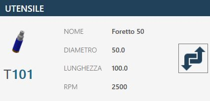
 | Ferramenta ativa A escolha está limitada a:
|
Origem
Ao clicar no campo “Origem”, será apresentado um pequeno teclado numérico no ecrã que permitirá ao operador selecionar uma origem diferente com a qual trabalhar.
Os valores de Origem podem variar de 0 a 19, inclusive.
Exemplo com origem 0:

Exemplo com origem 10:
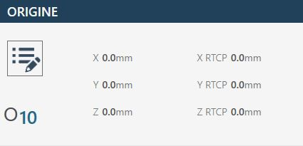
Definições avançadas da origem
Ao premir o botão de opções acima da origem, será aberto um painel com uma vista centralizada de todas as origens disponíveis e dos respetivos valores associados. É possível alterar a origem ativa clicando na linha correspondente.

RTCP - Rotation Tool Center Point
A função RTCP permite ao operador efetuar um posicionamento para um corte inclinado mantendo a altura da ferramenta inalterada, apesar de a inclinação variar durante o posicionamento. O fio interno do disco permanecerá na mesma posição em que se encontra no início do movimento.
Procedimento de funcionamento
Definir a cota objetivo na área dedicada ao eixo “A” (inclinação) ou “C”
Ao premir o botão RTCP, inicia-se a função de inclinação ou rotação mantendo fixo o ponto mais baixo da ferramenta.
O movimento através do comando RTCP só é permitido quando a chave codificada está inserida na posição adequada, identificável na consola do operador.
Aguardar o posicionamento da máquina na cota definida.
Motor
Nesta secção são apresentadas algumas estatísticas relativas ao motor da máquina:

 | Rotações por minuto (RPM) |
 | Consumo (A) |
 | Limiar de alarme (A) |
Feed
O valor Feed representa o deslocamento interpolado da máquina.

Barra lateral direita
Ao iniciar a aplicação, a funcionalidade pré-selecionada é MANUAL.
Esta barra lateral contém os seguintes comandos e programas/funções disponíveis:

Barra inferior
A barra inferior apresenta mensagens informativas e de erro e alguns botões para determinadas funcionalidades.
Seguem-se três exemplos de barra inferior:
Sem alarmes ativos.

Com uma emergência geral ativada, indicada por um ícone, um código de erro (neste caso PE0000), a respetiva descrição e o botão dos alarmes à direita a piscar.

Com uma mensagem apresentada, no exemplo JOG direto ativo.

 | Alarmes |
 | Minimização do software |
 | Desligar a máquina |
Alarmes
A página de alarmes indica os Alarmes/Mensagens ativos do sistema.
Se a máquina não tiver alarmes ativos, a página fica vazia; caso contrário, será apresentada uma linha por cada erro existente.
Na seguinte página de exemplo relativa à gestão e visualização dos alarmes, é apresentado um alarme ativo no sistema:

Botões de alarmes
 | Atualizar |
 | Histórico de alarmes |
 | Mensagens / Alarmes |
Grupos de alarmes |
Visualização dos alarmes - Standard
A visualização standard de um dos alarmes apresentados é composta por:

 | Ligação online |
 | Código do alarme |
 | Descrição |
Visualização dos alarmes - Histórico
O histórico diário dos alarmes inclui, além dos elementos já descritos, também os seguintes dados:

 | Momento da mudança de estado |
Estado do alarme |
Visualização dos alarmes - Grupos
O sistema de agrupamento apresenta uma única entrada para cada alarme, evitando duplicações.

Número de ocorrências | |
 | Momento da primeira ativação |
 | Momento da última ativação |
É possível utilizar as ventosas em modo manual para deslocar peças de uma área de trabalho para outra.
/0_0_Ventose_C.png)
Botões das ventosas
/Test_-_png_-_20.png) | Ativação / desativação das ventosas |
/1.3.png) | VENTOSAS: SUBIR - Estacionamento das ventosas |
/2.3.png) | VENTOSAS: DESCER - Preparar ventosas |
/4.3.png) | ELEVAR PEÇA: LIBERTAR - Descarga da peça |
/3.3.png) | ELEVAR PEÇA: INICIAR - Elevação da peça |
/5.2_off.png) /5.2_on.png) | SOPRO - Comando de sopro |
/6.2_off.png) /6.2_on.png) | VÁCUO - Comando da bomba de vácuo |
Condições de segurança
Preste especial atenção às ventosas ativas durante a elevação, certificando-se de que as áreas utilizadas são suficientes para elevar a peça que está a ser movimentada. Procure utilizar sempre a maior área de vácuo disponível para agarrar a peça e verifique se não existem defeitos ou ruturas no material que possam criar perigos ou problemas de funcionamento da máquina.
Depois de ligada a bomba de vácuo, só é permitido desligá-la através das funções automáticas previstas para esse fim. Premir o botão de reset ou o botão cogumelo de emergência não tem qualquer efeito sobre a bomba de vácuo, que continuará a funcionar. A bomba pode ser desligada à força através do botão específico na página “Comandos Adicionais”.
Nos procedimentos automáticos, antes de elevar a peça, o estado do vácuo é verificado através de um sensor específico: se não for detetado um valor de vácuo suficiente, é apresentado o alarme “falta de vácuo”. A bomba continuará ativa até o vacuóstato detetar um valor correto ou até ser desativada na página “Comandos Adicionais”.
Nas novas versões do Parametrix é possível utilizar a funcionalidade “Corte Único”. Ao selecionar a entrada “Corte Único” na lista, será apresentada uma página semelhante a esta.
Com o Corte Único é possível executar um corte retilíneo (ou também inclinado) na chapa, partindo da posição atual da máquina e terminando no comprimento solicitado pelo utilizador. Com esta função NÃO é possível executar cortes de arcos ou círculos.

Botões
 | Botões de cortes paralelos |
 | Máx. |
 | Stop |
 | Alterar Modo de Passagens |
 | Guardar |
 | Abrir |
Parâmetros
Consoante o tipo de material a maquinar, é possível configurar os parâmetros de forma diferente e guardá-los para eventuais maquinações semelhantes posteriores.
Parâmetros comuns
 | Comprimento do corte único |
 | Medida de deslocamento |
Parâmetros de configuração da maquinação por passagens
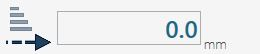 | Penetração no material no movimento para a frente |
 | Penetração no material no movimento para trás |
 | Penetração no material para a última passagem |
 | Velocidade de maquinação no movimento para a frente |
 | Velocidade de maquinação no movimento para trás |
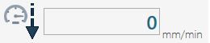 | Velocidade de entrada no material |
 | Velocidade de maquinação da última passagem |
Parâmetros de configuração da maquinação em passagem completa
 | Velocidade de entrada no material |
 | Velocidade de maquinação no movimento para a frente |
Execução da maquinação
Para iniciar a maquinação, posicione primeiro a máquina no ponto de partida pretendido. Depois de corretamente posicionada, é necessário introduzir o valor do comprimento do corte no campo adequado.
Neste momento, é possível ligar o disco utilizando os comandos existentes no painel de botões do monitor. Quando tudo estiver pronto, inicie o processo premindo o botão “Start ciclo”.
A maquinação começará na direção em que a máquina se encontra no momento da ativação do corte, pelo que é importante verificar a orientação antes de iniciar o ciclo.
A página de programação de ficheiros ISO permite gerir e iniciar maquinações através de ficheiros .pgm previamente criados por programas CAD-CAM.

Lista
A lista do programa ISO, inicialmente vazia, contém todos os programas ISO que podem ser executados sequencialmente.

Botões
Estão disponíveis vários botões para gerir a lista.
 | Abrir Ficheiro |
 | Nova lista ISO |
 | Adicionar Pausa |
 | Remover elemento selecionado |
 | Esvaziar lista |
 | Mover elemento selecionado para cima |
 | Mover elemento selecionado para baixo |
Na parte inferior encontram-se ainda os dois botões relativos aos modos de execução dos programas:
  | Manual / automático |
  | Único / próximo automático |
Abrir ficheiro
Ao premir este botão, é apresentada uma janela “Abertura de Ficheiro“ conforme mostrado na imagem seguinte:

Esta janela está dividida nos seguintes componentes:
Lista de Ficheiros
inclui todos os ficheiros em formato .pgm presentes no diretório atualmente selecionado
Botões entre a lista Ficheiros e a lista Ficheiros Selecionados
Lista de Ficheiros Selecionados
Lista inicialmente vazia
pré-visualização do Ficheiro Selecionado
Apresenta uma pré-visualização de um ficheiro .pgm selecionado em Ficheiros ou em Ficheiros Selecionados
Barra inferior e filtro de pesquisa
Botões centrais, situados entre a lista “FICHEIROS“ e a lista “FICHEIROS SELECIONADOS“
 | Selecionar elemento |
 | Remover elemento |
| Inserir pausa |
 | Mover elemento selecionado para cima |
 | Mover elemento selecionado para baixo |
Aqui é apresentado o conteúdo da barra inferior:
 | Limpar filtro de pesquisa |
 | Ordenação por última modificação |
 | Ordenação alfabética |
 | Visualizar ficheiros da pen USB |
 | Visualizar pasta ISO |
 | Visualizar conteúdos |
 | Remover ficheiro |
 | Ativar/Desativar cópia |
Código do Programa ISO
O código do programa ISO em execução é apresentado nesta janela:

Botões
Nesta secção do programa ISO encontram-se os seguintes botões e respetivas funcionalidades.
 | Temporizador e Reset |
 | Pré-visualização ISO |
 | Pesquisa de bloco |
 | Pesquisa de bloco por linha Depois de introduzir um número no campo “Número da linha“ e premir o botão “Ir para“, a visualização do código do programa ISO será deslocada para a linha pretendida ou para a última linha disponível, caso o número introduzido exceda o número de linhas do programa ISO selecionado. É possível concluir a pesquisa de um bloco e restaurar a visibilidade do botão “Pesquisa de bloco“ premindo o botão Fechar: |
 | Função Dry Run (Ativada / desativada) A utilização desta função obriga a NÃO utilizar QUALQUER tipo de material durante a maquinação, pois durante a execução não são respeitadas as velocidades definidas no programa ISO; o controlo numérico executará todo o programa à velocidade nominal máxima alcançável com eixos interpolados. |
 | Função Teste ISO (Ativada / desativada) |
 | Painel de ventosas |
 | Guardar |
Pesquisa de bloco
Durante a execução de ficheiros (.pgm), a função de pesquisa de bloco pode ser útil para reposicionar a ferramenta no ponto em que a máquina interrompeu a execução do programa, em caso de bloqueio da ferramenta no interior do material ou de outros tipos de bloqueio.
Depois de premir o botão, é possível procurar a linha a partir da qual pretende continuar/iniciar a maquinação, através do número da linha premindo o botão “Pesquisa de bloco por linha“ ou percorrendo o ficheiro através da barra de deslocamento junto ao ficheiro e selecionando a linha pretendida.
Depois de selecionar o ponto do programa a partir do qual a máquina continuará o trabalho interrompido, prima o botão “Start ciclo”; a máquina recalculará todas as linhas de código no ficheiro .pgm sem efetuar qualquer movimento. A velocidade desta operação depende do número de linhas de código que têm de ser geradas sem efetuar qualquer movimento.
Concluído o recálculo, a máquina ativa uma pausa automática, solicitando que se prima novamente o botão “Start ciclo” para iniciar a maquinação.
Antes de iniciar o ciclo, recomenda-se ter em consideração o posicionamento inicial da máquina, que envolve todos os eixos em simultâneo.
Isto é necessário porque a máquina se desloca da posição atual para o ponto em que começa a trabalhar pelo percurso mais curto e, para tal, todos os eixos se movem para chegar exatamente a esse ponto.
Isto significa que, por exemplo, o eixo Z não desce apenas quando chega ao ponto inicial, mas desce gradualmente durante o percurso. Isto pode danificar a máquina ou o material se houver uma colisão com material situado ao longo do percurso.
Assim, consoante a situação, é possível desselecionar o movimento de um ou mais eixos, de modo a evitar danos.
Para tal, basta selecionar os botões presentes acima de cada eixo, que passarão de verde para vermelho.
Os botões voltarão automaticamente a verde depois de premir “Start Ciclo”.
Pré-visualização ISO
Se a pré-visualização ISO estiver ativada, será apresentado à direita da caixa “Código do Programa ISO“ um quadro adicional semelhante ao representado a seguir:

A pré-visualização ISO disponibiliza os seguintes botões:
 | Vista em perspetiva |
 | Vista ortogonal ao plano XY |
 | Vista ortogonal ao plano ZX |
 | Vista ortogonal ao plano ZY |
 | Ativar ou desativar a visualização da pré-visualização  |
Execução da maquinação
O operador pode criar uma lista de ficheiros PGM abrindo os ficheiros pretendidos através da função de carregamento adequada.
Antes de iniciar a execução, é possível — opcionalmente — alterar a ordem dos ficheiros na lista e inserir eventuais pausas entre uma execução e outra. Essas pausas permitem gerir o processo de forma mais flexível e, se necessário, interrompê-lo em segurança.
Ao definir o modo de execução para "Automático", fica também disponível a função "Teste ISO", útil para verificar a correção do programa ISO selecionado antes da execução efetiva.
Para iniciar o ciclo de execução, o operador deve premir o botão “Iniciar Ciclo”. Desta forma, será executado o primeiro programa ISO carregado e apresentado na lista.
Os programas ISO podem ser executados segundo dois modos operativos:
O modo “Único” permite interromper a execução da programação no final da execução de cada ficheiro ISO. É necessário premir novamente o botão “Iniciar Ciclo” para prosseguir com a execução do ficheiro seguinte na lista.
O modo “Próximo automático” permite executar os ficheiros ISO em sequência, sem necessidade de intervenção manual, até ao fim da lista.
Em ambos os modos, eventuais pausas inseridas entre os ficheiros permitem ao operador interromper o ciclo a qualquer momento, garantindo assim um controlo contínuo da execução.
O ciclo de aplainamento permite efetuar o aplainamento da bancada ou do material. Este programa é útil quando a bancada fica irregular devido aos cortes ou quando se pretende uniformizar a espessura do material.

Parâmetros de aplainamento
 | Cota de deslocamento relativamente ao eixo X |
 | Cota de deslocamento relativamente ao eixo Y |
 | Medida de deslocamento |
 | Profundidade |
 | Passo Z |
 | Velocidade de corte em penetração |
 | Velocidade de corte para a frente |
 | Modificar origem da ferramenta |
Execução da maquinação
O programa “APLAINAMENTO” não necessita de referenciação da origem X, Y e Z.
Para determinar a posição inicial, é considerada a posição da ferramenta no momento em que o ciclo é iniciado.
Depois de definir os vários parâmetros, leve o disco ligado até à profundidade máxima pretendida da bancada ou do material e inicie o ciclo com o botão START CICLO.
A página de cavidade permite executar uma cavidade retangular com concordâncias e fundo plano.
Para esta maquinação, é necessário utilizar uma fresa adequada, a montar no mandril principal.
Como nível de fundo é considerado o “nível da bancada”.
O ciclo prevê o modo por passagens com entrada helicoidal ao centro e distância entre passagens configurável nos parâmetros.

Parâmetros
 | X |
 | Y |
 | Concordância R |
 | Profundidade da cavidade |
 | Passo Z |
 | Distância entre passagens |
 | Incremento de profundidade na entrada  |
 | Velocidade de trabalho |
 | Velocidade de descida |
 | Referenciar Eixos X e Y  A posição é obtida posicionando o centro da fresa no ponto indicado. |
Execução da maquinação
Introduza as medidas X, Y e R que caracterizam a forma da cavidade retangular pretendida.
Verifique a correção dos dados relativos à ferramenta, em particular o diâmetro.
Estão disponíveis os dois modos de execução seguintes
Modo de alcance da cavidade até à cota da bancada
Para executar corretamente uma cavidade, é necessário posicionar o centro da máquina no ponto de origem da cavidade, conforme mostrado na figura do capítulo anterior. Isto garante que toda a maquinação se desenvolve corretamente relativamente à área designada.
Em seguida, procede-se à definição das medidas características da forma da cavidade que se pretende executar.
Antes de iniciar a maquinação, é fundamental verificar a exatidão dos dados da ferramenta selecionada, com especial atenção ao diâmetro, pois este influencia diretamente a precisão e a qualidade da cavidade.
A aquisição da “cota da bancada” deve ser efetuada tendo como referência o nível do fundo da cavidade. Para a determinar corretamente, posicione-se na borda superior do material e zere a cota Z. A partir daí, efetue um deslocamento para baixo igual à profundidade pretendida da cavidade. Nesse momento, é possível adquirir a cota da bancada através do botão adequado. Com ferramentas do tipo fresa, recomenda-se efetuar esta operação com o eixo A posicionado a 90_, para evitar imprecisões devidas ao comprimento efetivo da ferramenta.
Depois de definida a cota da bancada, procede-se à referenciação dos eixos X e Y. Para tal, prima o respetivo botão de reset, posicionando o centro da fresa exatamente no ponto indicado na figura através do símbolo de referência. Nas máquinas equipadas com laser apontador, é possível adquirir o ponto zero em X e Y utilizando diretamente a referência fornecida pelo laser.
A profundidade da cavidade depende diretamente do nível definido como cota da bancada e da posição do eixo Z no momento em que o ciclo é iniciado através do botão “Start ciclo”. A maquinação é efetuada por meio de uma entrada helicoidal ao centro até à profundidade especificada no parâmetro “Passo em Z”. Em seguida, a área é esvaziada com um movimento concêntrico, seguindo a distância definida nos parâmetros de maquinação.
Os deslocamentos da máquina necessários para atingir a posição inicial são efetuados à chamada “cota de libertação”, que pode ser definida nos parâmetros da ferramenta. Isto garante que a ferramenta não interfere com eventuais obstáculos durante os movimentos de posicionamento.
Modo de posicionamento sobre a peça e reposição a zero do valor da origem
Este modo prevê a definição e posterior utilização do parâmetro: ”Profundidade da cavidade”
Com esta funcionalidade é possível adicionar cortes múltiplos.
Este tipo específico de cortes permite criar uma série de cortes paralelos entre si no mesmo grupo, com a possibilidade de dispor de dois grupos, cada um com a sua direção configurável.
A interface tem um aspeto semelhante ao seguinte:

Barra lateral
Seleção e gestão de grupos de cortes
 | Criação do primeiro grupo de cortes |
| Criação do segundo grupo de cortes |
 | Gestão dos cortes |
Parâmetros dos cortes
Para cada um dos dois grupos de cortes disponíveis para o operador, é possível introduzir até 100 configurações simultâneas de cortes, com os respetivos parâmetros.
 | Direções ortogonais |
Largura | A distância entre um corte e outro. |
Número | A quantidade de cortes paralelos a criar. |
 | Posição dos cortes |
Visualizar cortes seguintes/anteriores |
Alongamento dos cortes
O operador pode alongar todos os cortes presentes no primeiro e no segundo grupo, no início ou no fim, pela medida definida.
 | Start |
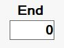 | End |
Eliminar e atualizar cortes
 | Eliminar cortes |
 | Atualizar cortes |
Eixo C
É possível rodar a cabeça da máquina para ajustar a orientação dos cortes tanto do primeiro como do segundo grupo.
 | Rodar _90 |
 | Rodar -90 |
 | Rotação da cabeça da máquina |
MDI |
Espessura
O operador pode definir a espessura da chapa que será cortada.
 | Espessura manual |
 | Espessura com a máquina |
Execução da maquinação
O operador pode configurar ambos os grupos de corte, modificando os respetivos parâmetros.
Depois de obter o resultado pretendido, pode premir o botão “Iniciar ciclo“ para executar a maquinação.
Primeiro grupo de cortes
No primeiro grupo de cortes serão definidos um ou mais grupos de cortes, modificando os parâmetros Largura, Número e Posição dos Cortes, além da rotação do eixo C.
Na maquinação seguinte foram definidos cortes paralelos relativamente à posição atual da máquina.

Segundo grupo de cortes
Tal como no primeiro grupo de cortes, também no segundo é possível modificar os parâmetros para obter o resultado pretendido.
Nesta maquinação, a direção dos cortes foi modificada, executando alguns cortes ortogonais relativamente aos do primeiro grupo.

Otimização e gestão dos cortes
Nesta secção, é possível modificar a ordem de execução dos cortes, podendo escolher se pretende ou não executar um corte.

IsoCam é o software para a execução de perfis com disco; permite desenhar ou importar formas, decidir o perfil e aplicar diferentes modos de maquinação.
A gestão da programação do trabalho está dividida em várias fases, que serão descritas nos parágrafos seguintes.
Ao abrir o programa Isocam, se não existir nenhuma maquinação anteriormente criada, o operador poderá criar uma nova a partir do primeiro passo de maquinação.
Se, pelo contrário, existir uma maquinação anteriormente criada, esta será carregada automaticamente e o operador terá acesso diretamente ao último step da maquinação:

Elementos comuns aos vários steps
A interface do utilizador é composta por várias áreas.
Menu: utilitários rápidos.
Barra superior: funções específicas da página ativa.
Parte central: contém o desenho ou a área ativa consoante a página.
Barra lateral: janela que contém os parâmetros a modificar.
Barra inferior: botões geralmente válidos em várias áreas do software.
Os elementos seguintes permanecerão sempre visíveis, independentemente da fase atual do processo.
Menu
A barra de menus encontra-se na parte superior, acima de todos os outros elementos desta interface.
Visualizar | São disponibilizadas ao operador algumas definições relativas à visibilidade das peças presentes na área de trabalho. |
Opções | É possível modificar definições relativas às cores. |
Idioma | O ISOCAM está atualmente disponível nos seguintes idiomas:
|
Barra lateral direita
 | Definições |
Info | |
 | Gestão dos Steps |
 | Fechar |
Definições
Este painel permite mudar para o modo Avançado do IsoCam, regressar à versão base e modificar os valores de Passo da Grelha em X e Y.

Barra inferior
 | Nova maquinação |
 | Abrir maquinação |
 | Guardar maquinação |
 | Modificar maquinação |
Desenho da secção (step 1 de 4)
A primeira fase da programação consiste no desenho da secção a maquinar. A janela apresenta os comandos típicos de um software CAD: desenho de linha, desenho de arco, snap, mover, etc.
A ideia base do software é criar a secção como um esboço rápido que será depois modificado, entidade a entidade, através dos comandos adequados. A possibilidade de importar desenhos .dxf gerados por CAD externos permanece sempre ativa.
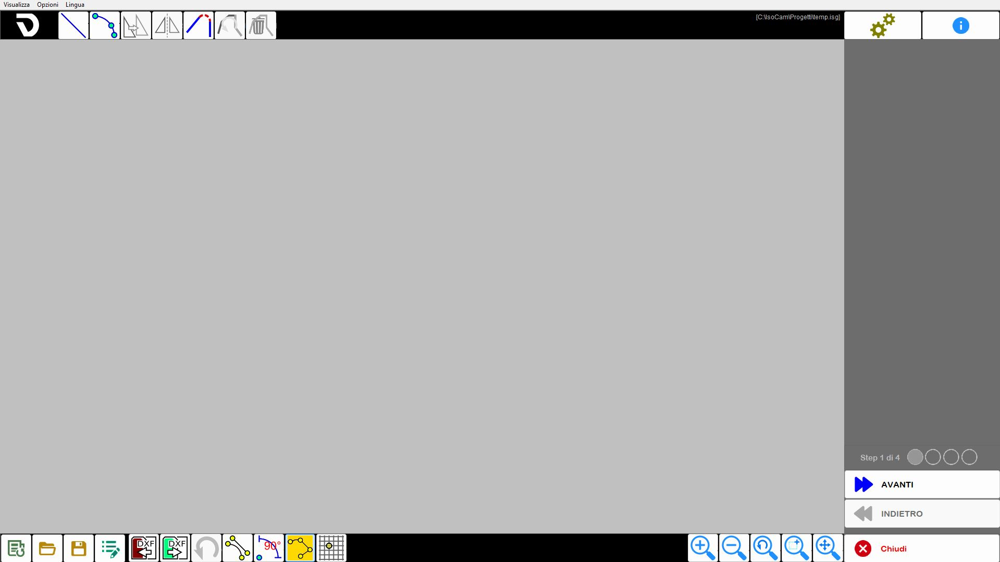
Barra superior

 | Comando de desenho de Linha |
 | Comando de desenho de arco |
 | Move os segmentos selecionados |
 | Figura Espelhada |
 | Concordância |
 | Inversão da seleção ativa |
 | Eliminar segmentos selecionados |
Barra lateral direita
Propriedades da linha
Ao selecionar uma linha na área de trabalho, a coluna lateral direita é atualizada para mostrar as características da entidade selecionada, que podem ser modificadas pelo utilizador:
Comprimento | Indica a distância linear entre as duas extremidades da linha selecionada, calculada com base nas coordenadas no espaço de trabalho. |
Ângulo | Indica a orientação da linha relativamente ao eixo horizontal do sistema de referência. |
Δx | Indica a variação da coordenada X entre o ponto inicial e o ponto final de uma linha ou entidade, ou seja, a distância horizontal percorrida relativamente ao eixo X do sistema de referência. |
Δy | Indica a variação da coordenada Y entre o ponto inicial e o ponto final de uma linha ou entidade, ou seja, a distância vertical percorrida relativamente ao eixo Y do sistema de referência. |
 | Alongar/Encurtar linha selecionada |
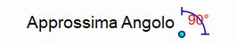 | Aproximar Ângulo |
Escalar segmentos ligados | Permite aplicar uma escala proporcional a todas as entidades direta ou indiretamente ligadas à linha selecionada. |
Propriedades do arco
Ao selecionar um arco na área de trabalho, a coluna lateral direita é atualizada para mostrar as características da entidade selecionada, que podem ser modificadas pelo utilizador.
O arco pode ser definido de várias formas: por pontos, como centro, raio e arco, etc.
As várias características são apresentadas na janela que aparece à direita.
A alteração de algumas características pode ser realizada de várias formas, por exemplo alterando o raio ou o ponto inicial/final; para distinguir o modo de alteração, existe a opção “Centro fixo”.
Raio | Indica a distância constante entre o centro de uma curva circular ou de um arco e qualquer ponto ao longo da sua circunferência. |
Ângulo inicial/final | Ângulo do ponto inicial ou final relativamente ao centro. |
Tangente Ant. / Seg. | Modifica o ângulo inicial ou final de modo que o arco fique tangente à entidade anterior ou seguinte. |
Centro fixo | Permite decidir as consequências de uma alteração (raio ou ângulo). |
Deslocar / Mover seleção
Ao ativar o comando “deslocar”, aparece a janela com os parâmetros de movimentação. A movimentação pode ser efetuada diretamente clicando na área de desenho (também com os snaps ativos) ou através da definição dos parâmetros.
A confirmação do deslocamento deve ser dada com o botão “OK”.
 | Seletor de posição |
 | Translação |
Mover cópia | Se ativada, a função cria uma cópia da entidade selecionada e aplica o deslocamento apenas a essa cópia, mantendo a entidade original inalterada. |
Espelhar
Depois de ativar o comando, é necessário definir o centro de simetria clicando na área de trabalho ou definindo as cotas, selecionar a direção de espelhamento e premir o botão “OK” para confirmar.
Centro de simetria | Permite modificar as coordenadas do centro de simetria utilizado para a inversão horizontal ou vertical da entidade selecionada. |
Coordenadas a inverter | Indica se a inversão deve ser efetuada na horizontal, na vertical ou em ambas as direções. |
Espelhar cópia | Se ativada, a operação de espelhamento é efetuada criando uma cópia espelhada da entidade selecionada, mantendo a original intacta. |
Concordância
Uma primeira mensagem, apresentada na coluna da direita, permite ao operador definir o raio da concordância e confirmar a seleção.

Uma segunda mensagem informa o operador de que agora é possível inserir concordâncias entre duas linhas, operação disponível até a funcionalidade ser desativada.

Segue-se um exemplo de aplicação de concordâncias a duas linhas adjacentes e a uma linha adjacente a um arco:

Após a aplicação das concordâncias:

Barra inferior
 | Importar ficheiro DXF |
 | Exportar ficheiro DXF |
 | Anular alteração |
 | Snap início/fim |
 | Comando Orto |
 | Comando Segmentos ligados |
 | Grelha de desenho |
Undo Zoom | |
 | Selecionar área para Zoom |
 | Restaurar Zoom |
Seleção do perfil (step 2 de 4)
A secção anteriormente desenhada deve ser aplicada a um perfil adequado.
O perfil pode ser linear ou em arco, no plano X/Y ou também vertical; com base na seleção, alguns modos de trabalho serão ativados ou desativados. Assim, por exemplo, um perfil em arco no plano XY só pode ser maquinado com disco vertical e, inversamente, um perfil em arco no plano XZ ou YZ.
O tipo de perfil é escolhido com os botões à esquerda; ao centro, na parte superior, são apresentados os parâmetros para descrever geometricamente o perfil e, ao centro na parte inferior, é apresentada a pré-visualização do resultado.

Parte central
Perfil Linear | Define-se a direção e o comprimento. |
Perfil em arco | Definem-se: direção, plano de trabalho, concavidade e características geométricas. |
Perfil circular | Será maquinado apenas externamente com disco horizontal. |
Parâmetros do perfil Linear

Execução do Perfil | Estão disponíveis dois modos: “Ao longo de X” e “Ao longo de Y”. |
Comprimento da linha (L) | Comprimento horizontal da base do segmento inclinado, medido entre o ponto inicial e o ponto final projetado horizontalmente. |
Delta Z do ponto final (H) | Altura do segmento inclinado, ou seja, a diferença de cota entre o início e o fim do segmento. |
Parâmetros do perfil em Arco

Execução do Perfil | Escolha entre “Ao longo de X“ ou “Ao longo de Y“. |
Orientação da maquinação | Escolha entre “Plano XZ“ ou “Plano XY“. |
Tipo de maquinação | Escolha entre “Côncavo“ ou “Convexo“. |
Comprimento (L) | Distância horizontal entre as duas extremidades do arco, ou seja, a corda que liga o início e o fim do arco. |
Raio inicial (R) | Distância entre o centro do arco e um ponto do próprio arco. Determina a curvatura global do arco. |
Desenvolvimento vertical (H) | Altura máxima do arco relativamente à corda L; representa a distância vertical entre o ponto mais alto do arco e a corda. |
Amplitude do ângulo (A) | Ângulo ao centro subtendido pelo arco, expresso em graus. |
A alteração de um dos seguintes valores: “Comprimento”, “Raio inicial”, “Desenvolvimento vertical” ou “Amplitude do ângulo” provoca o recálculo automático dos parâmetros restantes.
Parâmetros do perfil Circular
Raio inicial (R) | Determina o raio a partir do ponto inicial. |
Proteção | Esta opção indica se, durante a fase de trabalho, o eixo C roda (proteção ativa) ou permanece imóvel com C=0_ (proteção não presente). |
Barra inferior
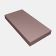 | Vista da mesa |
 | Luzes adicionais |
 | Gestão das vistas predefinidas |
Parâmetros de trabalho (step 3 de 4)
A página está dividida em quadros com diferentes tipos de dados a definir para a maquinação
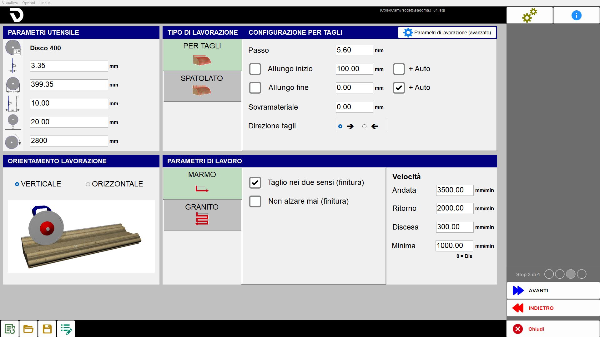
Parâmetros da ferramenta
O operador pode definir os parâmetros da ferramenta:

Se se tratar de um novo projeto, os dados são carregados automaticamente com base na ferramenta fisicamente instalada; se se tratar de uma maquinação anteriormente guardada, os dados da ferramenta serão os já guardados no programa anterior.
 | Nome da ferramenta |
 | Espessura |
 | Diâmetro |
 | CRF (Centro de Rotação da Flange) |
 | Cota de segurança |
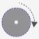 | RPM (Rotações Por Minuto) |
Orientação da maquinação

Perfil Linear
Para perfis lineares, é possível escolher se a maquinação deve ser executada com o disco na vertical ou na horizontal (pela frente ou pela esquerda).
Orientação Vertical | Orientação Horizontal |
 |  |
Perfil em Arco
Para perfis curvilíneos, a orientação é condicionada pelo tipo de perfil:
Tipo de maquinação | Orientação Vertical | Orientação Horizontal |
Côncava | 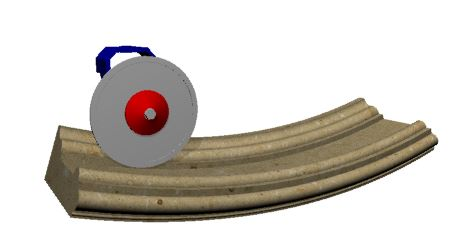 |  |
Convexa |  | 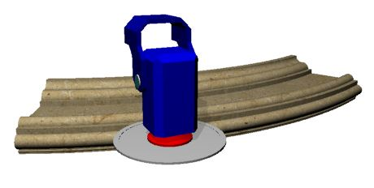 |
Tipo de maquinação

A maquinação pode ser executada em dois modos:
 | Modo por cortes |
 | Modo espatulado |
Configuração Por cortes
Serão executados cortes paralelos entre si que seguem o perfil selecionado, a uma distância entre cortes definida por parâmetro.

Passo | Indica a distância entre a posição de um corte e a do corte adjacente. Se for superior à espessura do disco, ficará material entre as passagens. |
Alongamento início / fim | Permite alongar um corte na parte inicial / final pelo valor definido. |
Mais Auto | A ativação desta opção implica um aumento automático do valor de alongamento, com base num valor definido pelo sistema. |
Sobrematerial | Espessura do material a deixar acima da secção final pretendida. |
Direção dos cortes | A direção do corte pode ser da direita para a esquerda ou da esquerda para a direita, consoante a configuração selecionada. |
Configuração Espatulada
O movimento será transversal à direção do perfil e é utilizado para o acabamento superficial da peça.

Passo de espatulação | Indica a distância entre um movimento transversal e o seguinte ao longo da direção do perfil. |
|---|
Velocidade e modo de corte
Com base nas seleções anteriores, são apresentados diferentes menus para selecionar os parâmetros necessários para definir a maquinação.

Se o tipo de maquinação selecionado for a Configuração por Cortes, estarão disponíveis dois tipos de parâmetros de trabalho:
 | Modo Mármore |
 | Modo Granito |
Modo Mármore
Parâmetros gerais:
Cortes nos dois sentidos (acabamento) | Esta opção permite definir uma velocidade de retorno diferente da velocidade de ida. |
Nunca elevar (acabamento) |
Parâmetros de velocidade:
Ida | A velocidade de execução da passagem de ida. |
Retorno | A velocidade de execução da passagem de retorno. |
Penetração | A velocidade de execução da penetração da passagem. |
Mínima | Ao definir um valor diferente de zero, a velocidade de corte dependerá da profundidade do próprio corte; haverá, portanto, um movimento à velocidade de ida para cortes com profundidade nula e à velocidade mínima quando o corte estiver à profundidade máxima para a secção selecionada. |
Modo Granito

Parâmetros gerais:
Remoção no corte | Quantidade de material removida na passagem de ida. |
Remoção no retorno | Quantidade de material removida na passagem de retorno. |
Se o tipo de maquinação selecionado for a Configuração Espatulada, estará disponível um único parâmetro de trabalho:
Velocidade - Maquinação | Define a velocidade com que o tipo de maquinação espatulada será executado. |
|---|
Parâmetros de maquinação (avançado)
Parâmetros de maquinação (avançado) |
Neste ecrã é possível verificar e modificar vários parâmetros, muitos dos quais foram definidos nos steps 2 e 3.

A primeira operação consiste na seleção do tipo de perfil a utilizar:
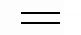 | Linear |
 | Em arco |
E, em seguida, os seguintes parâmetros:
Maquinação | Pode ser por cortes ou espatulado. |
Orientação da maquinação | A maquinação pode ser executada na vertical ou na horizontal. |
Execução do perfil ao longo de | Ao longo de X ou Y. |
Dados de Maquinação
Para o perfil Linear, é possível definir os seguintes parâmetros:
Espessura do material | Define a medida da espessura do material (em mm) |
Inclinação do perfil (mm) | Permite definir a inclinação do perfil indicando a diferença de altura entre o ponto final e o ponto inicial. |
Para o perfil em Arco, estão disponíveis os parâmetros configuráveis nos passos anteriores.
Além disso, ambos os perfis têm em comum os seguintes dados de maquinação:
Passo | Fixo em Y: mantém a distância fixa entre os cortes, independentemente da secção subjacente |
Direção dos cortes | Escolha entre “Y_“ ou “Y-“. |
Maquinação completa do perfil | Permite escolher se pretende ou não executar a maquinação completa do perfil. |
Forçar cortes nos ângulos | Adiciona cortes nos pontos de variação de inclinação. |
Remover sobrepostos | Se esta opção estiver ativada e o valor “Passo“ for superior ao valor “Espessura“, os cortes sobrepostos serão eliminados. |
Passo otimizado (tingimento) % Sobrep. | Se o valor “Passo“ for inferior ao valor “Espessura“, o passo será otimizado nas linhas horizontais. |
Executar corte no início | Permite escolher se pretende ou não executar um corte no início do perfil. Através da caixa adjacente, é possível definir a profundidade deste corte. |
Executar corte no fim | Permite escolher se pretende ou não executar um corte no fim do perfil. Através da caixa adjacente, é possível definir a profundidade deste corte. |
Dados da Ferramenta
Aqui são apresentados alguns dados anteriormente definidos e outros parâmetros específicos da ferramenta.

Descrição da ferramenta | Uma breve descrição da ferramenta |
 | Armazém de ferramentas |
N.º Posição | Indica o número da posição dentro do armazém da ferramenta selecionada. |
N.º Corretor | Indica o número que identifica o nome da ferramenta selecionada. |
Espessura da alma do disco (SA) | Espessura do corpo central de suporte do disco. |
Forma do dente | O operador poderá escolher uma de três formas de dente:
|
Seleção do material
| |
Prioridade | É possível definir um valor de prioridade (estritamente positivo). |
Profundidade | Indica a profundidade do corte da ferramenta. |
Maquinação (step 4 de 4)
Com base nas seleções anteriores, é apresentada uma pré-visualização dos cortes calculados. A página está dividida em várias áreas com comandos para gerir as alterações.

Depois de verificar os cortes ou efetuar as alterações pretendidas, prima o botão “AVANÇAR” para abrir a página de geração do programa de corte.
Menu
No quarto step, fica visível uma entrada adicional no menu superior:
Cortes | Este menu disponibiliza ao operador algumas definições rápidas para os cortes gerados. |
|---|
Barra superior
Geração de cortes | |
 | Modificar a posição do corte |
Adicionar um corte de cabeça para separação das peças | |
 | Adicionar um corte de cauda para separação das peças |
 | Adicionar um corte na posição do rato (Ins) |
 | Eliminar o corte selecionado |
 | Eliminar os cortes anteriores ao corte selecionado |
Eliminar os cortes seguintes ao corte selecionado | |
 | Simulação dos cortes |
Parte central
Barra lateral direita
No quarto step, esta barra contém as seguintes informações:
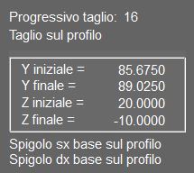 | Número sequencial do corte |
 | Dados Gerais |
 | Dados dos Cortes |
Barra inferior
 | Opções do corte |
 | Mover/alongar cortes |
 | Shift |
Criação do programa
Depois de concluída a preparação no quarto step, é possível aceder à fase final, que inclui a visualização do resultado obtido e a geração do ficheiro ISO.
Na parte central é apresentado o 3D da maquinação gerada, tendo em consideração o modo de trabalho. Clicando na área, é possível rodar a vista e gerir o zoom.

Procedimento básico
Passo 1
Para começar, prima o botão "Nova maquinação". Certifique-se de que a função "Segmentos ligados" está ativa e, em seguida, ative o comando "linha". Efetue uma série de cliques na área de trabalho para desenhar a secção pretendida. Depois de concluir o desenho, clique novamente no comando "linha" para o desativar. Nesse momento, selecione cada entidade individualmente para verificar e, se necessário, modificar os respetivos parâmetros.
Passo 2
Neste passo, o operador pode definir algumas características gerais básicas relacionadas com o tipo de maquinação pretendida.
Passo 3
Neste momento, é possível definir parâmetros relativos à ferramenta, ao tipo, à orientação e aos parâmetros da maquinação selecionada.
No painel “Parâmetros de maquinação (avançado)“ também é possível obter uma visão geral de todos os parâmetros definidos até ao momento.
Passo 4
É gerada automaticamente uma lista de cortes para a maquinação atual. É possível inserir, modificar e remover cortes consoante as necessidades operativas.
Geração ISO
O passo final da maquinação permite ao operador criar um ficheiro ISO a partir da maquinação obtida ou reiniciar o procedimento.
O programa Polimento permite efetuar o polimento através de diferentes tipos de maquinação. Além disso, é possível escolher o modo de aquisição da geometria da chapa: através da deteção dos pontos que determinam os vértices da superfície (de três até um máximo de seis) ou utilizando uma superfície regular (retângulo) através da introdução da cota zero e do valor dos dois lados.
/1.1-20250731-080428.png)
Modo de maquinação
Para utilizar esta maquinação, deve primeiro escolher um dos dois modos disponíveis, selecionando o botão correspondente:
Os modos ‘
Seleção de retângulo
' e '
Seleção livre de pontos
’ são mutuamente exclusivos: a ativação de um exclui automaticamente o outro.
/1.1-20250303-082732.png) | Mudar para o modo Seleção livre de pontos |
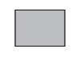 | Mudar para o modo Seleção retangular |
Modo de entrada/saída
Os botões mostrados na figura permitem alterar a entrada e a saída da ferramenta entre o modo progressivo e o modo standard.
Os modos ‘
Progressivo
' e '
Standard
’ são mutuamente exclusivos: a ativação de um exclui automaticamente o outro.
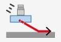 | Mudar para o modo progressivo |
|---|---|
/2.2_b-20250731-113804.png) | Mudar para o modo standard |
Modo Seleção livre de pontos
Este modo é apresentado conforme indicado a seguir:
/c-20250731-120333.png)
Parâmetros
Posição dos pontos
/3.1.1.1-20250731-111822.png) /3.1.1.2-20250731-111843.png) | Set (Definir) |
/3.1.1.3_b-20250731-112553.png) | Limpar |
Tipos de maquinação
/3.1.2.1_b-20250731-114156.png) | Contorno |
/3.1.2.2_b-20250731-114218.png) | Passagens horizontais |
/3.1.2.3_b-20250731-114252.png) | Passagens verticais |
/3.1.2.5_b-20250731-114340.png) | Repetição global |
Parâmetros de maquinação
Repetições | Cada tipo de maquinação pode ser repetido um número de vezes definido neste campo específico. |
Efetuadas | É apresentado o número de repetições efetuadas. |
Passo [mm] | Indica a distância entre uma passagem e a seguinte, selecionável para cada tipo de maquinação. |
Parâmetros da ferramenta para o polimento
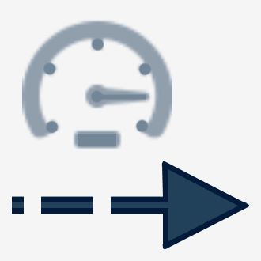 | Velocidade de trabalho |
/3.2.2_b-20250731-114433.png) | Velocidade de descida |
/3.2.3_b-20250731-114455.png) | Desgaste da ferramenta |
Execução do modo Seleção livre de pontos
Entre uma maquinação e a seguinte, a máquina efetua os deslocamentos sem subir até à cota de segurança.
O operador define a posição de um mínimo de três até um máximo de seis pontos disponíveis, movimentando manualmente a máquina e utilizando os respetivos comandos de gravação. Concluída a definição dos pontos, procede-se à configuração dos parâmetros de maquinação para cada tipo de polimento pretendido. Em simultâneo, são definidos também os parâmetros específicos da ferramenta a utilizar para o polimento.
A qualquer momento antes do início do ciclo de polimento, o operador pode alterar o modo de entrada e saída da ferramenta selecionando uma das duas opções disponíveis.
Depois de concluída a configuração, é necessário inclinar o eixo A da máquina a 90_ e iniciar a rotação do disco. O operador pode então executar os ciclos programados premindo o botão “Iniciar ciclo”. Durante a execução, o progresso pode ser monitorizado através da coluna “Efetuadas”, que apresenta os ciclos concluídos para cada tipo de polimento selecionado.
Modo Seleção retangular
Este modo é apresentado conforme indicado a seguir:
/d-20250731-120352.png)
Parâmetros
Posição do retângulo
/4.1.1.2-20250731-115103.png) | Lados do retângulo |
|---|
Parâmetros de maquinação
Consulte o modo parâmetros de maquinação Seleção livre de pontos para as maquinações: Contorno, Passagens horizontais/verticais e Repetição global.
/3.1.2.4_b-20250731-114318.png) | Em ziguezague |
Parâmetros da ferramenta para o polimento
Consulte Parâmetros do disco Seleção livre de pontos para os parâmetros do disco: Velocidade de trabalho, Velocidade de descida e Desgaste do disco.
/3.2.4_b-20250731-114520.png) | Passo do eixo Y para Ziguezague |
Execução do modo Seleção retangular
Entre uma maquinação e a seguinte, a máquina efetua os deslocamentos sem subir até à cota de segurança.
O operador define a posição do retângulo destinado ao polimento, movimentando manualmente a máquina e modificando os valores das coordenadas correspondentes. Concluída a definição do retângulo, procede-se à configuração dos parâmetros de maquinação para cada tipo de polimento pretendido. Em simultâneo, são definidos também os parâmetros específicos da ferramenta utilizada para o polimento.
A qualquer momento antes do início do ciclo de polimento, o operador pode alterar o modo de entrada e saída da ferramenta selecionando uma das duas opções disponíveis.
Depois de concluída a configuração, é necessário inclinar o eixo A da máquina a 90_ e iniciar a rotação do disco. O operador pode então executar os ciclos programados premindo o botão “Iniciar ciclo”. Durante a execução, o progresso pode ser monitorizado através da coluna “Efetuadas”, que apresenta os ciclos concluídos para cada tipo de polimento selecionado.
A página Lista de programação de ficheiros ISO permite executar vários programas consecutivamente, previamente criados por programas CAD-CAM, para máquinas com duas áreas de trabalho, máquinas Twin ou programas com várias maquinações criadas quando a máquina já está em funcionamento.

Barra superior
Na barra superior são apresentadas informações de monitorização do estado de avanço da lista

  | Ativação/Desativação da Lista de Programas ISO |
  | Estado de execução da lista |
   | Barra de progresso da lista |
Barra de progresso da lista
Esta barra de progresso fornece informações sobre o estado de execução do programa ISO em curso, oferecendo simultaneamente uma visão geral do programa seguinte na lista e daquele que já concluiu a fase de maquinação e passou para a descarga.
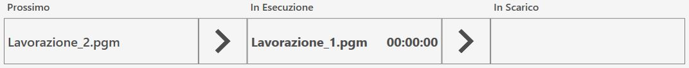
Na imagem anterior ainda não é visível nenhum programa em fase de descarga, pois a execução da lista não foi iniciada e nenhuma peça foi ainda processada. Por outro lado, se existir apenas um ficheiro ISO na lista ou se a maquinação tiver sido iniciada e todos os outros ficheiros já tiverem sido executados, a secção Seguinte ficará vazia.
Durante a execução, será apresentado em tempo real o estado de avanço do programa, conforme ilustrado a seguir.

Menu lateral
No lado direito do painel das ventosas estão presentes alguns botões relativos à gestão dos ficheiros individuais na lista de programas.
 | Executar programa seguinte |
 | Mover elemento selecionado para cima |
 | Mover elemento selecionado para baixo |
 | Eliminar elemento selecionado |
 | Painel de ventosas |
Painel de Ventosas
É possível utilizar as ventosas em modo manual para deslocar peças de uma área de trabalho para outra.

Botões das ventosas
 | Ativação / desativação das ventosas |
 | VENTOSAS: SUBIR - Estacionamento das ventosas |
 | VENTOSAS: DESCER - Preparar ventosas |
ELEVAR PEÇA: LIBERTAR - Descarga da peça | |
 | ELEVAR PEÇA: INICIAR - Elevação da peça |
  | SOPRO - Comando de sopro |
  | VÁCUO - Comando da bomba de vácuo |
Condições de segurança
Preste especial atenção às ventosas ativas durante a elevação, certificando-se de que as áreas utilizadas são suficientes para elevar a peça que está a ser movimentada. Procure utilizar sempre a maior área de vácuo disponível para agarrar a peça e verifique se não existem defeitos ou ruturas no material que possam criar perigos ou problemas de funcionamento da máquina.
Depois de ligada a bomba de vácuo, só é permitido desligá-la através das funções automáticas previstas para esse fim. Premir o botão de reset ou o botão cogumelo de emergência não tem qualquer efeito sobre a bomba de vácuo, que continuará a funcionar. A bomba pode ser desligada à força através do botão específico na página “Comandos Adicionais”.
Nos procedimentos automáticos, antes de elevar a peça, o estado do vácuo é verificado através de um sensor específico: se não for detetado um valor de vácuo suficiente, é apresentado o alarme “falta de vácuo”. A bomba continuará ativa até o vacuóstato detetar um valor correto ou até ser desativada na página “Comandos Adicionais”.
A falta de alimentação da bomba de vácuo provoca uma rápida perda de vácuo e a consequente queda do material elevado pelas ventosas.
Barra inferior
Na parte inferior da barra são apresentadas algumas funcionalidades relativas à execução da lista de programas ISO, além da monitorização tanto da ferramenta como da chapa.

Gestão da execução da lista
Na parte inferior encontram-se ainda os dois botões relativos aos modos de execução dos programas:
  | Manual / automático |
  | Único / próximo automático |
Monitorização da chapa e da ferramenta
Ao centro e à direita da barra inferior, o operador pode configurar monitorizações periódicas do diâmetro da ferramenta, definindo verificações em intervalos determinados com base no número de ciclos efetuados.
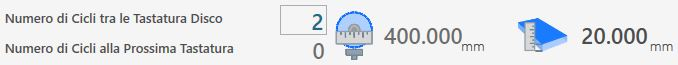
 | Número de Ciclos entre Medições do Disco |
|---|---|
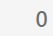 | Número de Ciclos até à Próxima Medição |
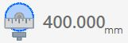 | Diâmetro da ferramenta |
 | Espessura da chapa |
Execução da Lista de Programas ISO
Se a Lista de Programas ISO estiver desativada, o interruptor no canto superior direito do painel aparecerá desligado; será então possível ativar a funcionalidade simplesmente clicando neste botão.
A lista de programas ISO é automaticamente ampliada à medida que são gerados ficheiros ISO no Parametrix; de qualquer forma, o operador pode reposicionar elementos dentro da lista ou removê-los consoante as suas necessidades.
Antes de prosseguir com a execução da lista, o operador pode definir o número de ciclos que serão executados entre as operações de medição da ferramenta.
Será então atualizado e apresentado o número de ciclos restantes até à medição seguinte.
O operador inicia a execução da lista de programas premindo o botão “Iniciar ciclo“. Desta forma, os programas são executados em sequência, com a apresentação simultânea do programa em curso, do programa que será executado a seguir e do programa já concluído.
Se o modo de execução dos programas estiver definido como Manual e Único, a execução da lista será interrompida no fim do programa em execução, imediatamente após preparar o programa seguinte a executar.
Nesta situação, o operador pode premir o botão Seguinte quando considerar adequado e prosseguir com a execução premindo novamente o botão “Iniciar Ciclo“
O sistema foi concebido para facilitar ao operador a programação dos cortes automáticos. Através do software é possível:
Definir a posição da chapa na área de trabalho da máquina e criar o perímetro do material para a maquinação
Criar peças através de figuras paramétricas
Importar figuras criadas com outros CAD
Gerar uma lista de peças a maquinar
Procurar a melhor posição das peças na chapa
Definir funções especiais de corte
Programar a ordem de corte e criar o movimento da máquina
Monitorizar no ecrã a execução dos cortes

Área de trabalho e lista de peças
Segue-se uma representação típica da área de trabalho do Parametrix com a lista de peças importadas já preenchida e uma imagem da chapa adquirida.
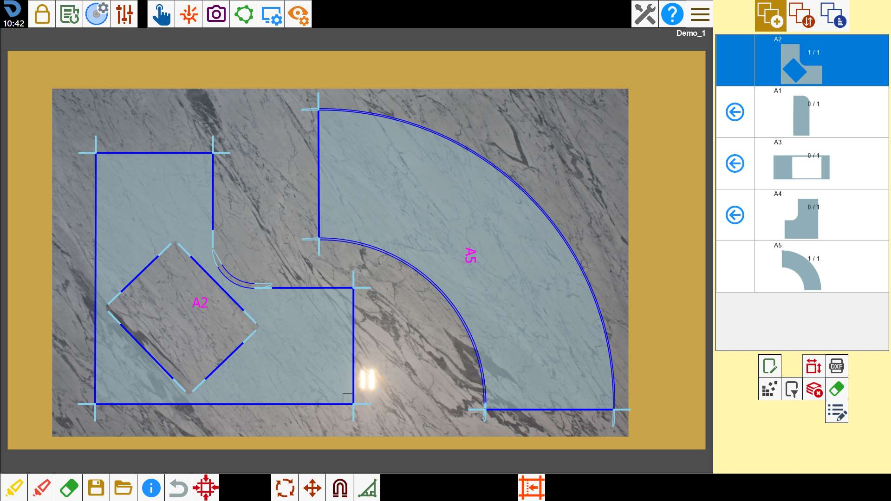
Lista de peças inseridas
Quando é criada uma peça, o programa adiciona-a à lista de peças; a partir da lista é possível inseri-la na área de trabalho, efetuar algumas alterações à peça e verificar o número de peças em falta para a maquinação.

Posicionamento das peças
O Parametrix permite posicionar peças dentro da área de trabalho da máquina para criar o ficheiro de corte.
Depois de adquirida a chapa, criado o perímetro e criadas as peças da maquinação, é necessário importar as peças para o interior da chapa; através do botão na tabela de peças, a peça é colocada dentro da área de trabalho. É possível trabalhar com 1 ou mais peças em simultâneo.
 | Se as peças não estiverem totalmente no interior da chapa, aparecerá um sinal de atenção\perigo no canto superior esquerdo. |
|---|
Barra superior
Na parte superior do ecrã, ao centro e à esquerda, são visíveis os seguintes botões, precedidos pelo logótipo e pela hora indicada:

A barra superior de comandos é complementada por alguns botões que serão descritos mais adiante:
 | Parâmetros do utilizador |
 | Nova maquinação |
 | Parâmetros da ferramenta |
Painel de parâmetros de maquinação da chapa | |
 | Acesso ao comando manual |
Gestão do laser | |
 | Adicionar foto à bancada |
 | Perímetro da chapa |
 | Gestão da visualização da bancada |
 | Visualização das entidades de trabalho |
Secção lateral
Os botões situados no canto superior direito permitem ao operador mudar o ecrã do Parametrix.
Cada ecrã é responsável por um aspeto específico da maquinação de uma chapa.
 | Posicionamento das peças
|
 | Gestão da ordem de corte das peças |
 | Otimização e gestão dos cortes
|
No canto inferior direito encontram-se os seguintes botões, cujas funcionalidades serão descritas mais adiante.
Modificar peça | |
 | Ativar/desativar peças standard |
 | Criação de peça |
Nesting | |
 | Ordenar ou filtrar peças |
 | Eliminar lista de peças |
 | Eliminar peça |
 | Modificar propriedades adicionais da peça |
Barra inferior
Ao abrir a funcionalidade “Parametrix”, a barra inferior sofrerá algumas alterações, conforme mostrado a seguir:

Esta barra é complementada com estes botões:
 | Seleção múltipla |
 | Selecionar tudo |
 | Remover peça |
 | Guardar |
 | Carregar |
 | Painel de informações |
 | Anular alteração |
 | Máquina no corte |
 | Rotação da peça |
 | Mover peças |
 | Magnetizar peças |
Corte inclinado | |
 | Modificar peça standard |
Depois de premir o botão, podem ser visualizadas várias janelas.
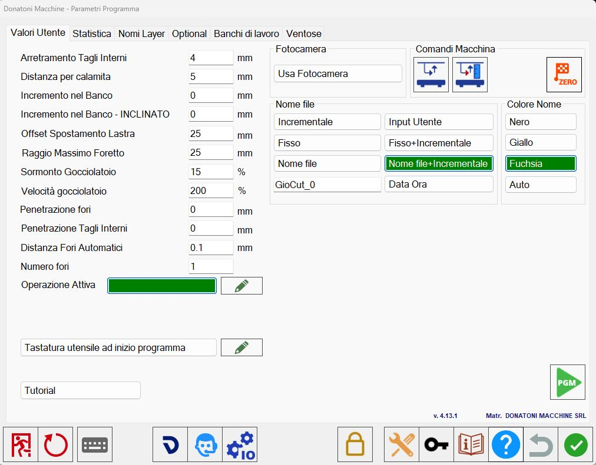
Janelas
Estão disponíveis 4 janelas diferentes, que serão descritas individualmente a seguir.
Valores do Utilizador | Janela dedicada à modificação de algumas definições relacionadas com as maquinações. |
Estatísticas | O operador pode visualizar as estatísticas das maquinações efetuadas. |
Nomes dos Layers | Janela dedicada às definições para a importação de ficheiros DXF no Parametrix. |
Ventosas | Parâmetros relativos à velocidade de deslocamento das ventosas. |
Barra inferior
 | Fechar Parametrix |
 | Reiniciar Parametrix |
 | Teclado |
 | Ligação da câmara fotográfica |
 | Assistência remota |
 | Parâmetros técnicos |
Introdução da palavra-passe | |
Acesso ao guia web | |
 | Não guardar as alterações |
Importação de manutenção a partir de ficheiro
Acedendo à página dos parâmetros técnicos e, em seguida, à secção “File Path 2”, na área relativa à manutenção, será apresentado o seguinte ecrã:

Com o botão seguinte, será possível importar ficheiros .mnt para executar a manutenção.
 | Importar de ficheiro |
Nesta janela, o operador pode modificar alguns parâmetros relacionados com a maquinação.
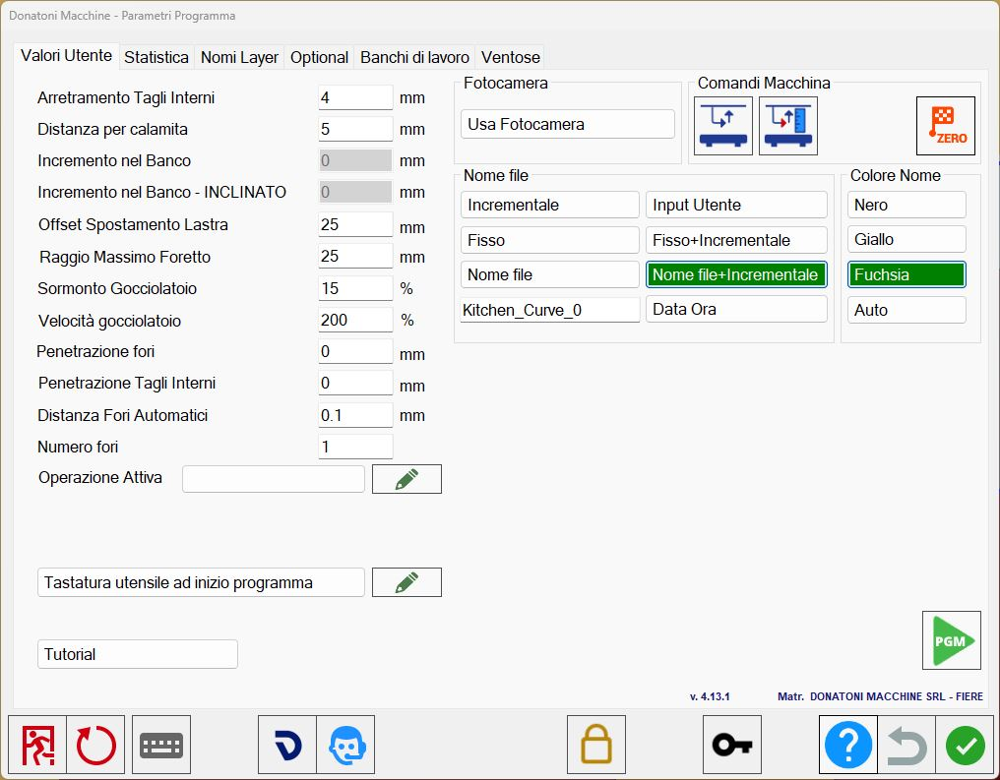
Secção à esquerda
Recuo dos cortes internos | A distância mínima de aproximação do disco à peça para os cortes internos. |
Distância para magnetização | A distância entre duas peças antes de o íman ser ativado. |
Incremento na bancada | Profundidade de penetração da ferramenta na bancada. |
Incremento na bancada - inclinado | Profundidade de penetração da ferramenta na bancada. Apenas para o modo isoparamétrico. |
Offset de deslocamento da chapa | Cota adicional para a funcionalidade move. |
Raio máximo da broca craniana | Para a importação dxf, raio máximo para que um círculo seja importado como furo. |
Sobreposição da goteira | A percentagem de sobreposição da goteira, de 99% a 0%. |
Velocidade da goteira | A percentagem da velocidade da goteira relativamente à velocidade dos cortes normais. |
Penetração dos furos | Define a penetração de todos os furos; definir como 0 para furo passante. |
Penetração dos cortes internos | Define a penetração de todos os cortes internos; definir como 0 para corte passante. |
Distância dos furos automáticos | Indica a distância entre um furo e o seguinte na inserção de furos múltiplos. |
Número de furos | Número de furos a utilizar para os furos em ângulo. |
Operações
Operação ativa | Permite criar uma operação personalizada nos cortes. |
 | Operações personalizadas |
Secção da câmara
Utilizar câmara | É ativada a utilização da câmara ou o operador escolhe a imagem a partir de um ficheiro. |
Secção de comandos da máquina
 | Ativar/desativar controlo de cota |
 | Aquisição da cota da bancada |
 | Referenciar eixos |
Secção do nome do ficheiro
O nome do ficheiro pode ser definido na caixa de texto no canto inferior esquerdo segundo um dos seguintes modos.
Incremental | Incrementa o nome do ficheiro ISO, 100, 101, 102… |
Entrada do utilizador | O utilizador pode introduzir o nome do ficheiro. |
Fixo | Nome fixo do ficheiro ISO; introduzir o nome pretendido no campo adjacente. |
Fixo _ Incremental | Nome do ficheiro ISO em formato incremental fixo, tipo File_101. |
Data hora | Nome do ficheiro ISO em formato data/hora, tipo 20191206_080124. |
Nome do Ficheiro | O ficheiro ISO assume o nome do ficheiro (DXF ou CSV) importado. |
Nome do Ficheiro _ Incremental | O ficheiro ISO assume o nome do ficheiro (DXF ou CSV) importado, com a adição de um valor incremental. |
Secção da cor do nome
Preto | Texto da peça preto. |
Amarelo | Texto da peça amarelo. |
Fúcsia | Texto da peça fúcsia. |
Auto | Determina automaticamente a melhor cor para o nome da peça |
Secção de cor Book Match
Fundo | Gere a cor de fundo da função Book Match |
Nome | Gere a cor do nome na função Book Match |
Perímetro | Gere a cor do perímetro na função Book Match |
Outros botões
Medição da ferramenta no início do programa | Se ativada, permite inserir um ciclo de medição no início do programa de corte ao passar para o ecrã de gestão dos cortes. |
| Operações personalizadas |
Tutorial | Permite aceder aos vídeos tutoriais do Parametrix. |
 | Ativar/Desativar PGM |
Modo descarregar tudo | Este parâmetro tem dois valores possíveis: |
Tutorial
Nesta janela estão disponíveis tutoriais que mostram como utilizar algumas funções do Parametrix.
Para ver o vídeo pretendido, prima a linha correspondente.

Através desta janela é possível visualizar as estatísticas das maquinações executadas pela máquina.
As estatísticas incluem também maquinações do tipo corte único, cavidade, aplainamento e execução ISO.

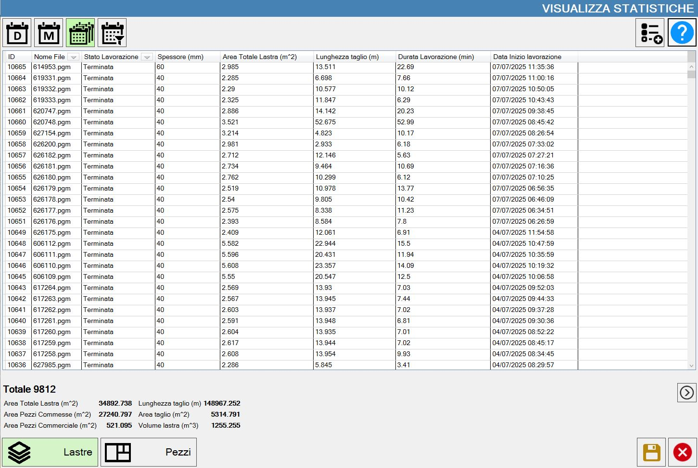
Estatísticas no ecrã
Através do botão no canto superior esquerdo, é possível aceder à janela de estatísticas no ecrã.
 | Estatísticas no ecrã |
Abre-se então uma janela que mostra algumas informações relacionadas com as maquinações efetuadas na máquina.
Cada entrada da lista corresponde aos dados relativos a uma única maquinação.
No fim da página é apresentado um resumo das informações importantes de todas as maquinações visualizadas.
Botões
Estatísticas diárias | |
 | Estatísticas mensais |
 | Estatísticas totais |
 | Intervalo de tempo configurável |
 | Colunas a visualizar |
Guardar estatísticas | |
 | Visualizar estatísticas das chapas |
 | Visualizar estatísticas das peças |
Estatísticas por máquina (Opcional)
Na versão do Parametrix em modo escritório, é possível ligar-se a várias máquinas e visualizar as estatísticas de cada uma.
Na secção da esquerda são apresentadas todas as máquinas ligadas ao dispositivo.

Pesquisa
Esta função permite efetuar uma pesquisa das estatísticas dentro de um intervalo temporal à escolha.

O operador pode introduzir a data de início e de fim para delimitar o intervalo temporal de interesse.
É possível definir a precisão da pesquisa utilizando os botões.
 | Pesquisa por dia |
 | Pesquisa por mês |
 | Pesquisa por ano |
Para exportar as estatísticas, utilize o botão:
Guardar estatísticas |
Temporizador
Nesta secção é possível gerir os temporizadores da máquina.

Utilizando os seguintes botões, o operador pode gerir manualmente um temporizador para acompanhar o tempo decorrido.
 | Iniciar temporizador |
 | Parar temporizador |
 | Repor temporizador |
Na secção da esquerda estão presentes informações relativas ao tempo de utilização da máquina e das ferramentas montadas.
Tempo total | Indica o tempo total de trabalho da máquina. |
Tempo do disco | Mostra o tempo de utilização do disco. |
Massa lubrificante
Para iniciar a lubrificação automática da máquina, utilize o seguinte botão:
 | Iniciar ciclo de lubrificação |
O Parametrix permite importar ficheiros no formato “.dxf“ criados através de programas CAD externos específicos.

Botões
 | Colorir os Layers |
 | Dynamic Tags |
A máquina pode executar cortes, fresagens e furos através de desenhos criados com software CAD e guardados no formato “.dxf“, com reconhecimento automático de algumas maquinações úteis para simplificar e acelerar o trabalho do operador na máquina.
Para que o Parametrix possa interpretar estas informações, devem ser respeitadas algumas convenções durante a criação do desenho:
Todas as peças desenhadas devem estar fechadas e convertidas em polilinhas, formando um polígono.
Se pretender inserir a marca da peça para identificação, esta deve ser colocada dentro do polígono.

Definições do Parametrix para o reconhecimento dos layers importados
Para aceder à janela dedicada às definições de personalização relativas à importação de ficheiros DXF, prima o botão Parâmetros do Utilizador na barra superior do Parametrix.
A partir daqui, aceda à secção dedicada à gestão dos nomes dos Layers.
Para cada tipo de função indicado, o utilizador pode atribuir um nome (correspondente ao nome do Layer definido no software CAD utilizado) e atribuir alguns parâmetros relativos aos valores predefinidos de determinadas maquinações.
Função | Nome do Layer |
Cortes inclinados | Inclinado |
Espelho | Espelho |
Revestimento | Revestimento |
Offset | Offset |
Cortes por baixo do material | Por baixo |
Goteira | Goteira |
Fresagem | Fresagem |
Rebaixo | Rebaixo |
Furação | Furação |
Corte adicionado | Adicionado |
Furo de ancoragem | Keil |
Chanfro | Chanfro |
Bico | Bico |
Desativar | Desativar |
Remover | Remover |
Botões
Os botões à esquerda de cada maquinação permitem:
 | Janela de informação |
 | Descarregar exemplo |
Modo Corte Inclinado
Para inserir automaticamente um corte inclinado, é necessário respeitar algumas convenções:
Os cortes inclinados só podem ser inseridos nos lados das peças; se o corte inclinado não se aplicar a todo o segmento, este pode ser dividido em várias partes.
O corte inclinado pode ser aplicado em arcos exteriores (por ex.: mesa circular ou tampas curvas, apenas no que se refere ao corte exterior).
No caso dos arcos internos (por ex.: tampas curvas), o corte é efetuado em passagens; o corte será executado inclinando automaticamente o disco, evitando problemas de colisão com o material.
O procedimento para quem utiliza sistemas CAD prevê a criação de um Layer com as seguintes propriedades:
Nome do Layer | Inclinato _ (seguido do número que identifica os graus de inclinação pretendidos). |
Exemplo | Inclinato45 ou Inclinato-45 |
Quando é introduzido um valor negativo, a inclinação refere-se a um corte divergente; se o valor for positivo, o corte será convergente para o interior do polígono.
Modo Alçado
A função Alzata é uma maquinação que permite obter uma peça retangular com o mesmo comprimento da linha definida como lado de referência.
Para a inserção automática dos cortes ao criar um alçado, é necessário criar um Layer com o nome “Alzata” e, em seguida, introduzir a medida da altura.
Nome do Layer | Alzata _ (seguida da medida da altura do alçado). |
Exemplo | Alzata100 |
Este automatismo no Parametrix cria uma nova peça com largura igual ao comprimento da linha que identifica o lado do alçado pretendido, com os dois lados que serão colados entre si cortados com a mesma inclinação, prontos para acabamento com cartabuono.
A inclinação associada a estes lados pode ser definida através do parâmetro ao lado.
Graus | Permite definir a inclinação com que são importados os lados inclinados da maquinação. |
Modo Revestimento
A função Rivestimento / Alzata é uma maquinação que permite obter uma peça retangular com o mesmo comprimento da linha definida como lado de referência.
De forma semelhante, para a inserção automática dos cortes ao criar um revestimento, é necessário criar um Layer com o nome “Rivestimento” e, em seguida, introduzir a medida da altura.
Nome do Layer | Rivestimento _ (seguida da medida da altura do revestimento). |
Exemplo | Rivestimento150 |
Este automatismo no Parametrix cria uma nova peça com largura igual ao comprimento da linha que identifica o lado do revestimento pretendido, sem corte inclinado, pronta para um acabamento em ângulo reto com acabamento de borda.
Modo Offset
A função offset é muito útil quando se pretende deixar mais material do que as dimensões da peça acabada; através do desenho de linhas nos lados pretendidos, as funções associadas aos lados indicados serão deslocadas automaticamente na direção correta.
Para inserir automaticamente o sobrematerial pretendido, é necessário criar um Layer com o nome “Offset” e inserir todas as linhas correspondentes aos lados onde se pretende obter o efeito automático da definição.
Nome do Layer | Offset _ (seguido do número que identifica a medida de offset). |
Exemplo | Offset3 |
Modo Corte Inferior
A função de corte inferior só é válida para quem instalou o opcional mecânico que permite efetuar um corte por baixo da superfície visível da chapa.
Para inserir automaticamente um corte inferior, é necessário criar um Layer com o nome “Sotto” e inserir uma linha que representará o corte.
Nome do Layer | Por baixo |
Exemplo | Por baixo |
O comprimento do corte resultante também depende do diâmetro do disco e da espessura do material definidos no Parametrix.
Modo Goteira
A função de goteira permite inserir um corte com largura superior à espessura do disco e profundidade inferior à espessura do material.
Para inserir automaticamente uma goteira, é necessário criar um Layer com o nome “Gocciola” e inserir uma linha ou arco que represente o centro da largura.
Nome do Layer | Gocciola _ (seguida do número que identifica a largura da goteira). |
Exemplo | Gocciola10 |
Deste modo, a profundidade da goteira é definida pelo parâmetro específico.
Cavidade | Profundidade do corte associado à goteira. Este valor não é considerado se o utilizador definir um valor no DXF. |
A profundidade de corte pode ser gerida automaticamente utilizando como valor o parâmetro específico no Parametrix ou permitindo que o utilizador defina um valor introduzindo o caráter “&” seguido da espessura pretendida.
Nome do Layer | Gocciola _ (largura da goteira) _ & _ (profundidade da goteira). |
Exemplo | Gocciola10&5 |
O comprimento do corte resultante também depende do diâmetro do disco e da espessura do material definidos no Parametrix.
Para goteiras em curva é efetuado um único corte com o disco no exterior do próprio arco.
Os eventuais parâmetros indicados no nome do Layer não são considerados.
Modo Fresagem
Para inserir automaticamente uma fresagem, é necessário respeitar algumas convenções.
Se for criada uma geometria de fresagem que abranja um ou mais lados do polígono exterior, a fresa executará a maquinação no exterior do perímetro desenhado; o mesmo se aplica a um único lado do perímetro; se a maquinação prever o corte de todo o perímetro com a fresa, são removidos eventuais cortes com o disco.
A profundidade de corte pode ser definida através da criação de um Layer específico.
Nome do Layer | Fresatura _ (seguida do número que identifica a espessura da fresagem). |
Exemplo | Fresatura10 |
Se não for indicado qualquer valor de profundidade no nome do Layer “Fresatura“, é considerada a espessura da maquinação em curso.
Uma funcionalidade adicional permite inserir uma polilinha (aberta/fechada, por exemplo um círculo ou um percurso único composto por uma polilinha linear) para fresar uma forma dentro do perímetro maior.
Modo Rebaixo / Filo Top
A função Ribasso / Filo Top é uma maquinação que permite rebaixar um perímetro, normalmente para embutir eletrodomésticos ou lava-loiças.
Para inserir automaticamente o rebaixo pretendido, é necessário criar um Layer com o nome “Ribasso”.
Nome do Layer | Ribasso _ (seguida do número que identifica a largura do rebaixo). |
Exemplo | Ribasso20 |
Deste modo, a profundidade do rebaixo é definida pelo parâmetro específico.
Cavidade | Profundidade do rebaixo. Este valor não é considerado se o utilizador definir um valor no DXF. |
A profundidade do rebaixo pode ser gerida automaticamente utilizando como valor o parâmetro específico no Parametrix ou definida pelo utilizador introduzindo o caráter “&” seguido da espessura pretendida.
Nome do Layer | Ribasso _ (largura do rebaixo) _ & _ (espessura do rebaixo). |
Exemplo | Ribasso20&3 |
O raio de concordância entre os lados do perímetro não pode ser alterado pelo utilizador; é determinado pelo raio da fresa.
O rebaixo pode ser efetuado num percurso fechado que não se sobreponha aos lados da peça; neste caso será efetuada uma fresagem dentro do perímetro desenhado.
Modo Furação
A função de furação permite ao software Parametrix adicionar maquinações de furação às peças.
Para inserir automaticamente uma maquinação de furação, é necessário criar um Layer com o nome “Foratura” e desenhar um círculo onde se pretende efetuar o furo.
Nome do Layer | Foratura _ (seguida do número que identifica a profundidade do furo). |
Exemplo | Foratura5 |
Se a profundidade não for especificada, o furo será aplicado com a espessura do material atualmente utilizada pelo Parametrix.
No modo básico, o raio do círculo corresponde ao raio da ferramenta atualmente definida no Parametrix.
Modo Corte Adicionado
A função de corte adicionado permite ao software Parametrix adicionar um corte.
Para inserir automaticamente um corte adicionado, é necessário criar um Layer com o nome “Aggiunto” e desenhar uma nova linha sobre a linha que representa o lado para o qual se pretende criar um corte adicionado.
Nome do Layer | Aggiunto _ (seguido do número que identifica a distância à qual o corte será adicionado). |
Exemplo | Aggiunto50 |
O corte será adicionado no interior (onde existe material) ou no exterior (onde não existe material) da peça, com base no sinal da distância:
Se o sinal da distância for positivo, o corte será adicionado no exterior da peça.
Caso contrário, quando o sinal da distância for negativo, o corte será adicionado no interior da peça.
Ao aplicar um corte adicionado a cortes internos, por exemplo de um recorte, o corte será adicionado no interior da peça, onde não existe material.
Modo Furo de Ancoragem
A função de furo de ancoragem permite ao software Parametrix adicionar maquinações de furo de ancoragem às peças.
Para inserir automaticamente uma maquinação de furo de ancoragem, é necessário criar um Layer com o nome “Keil” e desenhar um círculo onde se pretende efetuar o furo de ancoragem.
Nome do Layer | Keil _ (seguido do número que identifica a profundidade do furo de ancoragem). |
Exemplo | Keil5 |
No modo básico, o raio do círculo corresponde ao raio da ferramenta atualmente definida no Parametrix.
Modo Chanfro
A função de chanfro permite ao software Parametrix adicionar maquinações de chanfro às peças.
Para inserir automaticamente uma maquinação de chanfro, é necessário criar um Layer com o nome “Smusso” e desenhar uma nova linha sobre a linha que representa o lado para o qual se pretende criar um corte adicionado.
Nome do Layer | Smusso _ (distância ao longo do eixo X) _ & _ (distância ao longo do eixo Y) _ & _ (ângulo de inclinação). |
Exemplo | Smusso10&10&45 |
Se os três valores não forem geometricamente compatíveis entre si, a maquinação não será aplicada.
Modo Bico
A função de bico permite ao software Parametrix adicionar maquinações de chanfro às peças.
Para inserir automaticamente uma maquinação de bico, é necessário criar um Layer com o nome “Becco” e desenhar uma nova linha sobre a linha que representa o lado para o qual se pretende criar um corte adicionado.
Nome do Layer | Becco _ (distância ao longo do eixo X) _ & _ (distância ao longo do eixo Y) _ & _ (ângulo de inclinação). |
Exemplo | Becco10&10&45 |
Se os três valores não forem geometricamente compatíveis entre si, a maquinação não será aplicada.
Modo Desativar
A função desativar permite ao software Parametrix desativar cortes nas peças.
Para inserir automaticamente uma função de desativação, é necessário criar um Layer com o nome “Disattiva” e desenhar uma nova linha sobre a linha que representa o lado que se pretende desativar.
Nome do Layer | Desativar |
Exemplo | Desativar |
Modo Remover
A função remover permite ao software Parametrix remover cortes das peças.
Para inserir automaticamente uma maquinação de remoção, é necessário criar um Layer com o nome “Rimuovi” e desenhar uma nova linha sobre a linha que representa o lado que se pretende remover.
Nome do Layer | Remover |
Exemplo | Remover |
Modo Furo
A função de furação permite ao software Parametrix reconhecer qualquer círculo com um raio inferior ao parâmetro “Raggio massimo foretto” presente dentro da área da peça.
Os furos podem ser inseridos livremente em todos os Layers (que não estejam identificados como neutros).
Uma opção adicional relativa à utilização da broca craniana permite remover uma ilha de material que permaneceu presa depois de executar os cortes com o disco; para que esta opção seja considerada pelo software Parametrix, devem ser desenhados um ou mais círculos que intersectem os lados da ilha cortada com o disco e, através do parâmetro “Distanza Fori Automatici”, será posicionada uma série de furos calculados automaticamente com base no material que ainda falta cortar depois do corte com o disco.
Gestão de Layers neutros
Se pretender manter no ficheiro DXF algumas partes do desenho que não devem ser consideradas como cortes ou outras funcionalidades a gerir com o software Parametrix, é possível atribuí-las a alguns Layers reconhecidos como neutros.
Crie os Layers com os nomes atribuídos nos campos Layer neutri (1,2,3) da página “Nomi Layer” dos parâmetros do utilizador do Parametrix, tendo em conta que o caráter “*” fará com que todos os Layers importados com o mesmo nome antes e depois do símbolo “*” não sejam considerados na importação.
Exemplos
Através desta função é possível colorir um ou mais cortes de peças criadas a partir de DXF.

Botões
Alterar cor do layer |
Procedimento
Para associar uma cor aos cortes de uma peça é necessário:
Criar um Layer no software CAD;
Atribuir-lhe uma cor no painel específico do Parametrix;
Desenhar uma linha (ou curva) sobre a que representa o corte que se pretende colorir dentro do Layer.
Depois de a peça ser importada, o corte sobre o qual foi desenhada a linha no Color Layer terá a cor definida no Parametrix (e não a definida no DXF).
A linha desenhada sobre o corte que se pretende colorir deve estar completamente sobreposta à linha que representa o corte.
Exemplo
Neste exemplo pretende-se colorir dois cortes da peça. Foi criado o Layer “ColoreE“ e foram adicionadas linhas sobre as que se pretende colorir.
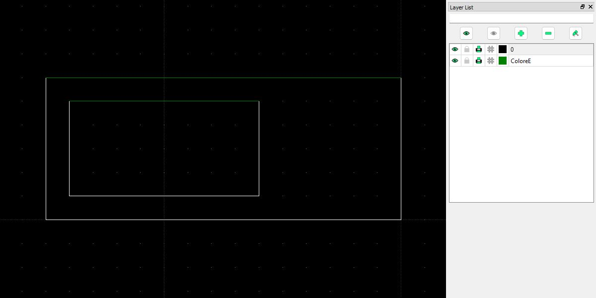
Como se pode ver na área de trabalho do Parametrix, os cortes assumem a cor associada ao Layer do ficheiro DXF importado.

Com esta função é possível atribuir parâmetros de configuração aos Layers dos ficheiros DXF.

Parâmetros
Os parâmetros são:
Name | Serve para definir e reconhecer o nome do Layer. |
Entity Type | Define o tipo de entidades que serão apresentadas. |
LineWeightMethod | Permite escolher o modo utilizado para obter a espessura das linhas. |
LineWeight | Permite definir a espessura das linhas pertencentes ao Layer. |
ColorMethod | Permite escolher o modo utilizado para obter a cor do Layer. |
Color | Permite definir a cor das entidades pertencentes ao Layer. |
Botões
Com os botões seguintes é possível adicionar ou eliminar uma configuração:
 | Criar configuração |
 | Eliminar configuração |
Exemplo
Neste exemplo pretende-se alterar as características dos elementos desenhados no Layer “Venature“.

As entidades são importadas respeitando os parâmetros definidos na janela correspondente.

Nesta secção é definida a velocidade de deslocamento da peça com as ventosas.

Parâmetros
Velocidade XY | Determina a velocidade de deslocamento da peça com as ventosas. |
Velocidade Z | Determina a velocidade de deslocamento da peça com as ventosas em Z. |
Velocidade de rotação | Determina a velocidade de rotação da peça com as ventosas. |
Velocidade XY na descarga | Determina a velocidade de deslocamento da peça com as ventosas durante a fase de descarga da peça ou corte inferior. |
Velocidade Z na descarga | Determina a velocidade de deslocamento da peça com as ventosas em Z durante a fase de descarga da peça ou corte inferior. |
Este botão permite concluir a maquinação atual e iniciar a programação da seguinte.

Procedimento de execução
Uma maquinação termina com a geração do programa de corte da máquina ou com a gravação do estado das peças.
Através deste botão, é possível limpar a área de trabalho da chapa e das peças, de modo a libertar espaço para a maquinação seguinte.
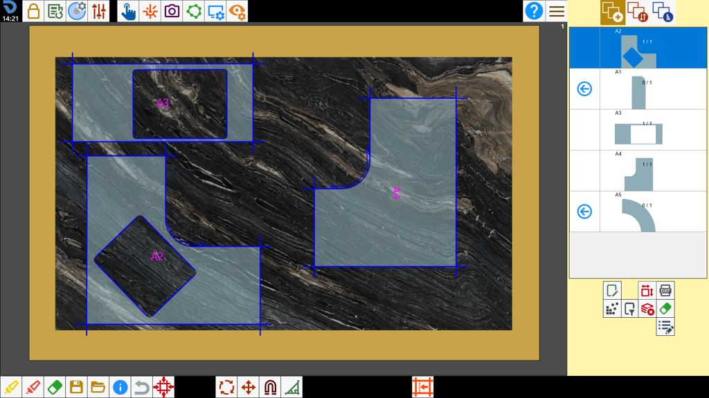
Será apresentada uma mensagem a solicitar confirmação para prosseguir com a criação de uma nova maquinação.

Após a confirmação, serão eliminados:
fotografia e perímetro da chapa;
todas as peças presentes na área de trabalho (incluindo as peças comerciais);
O Parametrix tem em conta as peças que foram programadas, atualizando a respetiva contagem na lista de peças.
Deixará de ser possível adicionar peças à área de trabalho quando estas tiverem atingido o número máximo.

O ecrã seguinte permite ao operador gerir as ferramentas da máquina.

Seleção do tipo de ferramenta
Cada tipo de ferramenta tem uma ferramenta selecionada, conforme visível na imagem de exemplo seguinte:

 | Disco |
 | Tools |
O fundo do tipo “Disco” aparece azul-claro porque é a categoria de ferramentas atualmente selecionada.
Basta clicar no retângulo do tipo de ferramenta pretendido para atualizar a lista de ferramentas abaixo com as ferramentas disponíveis para esse tipo.
Como consequência da alteração do tipo de ferramenta, será automaticamente selecionada conforme mostrado na imagem de exemplo anterior.
Lista de ferramentas presentes para o tipo de ferramenta selecionado
A lista de ferramentas apresentada como exemplo na imagem seguinte contém quatro discos: “Disco 400“, “Disco 625“, “Disco 2755“ e “Disco 325“.
O primeiro disco da lista é o que está atualmente montado na máquina, o que é indicado pelo fundo verde-claro e pela marca verde.
Na secção da direita são apresentados os parâmetros relativos à ferramenta selecionada.

Elementos da lista
 | Tipo de ferramenta |
 | Informações principais da ferramenta |
 | Forçar ferramenta |
Filtro de pesquisa
Na parte inferior da lista de ferramentas encontra-se uma barra de pesquisa composta pelos seguintes elementos:

Os elementos que compõem o filtro de pesquisa são descritos a seguir:
 | Botão de pesquisa por nome da ferramenta |
-20250307-155302.png) | Botão de pesquisa por diâmetro da ferramenta |
 | Botão para cancelar o filtro aplicado |
Barra inferior
A barra inferior da lista de ferramentas disponibiliza funcionalidades para adicionar e remover ferramentas da lista.

Adicionar ferramenta | |
 | Eliminar ferramenta |
 | Duplicar ferramenta |
Adicionar ferramenta
Através desta janela é efetuado o procedimento de criação de uma nova ferramenta. Os parâmetros necessários variam consoante o tipo de ferramenta que se pretende criar.
A imagem seguinte mostra a janela de criação de uma nova ferramenta para cada tipo disponível:
Disco | Fresa | Broca craniana |
|  |  |
 |  |  |
Lista de parâmetros da ferramenta selecionada
Nesta lista são apresentados todos os parâmetros relativos à ferramenta atualmente selecionada.
Cada alteração da seleção da ferramenta atualmente selecionada permitirá ao operador visualizar os valores atualizados da ferramenta pretendida e, se necessário, modificar cada valor.
A lista de parâmetros e os respetivos valores serão também atualizados quando for selecionado um tipo de ferramenta diferente (Disco / Tools), mostrando os valores da ferramenta selecionada para cada categoria.
Parâmetros do disco
A seguir são apresentados os parâmetros associados a um disco.
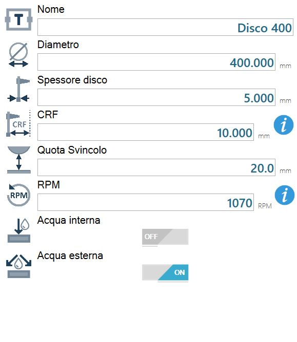
 | Nome |
 | Diâmetro |
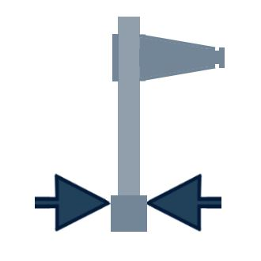 | Espessura do disco |
 | CRF - Centro de Rotação da Flange |
 | Cota de libertação |
 | RPM |
 | Água interna |
 | Água externa |
Velocidade de rotação do disco
À direita do parâmetro RPM encontra-se o seguinte botão:
 | Informações RPM |
Nesta janela é apresentada uma tabela com as conversões da velocidade de rotação para RPM em função do diâmetro do disco selecionado.
Os valores recomendados para o disco selecionado são destacados a verde.
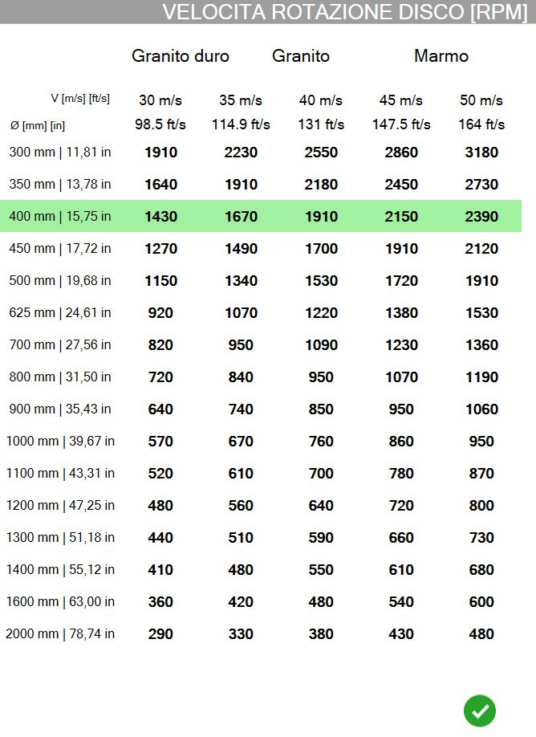
Parâmetros da fresa e da broca craniana
A seguir são apresentados parâmetros relativos a ferramentas como fresas e brocas cranianas.

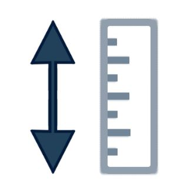 | Comprimento da ferramenta |
Medição da ferramenta
Se a máquina dispuser do dispositivo opcional para medição da ferramenta, é possível ativar o procedimento a partir deste painel.
Permite iniciar um ciclo através do qual é possível calcular o diâmetro, no caso de disco, ou o comprimento, no caso de fresas e brocas cranianas.
Botões
Na parte direita do painel encontra-se um dos seguintes botões.
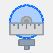 | Iniciar medição do disco |
 | Iniciar medição da ferramenta secundária |
O botão de medição do disco só está disponível na secção “Disco“ do painel.
O botão de medição da ferramenta secundária só está disponível na secção “Tools“ do painel.
Procedimento
Para medir o diâmetro do disco ou o comprimento da broca craniana/fresa atualmente montada na máquina, prima o botão correspondente na secção direita do painel.
No fim do ciclo, o programa atualiza automaticamente o dado correspondente à medida da ferramenta medida.

Outros Botões
No canto inferior esquerdo do ecrã encontra-se o seguinte botão:
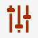 | Mudar para o painel “Parâmetros de maquinação da chapa“ |
Se a máquina dispuser do opcional Tool Plus, estará presente uma nova secção dedicada no painel da ferramenta.
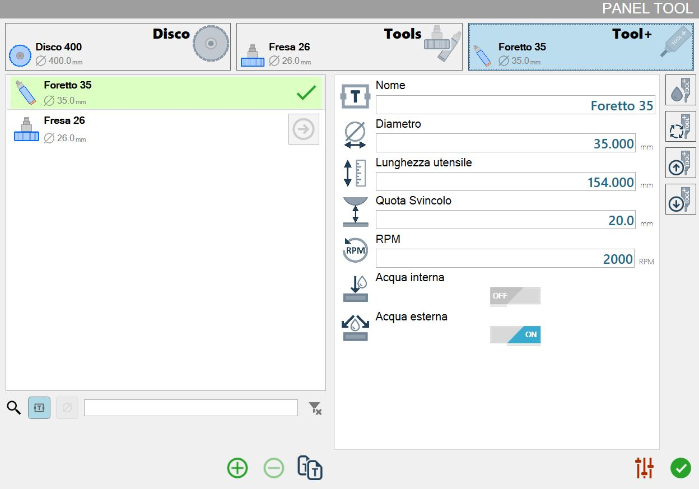
Botões
/0.01.png) | Ligar/Desligar água |
/0.02.png) | Ativar/Desativar rotação |
/0.03.png) | Elevação |
/0.04.png) | Descida |
É possível gerir as ferramentas de uma máquina com troca automática a partir deste painel.

Lista de ferramentas
Na secção da esquerda é possível ver a lista de todas as ferramentas disponíveis para a máquina.

Na parte superior é indicada a ferramenta atualmente montada na máquina.
Abaixo, uma lista mostra as ferramentas utilizáveis pela máquina. Junto de cada ferramenta estão presentes dois botões:
 | Forçar ferramenta montada |
 | Iniciar troca de ferramenta |
Parâmetros da ferramenta
Na secção da esquerda estão presentes os parâmetros associados à ferramenta selecionada.
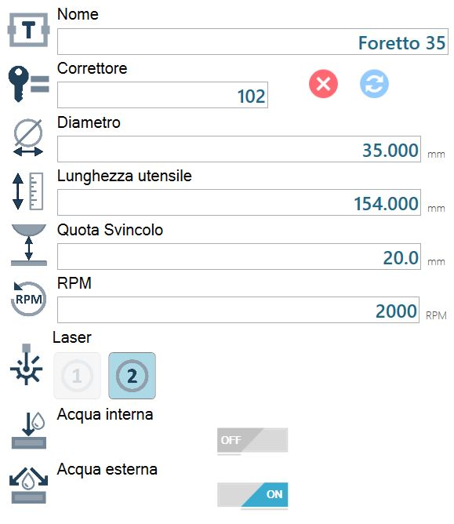
Corretor | |
 | Laser |
Corretor
Este campo indica a posição onde são guardadas as ferramentas não utilizadas no armazém da máquina.
 | Alterar corretor |
 | Eliminar corretor |
Procedimento automático de troca de ferramenta
Ao premir o botão associado a uma ferramenta, o operador poderá iniciar o procedimento automático de troca de ferramenta.
No início, é perguntado para que maquinações se pretende utilizar a nova ferramenta que está prestes a ser montada.

Este tipo de máquina permite montar dois discos na cabeça em vez de um. O painel da ferramenta permite gerir ambos.

Parâmetros
Cada ferramenta da secção “Disco” contém as informações relativas aos dois discos montados na máquina.
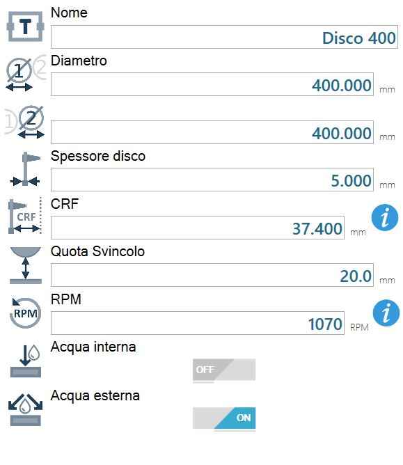
Em particular:
 | Diâmetro do primeiro disco |
Diâmetro do segundo disco |
Ao abrir o painel “Parâmetros da Chapa“, será apresentado o ecrã de parâmetros de maquinação que permite ao operador gerir os dados relativos à maquinação.
Os dados de maquinação podem ser definidos e modificados através do painel de parâmetros.

Gestão do material selecionado
Na parte superior do painel “parâmetros de maquinação da chapa” encontram-se alguns elementos que permitem gerir os materiais:

A seguir são descritos os elementos que compõem esta secção dos parâmetros de maquinação da chapa
 | Material Selecionado |
Botão criar novo material | |
Botão aceder ao painel Gestão de Materiais | |
 | Espessura do material selecionado |
Adicionar um novo material
Esta pequena janela gráfica permite compor o nome de um novo material:

Se for confirmada a criação do novo material, este será automaticamente selecionado.
Os parâmetros e a espessura do material serão atualizados em conformidade.
Abrir o painel de gestão de materiais
A partir deste painel é possível gerir os materiais:

 | Barra de pesquisa |
 | Remover filtro |
 | Remover material |
Duplicar material | |
 | Modificar material |
Seleção do tipo de maquinação
A seleção do tipo de maquinação regula o conteúdo da janela de gestão dos parâmetros.

Para cada tipo de maquinação, são visíveis na respetiva pré-visualização o modo de incremento escolhido, a velocidade de corte para a frente (de penetração / entrada no caso do tipo de maquinação Furo) e o diâmetro da ferramenta.
Tipo de passagens
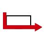 | Passagem Completa |
 | Passagem por Step / em espiral |
Tipos de maquinação
Linear

Passagem completa

Passagem por step

Descrição dos parâmetros de incrementos
 | Para a frente |
 | Para trás |
 | Última |
Descrição dos parâmetros de velocidade
 | Penetração |
 | Para a frente |
 | Para trás |
| Última |
 | Acelerar cortes |
 | Abrandar cortes |
No que diz respeito aos incrementos e às velocidades, os parâmetros “Para trás” e “Última” podem estar presentes ou não, ou pode estar presente apenas um dos dois.
Normalmente, estas opções são definidas no momento da instalação do programa e são decididas em função da maquinação do cliente.
É possível alterar estas opções, caso se prefira trabalhar de outra forma, contactando a Assistência Donatoni.
Arco

Passagem por step

Inclinado

Passagem completa

Passagem por step
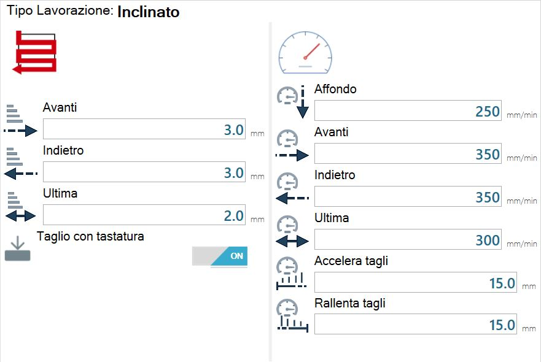
Descrição dos parâmetros de incrementos
 | Corte com medição (ativado / desativado) |
Fresagem

Passagem Completa

Passagem por step e passagem em espiral


Furo

Passagem completa
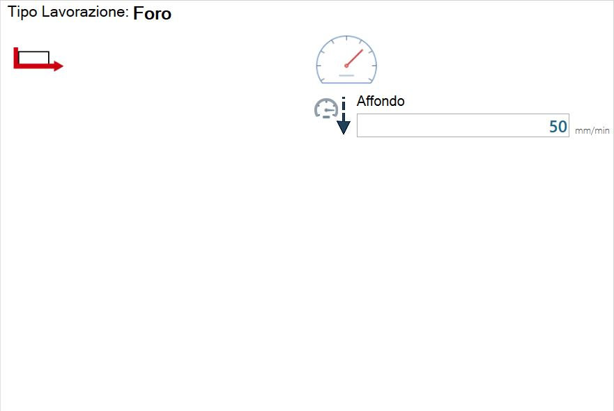
Passagem por step

Execução da maquinação com passagem por step:
A máquina aproximar-se-á do material à velocidade máxima até atingir a distância ao material especificada no parâmetro APROXIMAÇÃO.
O número de passos será calculado como:
Espessura do material dividida pela espessura dos steps
eventualmente arredondado por excesso
A máquina começará a mover-se à velocidade de maquinação.
Se o valor do parâmetro STEP ENTRADA estiver definido (diferente e superior a zero), a máquina trabalhará à velocidade definida no segundo campo ENTRADA até atingir a distância definida no campo STEP ENTRADA
A máquina executará os steps calculados no segundo ponto à velocidade Step
Após cada step (incluindo o primeiro), a máquina regressará à cota do material à velocidade máxima e, em seguida, voltará à velocidade máxima para uma curta distância antes do início do step seguinte.
Se o parâmetro STEP SAÍDA estiver definido (diferente e superior a zero), a máquina trabalhará à velocidade definida no segundo campo STEP até atingir a distância definida no primeiro campo SAÍDA
O restante step será executado à velocidade SAÍDA
Descrição dos parâmetros de Furo com passagem por step
 | Cota de aproximação |
 | Step |
 | Entrada |
 | Saída |
  | Pausa depois |
Alteração dos parâmetros de corte
É possível modificar os parâmetros anteriormente descritos para o disco, a fresa e a broca craniana, se o utilizador estiver autorizado a utilizá-los.

Para decidir de que ferramenta se pretende modificar os parâmetros, é necessário selecionar uma através do botão visível na parte direita do painel “Selecionar ferramenta“.
 | Alterar parâmetros de corte |
Ao premir este botão, será apresentada uma janela que conterá uma configuração de parâmetros guardada para cada material existente. Os resultados dependem também do tipo de maquinação selecionado.
Será aberta uma janela “Alteração dos Parâmetros de Corte“ semelhante à seguinte imagem de exemplo:

Na parte inferior esquerda do painel “Alteração dos Parâmetros de Corte“ existe uma barra de texto inicialmente vazia que permite aplicar um filtro de pesquisa.
O botão à direita da barra só é ativado quando existe texto na barra e, portanto, quando está aplicado um filtro de pesquisa. Ao premi-lo, o filtro é eliminado e a barra de texto é esvaziada.
Barra inferior
A barra inferior do painel Parâmetros da Chapa tem um aspeto semelhante a este:

Esta barra é constituída pelos seguintes elementos:
 | Pré-visualização do disco |
 | Pré-visualização da fresa/furo |
 | Painel da Ferramenta |
Este painel permite aceder a alguns comandos manuais da máquina.

Botões
 | 0_ - 90_ |
Estacionamento | |
 | Medir Chapa |
 | Ciclo CRF |
Ciclo de lavagem | |
 | Ligar / Desligar água interna |
 | Ligar / Desligar água |
Ciclo de medição da chapa
O ciclo de medição permite calcular a espessura da chapa e adquirir a cota da bancada utilizando a sonda específica montada na máquina.
Para o iniciar, ative o botão no painel dos comandos manuais e, em seguida, prima um ponto dentro da chapa na área de trabalho.
Na posição selecionada, será apresentado um símbolo que indica a posição em que a medição deve ser efetuada.

Quando a máquina terminar de executar o ciclo, será aberto um painel que mostra algumas medidas obtidas através da medição da chapa.

Estas informações incluem:
Espessura | Espessura da chapa medida. |
Cota da bancada | Cota da bancada de trabalho. |
Cota da chapa | Cota medida na face superior do material colocado na bancada de trabalho. |
É possível guardar os dados recolhidos pelo ciclo de medição utilizando os botões abaixo:
 | Definir espessura da chapa |
 | Definir cota da bancada |
 | Iniciar medição |
Ciclo de medição do CRF (Centro de Rotação da Flange)
O ciclo CRF permite medir a distância entre o fio interno do dente do disco atualmente montado na máquina e o eixo de rotação C.
Para o iniciar, ative o botão no painel dos comandos manuais e, em seguida, prima um ponto dentro da chapa na área de trabalho.
Na posição selecionada, será apresentado um símbolo que indica a posição em que devem ser executados os cortes com disco que permitem medir o CRF.
Durante a execução deste ciclo, são efetuados cortes no material.
Por conseguinte, recomenda-se ao operador que preste atenção à posição da chapa onde inicia o ciclo, para evitar danificá-la.
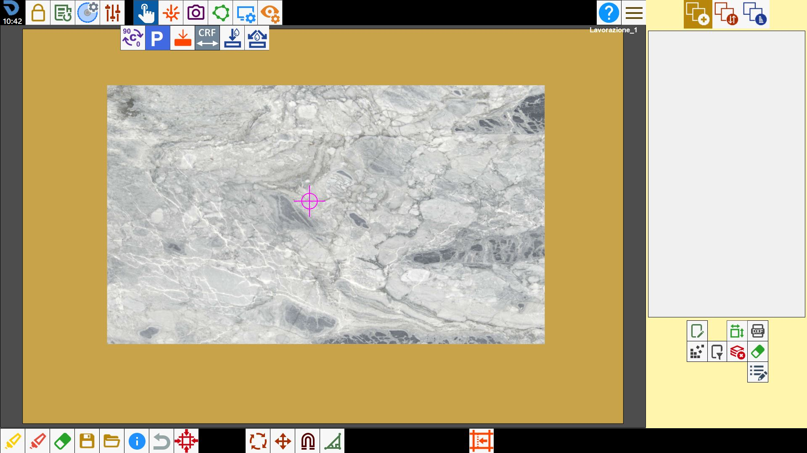
A máquina executará dois cortes paralelos com o eixo A a 0_: o primeiro com o eixo C igual a 0_ e o segundo com o eixo C igual a 180_.
No fim do procedimento, é solicitado ao operador que meça, utilizando uma fita métrica ou um paquímetro, a distância interna entre os dois cortes na chapa.
Esta medida deve ser introduzida no campo “A“ do painel que se abre no fim do ciclo.

As medidas efetuadas devem ser introduzidas no campo específico:
A | Distância interna entre os dois cortes executados durante o ciclo na chapa. |
CRF (A/2) | Medida do Centro de Rotação da Flange do disco. É calculada como metade da distância interna entre os dois cortes existentes na chapa. |
É possível guardar os dados recolhidos pelo ciclo de medição CRF utilizando o seguinte botão:
 | Definir medida CRF |
Este painel permite adicionar ou remover referências laser na área de trabalho.

Botões
 | Referência de laser de linha |
 | Desenhar laser em cruz |
 | Eliminar todos os desenhos |
 | Eliminar um único desenho |
Laser de linha
O laser de linha é uma ferramenta alinhada com o disco montado na máquina. É utilizado para recolher informações relacionadas com a posição e a orientação do disco na bancada.

Para adquirir a referência, leve a máquina ao ponto pretendido e prima o botão para detetar a direção do laser de linha e adicionar a referência à área de trabalho.
Utilizando várias referências, é possível reconhecer o perímetro e a posição da chapa ou de uma peça na bancada de trabalho.
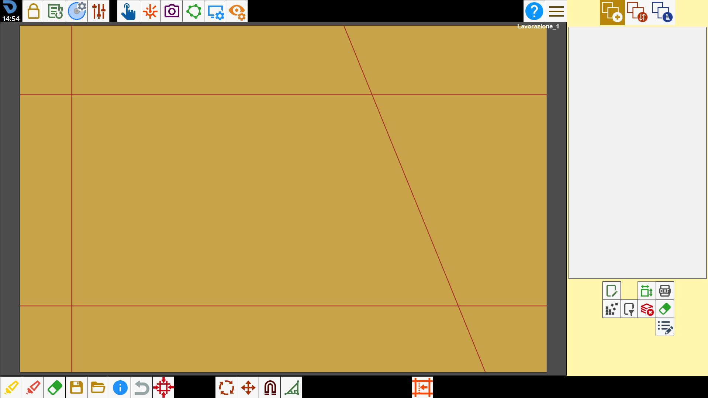
Laser em cruz
O laser em cruz é utilizado para recolher informações relacionadas com a posição do apontador laser na bancada.

Para adquirir a referência, leve a máquina ao ponto pretendido e prima o botão para detetar a posição do laser em cruz e adicionar a referência à área de trabalho.
Utilizando várias referências, é possível reconhecer o perímetro e a posição da chapa ou de uma peça na bancada de trabalho.

Esta função permite adicionar uma fotografia à área de trabalho.
Se o Parametrix estiver ligado a um dispositivo fotográfico, é tirada uma fotografia da chapa na bancada de trabalho.
Caso contrário, é solicitado que selecione uma fotografia entre os ficheiros do computador.

Tirar uma fotografia
Em geral, esta funcionalidade permite tirar uma fotografia da bancada de trabalho da máquina utilizando o dispositivo fotográfico incorporado.
Ao premir o botão, abre-se uma janela onde é solicitado que introduza a espessura da chapa que está prestes a ser captada.

A fotografia é tirada e, em seguida, abre-se o painel que permite ao operador definir o perímetro da chapa.
Selecionar uma fotografia dos ficheiros do computador
Este modo permite que computadores não ligados a um dispositivo fotográfico, normalmente instalados no escritório, insiram fotografias de ficheiros no programa.
Ao premir o botão, abre-se a janela do explorador de ficheiros, permitindo escolher um ficheiro a carregar.

O utilizador é então encaminhado para o painel de seleção do perímetro da chapa.
Seleção do perímetro
Depois de selecionar ou tirar a fotografia, será apresentado este ecrã, no qual o operador deve indicar um perímetro dentro do qual será possível posicionar as peças.

Depois de confirmado o perímetro, a fotografia da chapa será adicionada à área de trabalho do Parametrix.

Para funcionar, o programa deve conhecer o bordo da chapa em que irá trabalhar. Esta função permite traçar o perímetro.

Modo de criação do perímetro
O programa permite ao operador desenhar o perímetro utilizando um dos seguintes modos:
 | Modo retângulo |
 | Modo por pontos |
A qualquer momento durante a criação do perímetro, é possível alternar entre os modos.
Ao passar do modo “por pontos“ para o modo “retângulo“, o perímetro será convertido num retângulo e todos os vértices do polígono serão perdidos.
Será solicitada confirmação para prosseguir com esta operação.
Retângulo
Este modo permite criar perímetros de forma retangular.
Para alterar o tamanho e a posição do retângulo, é possível arrastar os círculos amarelos na área de trabalho ou modificar os valores indicados na barra abaixo.

Medidas | Dimensões do perímetro no eixo X e no eixo Y. |
Posição | Coordenadas do vértice inferior esquerdo do retângulo relativamente ao vértice inferior esquerdo da bancada. |
Por pontos
Este modo permite criar polígonos de forma poligonal arbitrária.
Para tal, o operador pode dispor os pontos que formam o perímetro nas posições pretendidas, conforme mostrado na figura abaixo.

Neste modo, é possível interagir com o perímetro utilizando os seguintes botões:
 | Fechar perímetro |
 | Remover último ponto |
Depois de fechado, o perímetro ficará azul e os respetivos vértices serão indicados por círculos amarelos.
Tanto durante a fase de criação como na presença de um perímetro fechado, será sempre possível deslocar os vértices na área de trabalho para melhorar a precisão.
Barra inferior
O operador pode interagir com um perímetro presente na área de trabalho utilizando os botões situados na secção inferior do ecrã.
 | Magnetizar no laser em cruz |
 | Deslocamento do perímetro |
Criar um novo perímetro
O programa permite criar mais do que um perímetro no qual dispor as peças para a maquinação.
Além disso, é possível definir zonas da chapa nas quais não é possível inserir qualquer peça.
 | Perímetro |
 | Área a evitar |
 | Eliminar perímetro |
Os perímetros criados são visíveis na lista no canto superior direito. Para modificar um perímetro, basta selecioná-lo na área de trabalho ou selecionar a entrada correspondente na lista.
O perímetro atualmente selecionado apresenta contornos azuis e vértices amarelos, enquanto os restantes podem ser distinguidos também pela cor: verde para os perímetros das chapas e laranja para as áreas a evitar.

A partir deste ecrã, é possível adicionar cortes de alívio de tensões à chapa.
 | Preparação da chapa |
Para concluir a criação do perímetro, é solicitado ao operador que introduza algumas informações relativas à maquinação que deve ser efetuada.
Espessura | O operador deve indicar a espessura da chapa presente na bancada de trabalho. |
Nome | Nome a atribuir à maquinação da chapa. |
Cliente | É indicado o nome do cliente para o qual é realizada a encomenda. É um campo opcional. |
Encomenda | É indicado um identificador para a encomenda. É um campo opcional. |
A espessura da chapa e o nome da maquinação são campos obrigatórios que devem ser preenchidos antes de confirmar o perímetro.
Pelo contrário, não é necessário preencher as informações relativas às propriedades adicionais abaixo.
Áreas a evitar
As áreas a evitar são zonas da chapa que o operador pretende tornar indisponíveis para o posicionamento das peças na chapa.
As razões podem ser a presença de ruturas no material, de veios pouco estéticos ou a necessidade de preservar determinadas partes da chapa.
São representadas como zonas azuis dentro da área de trabalho.

Quando se utiliza a funcionalidade Nesting, as peças são dispostas de modo a não ocupar nenhuma destas áreas.
A preparação da chapa é uma funcionalidade que permite adicionar à maquinação cortes de alívio de tensões. Estes cortes destinam-se a aparar a chapa ao longo dos bordos.
A funcionalidade pode ser ativada no painel de criação do perímetro.
No ecrã de exemplo seguinte está presente um esquema que representa os quatro cortes, um por lado, que podem ser inseridos.

Barra lateral
 | Preparação da chapa |
Só é possível preparar chapas com perímetro retangular. Não funciona no modo “por pontos“.
Também é possível preparar vários perímetros de forma diferente.
Execução da maquinação
Na área de trabalho, o programa verifica se o operador não posiciona peças fora da preparação da chapa.
Também é possível magnetizar as peças a estes cortes, conforme mostrado na figura.

Durante a execução do programa de corte, a máquina executará estas aparagens antes de qualquer outra operação. Imediatamente depois, será efetuada uma pausa de preparação, de modo a dar ao operador tempo para remover o material descartado da chapa.
Desta forma, as operações posteriores de movimentação da chapa através das ventosas poderão ser executadas sem o impedimento destas aparagens.
É possível visualizar estas operações também na lista do ecrã de gestão e otimização dos cortes.

Através desta funcionalidade, o Parametrix consegue obter automaticamente o perímetro de uma chapa fotografada.
/0.03.png)
Botões
/0.05.png) | Perímetro automático |
Como utilizar o perímetro automático
Para utilizar esta função, é necessário tirar uma fotografia de uma chapa na bancada de trabalho ou carregar uma imagem do computador.
O operador encontrar-se-á então no painel de gestão do perímetro.
/0.00.png)
Na secção da direita, prima o botão para calcular o perímetro automático.
No fim da operação, é possível modificar manualmente os vértices do perímetro obtido caso não sejam suficientemente precisos.
/0.04.png)
É disponibilizada ao operador a possibilidade de integrar o sistema fotográfico com diferentes formatos, por exemplo Mapascan.
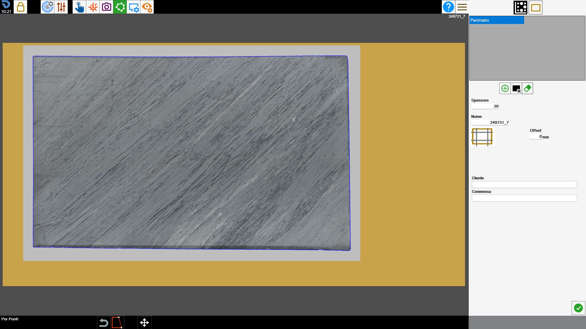
Execução
Além da imagem, são frequentemente fornecidos ficheiros adicionais que contêm informações úteis relativas à chapa, como espessura, perímetro e outros dados geométricos ou físicos relevantes.

Durante a abertura da fotografia, os dados são analisados para definir corretamente o perímetro, as áreas a evitar e a espessura:

O Parametrix consegue ler este ficheiro e importar a fotografia da chapa, o perímetro e a espessura da chapa.
Integração múltipla
Quando estão configuradas várias integrações, é possível selecionar dinamicamente qual utilizar no momento da execução.

Esta função abre um pequeno painel com ferramentas para redimensionar a área de trabalho.

Botões
 | Régua |
 | Zoom _ |
 | Zoom - |
Restaurar Zoom | |
Zoom por janela | |
 | Mover vista |
 | Mostrar / Ocultar cor de fundo |
Mostrar / Ocultar nome das peças | |
 | Mostrar / Ocultar ângulos retos |
Régua
Para utilizar esta função, o operador deverá indicar dois pontos na área de trabalho. Estes serão representados como duas cruzes amarelas.

Sob o botão da régua, aparecerá um pequeno painel que mostrará a distância entre os dois pontos.

Horizontal | Distância horizontal entre o primeiro e o segundo ponto. |
Vertical | Distância vertical entre o primeiro e o segundo ponto. |
Total | Distância total entre o primeiro e o segundo ponto. |
X | Posição horizontal do rato em tempo real. |
Y | Posição vertical do rato em tempo real. |
Esta função abre um pequeno painel com ferramentas de visualização.
Botões
 | Mostrar / Ocultar cortes |
 | Mostrar / Ocultar furos |
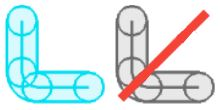 | Mostrar / Ocultar fresagens |
 | Mostrar / Ocultar rebaixos |
 | Mostrar / Ocultar setas |
 | Mostrar / Ocultar Dynamic Tags |
 | Destacar perímetro |
O Parametrix foi concebido para a maquinação de figuras geométricas planas e fechadas, que representam as peças.

Modo de criação das peças
Como é possível observar na barra de navegação superior,
a criação das peças é efetuada através de um dos seguintes modos:
 | Importação de ficheiro DXF |
Criação de retângulos | |
 | Criação de figuras paramétricas |
 | Importação de ficheiro CSV |
 | Histórico |
 | Favoritos |
 | Criação de peças comerciais |
Será fornecida uma descrição mais detalhada do funcionamento de cada modo no respetivo parágrafo deste capítulo.
A funcionalidade selecionada é destacada com uma cor verde-clara. Ao abrir o painel “Criar Peças“, o operador encontrará selecionado o modo “Criação de retângulos“.
Importar as peças para o Parametrix
Para concluir corretamente a criação de uma ou mais peças, é necessário utilizar o seguinte botão, disponível em cada secção do painel:
 | Importar peças |
O funcionamento da lista de peças, situada na parte direita do painel, é explicado no respetivo capítulo.
Na imagem seguinte, pode observar-se como, depois de premir o botão “Importar peças“, a lista de peças foi preenchida com os elementos que compunham o ficheiro DXF que se decidiu importar.

Lista das peças importadas
A lista de peças apresentada na parte direita do painel “Criar Peças“ está inicialmente vazia. É preenchida à medida que são criadas peças através das funcionalidades descritas anteriormente neste capítulo.
A seguir é apresentado um exemplo de lista de peças vazia (à esquerda) e um exemplo de lista preenchida (à direita):
 |
Propriedades avançadas das peças
Nas imagens de exemplo anteriores, é possível observar um único botão no canto superior direito da lista de peças a maquinar:
 | Mostrar informações avançadas da Peça |
|---|

Na parte inferior da janela Peça encontram-se dois botões, descritos a seguir:
Copiar | |
 | Colar |
Visualizar os detalhes da peça
Seguindo o exemplo da lista preenchida à direita apresentada no início do capítulo, destaca-se agora o comportamento do seguinte botão:
 | Mostrar detalhes da peça |
Depois de premir o botão, a peça na lista aparece conforme indicado a seguir:

Adicionar a peça selecionada aos favoritos
É possível inserir qualquer peça na secção específica de peças favoritas utilizando o seguinte botão:
 | Adicionar favorito |
Ao premir este botão, será apresentado o seguinte pop-up:

O preenchimento do campo de texto e a posterior confirmação permitirão ao operador inserir a peça selecionada na lista de peças favoritas, anteriormente descrita.

Localizar DXF de origem
É possível procurar a pasta do DXF de origem utilizando o seguinte botão:
 | Localizar Peça |
Ao premir este botão, se o Parametrix localizar corretamente o ficheiro DXF de origem, será aberta uma janela do Explorador de ficheiros semelhante à seguinte:

Nesta secção, é possível criar peças através da importação de ficheiros DXF.

Lista de ficheiros
Na parte esquerda da janela, existe uma lista que mostra todas as pastas e ficheiros DXF contidos no caminho atualmente selecionado.

O elemento no topo da lista,

permite regressar à pasta superior àquela em que se encontra atualmente.
Inicialmente, é apresentada a lista dos ficheiros DXF presentes na pasta de trabalho do PC. É possível alterar a pasta utilizando os botões específicos situados à direita da lista de ficheiros.
 | Memória USB |
 | Pasta de trabalho |
 | Explorar pastas |
Eliminar ficheiro |
Ordenar e filtrar os ficheiros apresentados
Os elementos situados abaixo da lista gerem a aplicação de filtros e a ordenação dos ficheiros apresentados.

Na parte superior da imagem encontra-se uma barra de pesquisa, através da qual é possível filtrar os ficheiros por nome, visualizando apenas os que contêm o texto introduzido.
Nesta secção do ecrã encontram-se também os seguintes botões:
 | Limpar filtro |
 | Ordenação por data |
 | Ordenação por nome |
A pesquisa por nome aplica-se exclusivamente aos ficheiros contidos na pasta e não a eventuais subpastas existentes.
Pelo contrário, a ordenação por nome e por data aplica-se a cada elemento da lista, embora as pastas sejam sempre apresentadas antes dos ficheiros.
Pré-visualização
Ao selecionar um ficheiro, no quadro ao centro do ecrã é apresentada uma pré-visualização do desenho, permitindo identificar imediatamente o conteúdo.

É possível interagir com a pré-visualização tanto arrastando o conteúdo como utilizando os botões à sua direita.
Aumentar zoom | |
 | Diminuir zoom |
 | Restaurar visualização |
Botões adicionais
Os seguintes botões permitem ainda efetuar ações adicionais.
 | Painel de detalhes |
Painel de detalhes
Se tiver sido selecionado um ficheiro, é possível aceder ao “Painel de Detalhes“ para visualizar as propriedades do DXF. Isto é possível através do seguinte botão situado à direita da pré-visualização:
Depois de aberto, será apresentado o seguinte painel, juntamente com a lista das peças que compõem o DXF selecionado:

Gestão da visibilidade do layout
Na parte superior deste painel são apresentados os layouts sob a forma de caixas de seleção que podem ser ativadas ou desativadas livremente:

O primeiro elemento desta lista de layouts permite ativar ou desativar a visualização de todos os layouts.
Painel lateral
Botões relativos à visibilidade e ao padding
Além dos botões já mostrados anteriormente relativos à alteração do nível de zoom e à respetiva reposição, estão presentes dois novos botões:

 | Destacar peça selecionada |
Mover vista |
Lista de polilinhas
No lado central direito do painel são apresentadas as peças que compõem o DXF escolhido, sob a forma de polilinhas.
Ao selecionar um dos valores presentes na lista, a respetiva peça visível na pré-visualização será destacada a amarelo.

Ao premir o botão junto de cada peça, será apresentada a lista das polilinhas que constituem a peça.
Será também possível destacar uma única polilinha do DXF simplesmente selecionando a respetiva linha na lista:

Botões inferiores
Estes botões estão situados na parte inferior da barra lateral.

 | Localizar polilinha aberta anterior |
Localizar polilinha aberta anterior |
No exemplo seguinte, foi aberto o Painel de Detalhes de um DXF que apresenta algumas peças constituídas por polilinhas abertas, indicadas a vermelho na lista:

É possível construir peças retangulares introduzindo as medidas de largura e altura e colocá-las na lista de peças a maquinar.
O programa permite também associar a cada peça uma marca (ou etiqueta) de identificação e definir o número de repetições de retângulos com dimensões iguais.

Descrição dos parâmetros
Para a criação de peças retangulares são necessários os seguintes dados:
Número de peças | |
 | Largura |
 | Altura |
 | Marca |
Botões adicionais
Os seguintes botões laterais permitem ainda efetuar ações adicionais.
 | Importação individual |
 | Dynamic Tag Top |
Para ativar a funcionalidade relativa a cada botão, é necessário premi-lo. Nesse caso, será destacado com uma cor verde-clara.
Nesta secção, é possível construir peças utilizando figuras paramétricas de forma predefinida. Para desenhar uma figura, basta introduzir os valores que a caracterizam.

Categorias de figuras paramétricas
Tomando como referência a imagem acima, na coluna da esquerda estão representadas as principais categorias de formas paramétricas.
 | Figuras retangulares |
 | Quadriláteros |
 | Figuras triangulares |
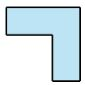 | Tampos de cozinha |
 | Figuras do tipo setorial |
 | Figuras elípticas |
 | Figuras poligonais |
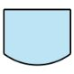 | Casas de banho |
 | Figuras em pedra ou tumulares |
 | Mesas |
 | Figuras especiais |
Pré-visualização e valores parametrizados
Consoante a seleção da categoria, na coluna imediatamente à direita abre-se a escolha da forma correta a utilizar.
Uma imagem, situada no centro do ecrã, fornecerá indicações detalhadas sobre as dimensões a introduzir. À direita da imagem de referência, é apresentada uma pré-visualização da figura que está a ser desenhada, que é modificada em tempo real após cada alteração dos valores que caracterizam a figura desenhada.
Tal como nos parágrafos anteriores, depois de concluída a introdução das cotas, é possível introduzir a marca (ou etiqueta) que é apresentada na peça quando esta é inserida na área de trabalho, o número de cópias da peça e decidir se deve ser efetuada a importação individual.
Na imagem seguinte é possível ver um exemplo de criação de um tampo de cozinha.

Criação de rebaixos internos
Para criar rebaixos internos, é necessário premir um dos retângulos internos da imagem central; será aberta a janela representada na imagem abaixo, onde será possível modificar livremente o rebaixo e depois inseri-lo na imagem original.

Definições adicionais
Parâmetros adicionais
Para a criação de peças retangulares são necessários os seguintes dados:
 | Número de peças |
 | Marca |
Botões adicionais
 | Importação individual |
  | Mirror |
 | Restaurar |
Barra para peças fora de esquadro
Algumas peças podem ser construídas utilizando ângulos fora de esquadro (ou seja, diferentes de 90 graus).
Para utilizar esta possibilidade, usa-se uma barra situada acima da imagem central, que contém todas as versões de modificação dessa imagem. Os parâmetros modificáveis são apresentados a verde.

Mirror
Ao premir os dois botões dedicados, é possível espelhar o resultado apresentado no ecrã, respetivamente ao longo do eixo vertical ou horizontal. Esta funcionalidade permite adaptar a visualização às necessidades operativas ou ao tipo de maquinação em curso.
Seguem-se alguns exemplos de espelhamento horizontal e vertical:
Apenas espelhamento Horizontal | Apenas espelhamento Vertical | Espelhamento Horizontal e Vertical |
 |  |  |
 |  |  |
Esta secção oferece ao operador a possibilidade de importar peças a partir de ficheiros no formato CSV.
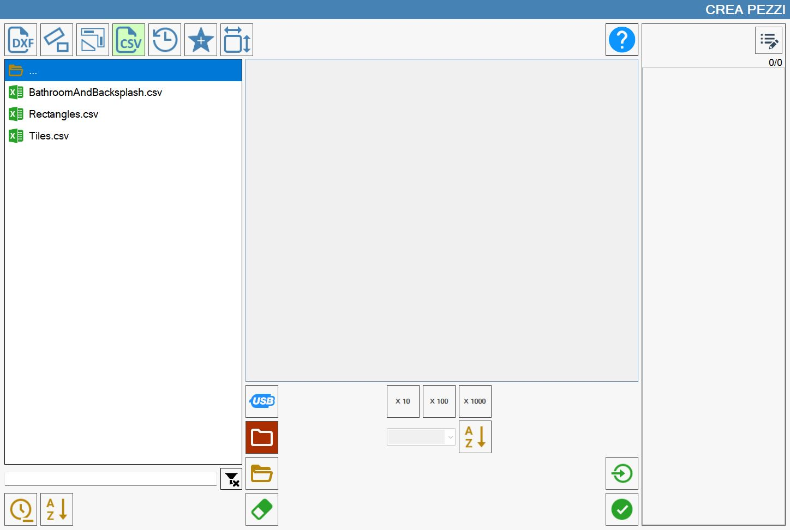
Pré-visualização
A lista à esquerda desta secção apresenta todos os ficheiros em formato CSV presentes no caminho atualmente selecionado.
Ao premir um elemento da lista de ficheiros CSV, será atualizada a pré-visualização que ocupa a parte central desta secção.
No exemplo seguinte é possível observar a atualização da pré-visualização após premir o primeiro elemento da lista:
/schermata_bagno_eng-20250321-092252.png)
Multiplicadores de dimensão
É possível multiplicar por 10, 100 ou 1000 a dimensão das peças presentes no ficheiro CSV selecionado.
A imagem seguinte apresenta os três multiplicadores disponíveis:
/pulsanti_moltiplicatore-20250320-154918.png)
A imagem seguinte atualiza o exemplo da imagem apresentada no capítulo “Pré-visualização”, em que os valores “Largura“, “altura” e “espessura“ sofrem uma alteração após premir o segundo botão de multiplicador de dimensão “X 100”:
/image-20250325-132949.png)
Neste exemplo, é ainda destacado como o botão “X 100“, depois de clicado, é atualizado alterando a sua cor de fundo para um tom verde-claro.
Ordenação
A funcionalidade de ordenação preenche a lista de ordenação com base nos campos presentes no ficheiro CSV selecionado e permite ao operador, se desejar, aplicar um filtro por ordem alfabética ou alfabética inversa com base num dos campos previstos no ficheiro selecionado.
/sezione_ordinamento_eng-20250320-155220.png)
Esta funcionalidade permite ao operador recuperar o histórico das peças criadas.
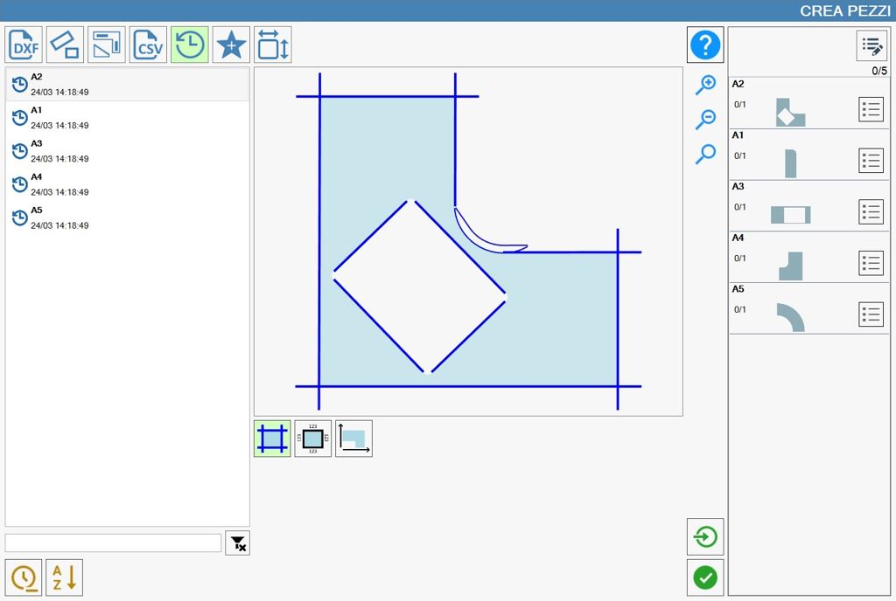
Tipos de vista das peças no histórico
Estão disponíveis três modos diferentes de visualização das peças presentes nesta secção:

 | Vista dos cortes |
 | Vista das cotas |
 | Vista da dimensão |
Nos exemplos seguintes foram importadas cinco peças (A1, A2, A3, A4 e A5) do DXF denominado “Kitchen_Curve“.
Independentemente da vista selecionada, será sempre possível visualizar todas as peças tanto na lista do histórico no lado esquerdo como na lista das peças atualmente importadas no lado direito.
Vista dos cortes
A vista dos cortes destaca todos os cortes, tanto perimetrais como internos da peça, ocultando outras informações, como o valor do respetivo comprimento.

Vista das cotas dos cortes
A vista das cotas dos cortes destaca o perímetro externo a preto e coloca, próximo do centro de cada corte no perímetro, o respetivo comprimento.

Vista da dimensão
A vista da dimensão não destaca nenhum corte; permite, em vez disso, observar as dimensões máximas da peça em termos de largura e comprimento.
Na imagem seguinte, é possível observar duas linhas pretas, cada uma com o valor máximo do comprimento e da largura da peça ao centro; contudo, é importante observar que apenas por coincidência os lados da peça A2 coincidem com as linhas pretas, pois os restantes cortes da peça não estão destacados e não apresentam qualquer informação.

Através do ecrã dos favoritos, é possível importar para o Parametrix peças que foram anteriormente guardadas como favoritas.

Adicionar uma peça aos favoritos
É possível inserir qualquer peça na secção de peças favoritas utilizando o seguinte botão:
 | Adicionar favorito |
Ao premir este botão, será apresentado o seguinte pop-up:

O preenchimento do campo de texto e a posterior confirmação permitirão ao operador inserir a peça selecionada na lista de peças favoritas, anteriormente descrita.

Tipos de vista das peças no histórico
Estão disponíveis três modos diferentes de visualização das peças presentes nesta secção:
 | Vista dos cortes |
 | Vista das cotas |
 | Vista da dimensão |
Nesta secção do painel “Criar Peças“ é possível criar peças comerciais. As características deste tipo de peças são as seguintes:
são criadas com um elevado número de cópias;
as dimensões de largura e altura podem ser modificadas mesmo quando uma peça é inserida na área de trabalho.

Parâmetros
 | Largura |
 | Altura |
 | Marca |
Importação de uma peça comercial
Para concluir corretamente a criação de uma peça comercial, é necessário utilizar o seguinte botão:
 | Importar peças comerciais |
O procedimento de criação também atualizará tanto a lista de peças comerciais à esquerda como a lista de peças a maquinar no lado direito. O exemplo seguinte mostra ambas as listas atualizadas:

Como se pode observar na coluna do lado esquerdo do ecrã, um ícone verde precede o nome da peça. Ao clicar nesse ícone, este ficará vermelho e a peça será removida da lista do lado direito.
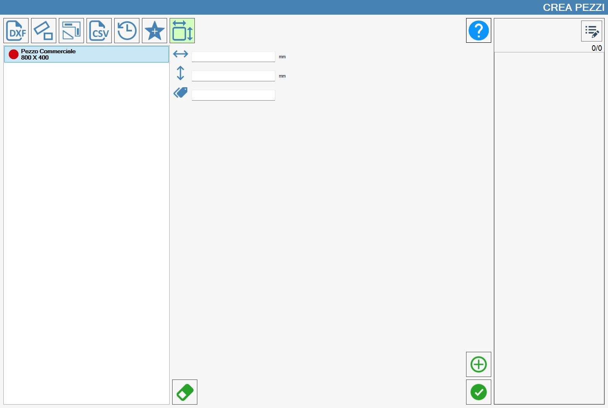
Quando uma ou mais peças são criadas e importadas para o Parametrix, o programa adiciona-as à lista de peças, situada na secção direita do ecrã principal.
Através da lista de peças, o operador pode:
Inserir as peças na área de trabalho;
Acompanhar as peças maquinadas e as que ainda estão por maquinar;
Aplicar algumas alterações às peças.
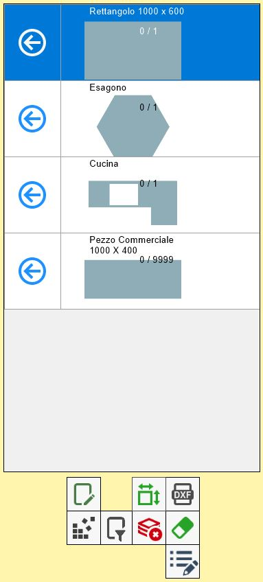
Elementos da lista
Cada linha da lista representa uma peça que foi importada para o Parametrix.

Como se pode observar nesta imagem, uma linha contém as seguintes informações relativas à peça:
Pré-visualização da forma | Representação simplificada da geometria da peça. |
Marca da peça | Etiqueta adicionada à peça para a identificar. |
Número de peças inseridas e total | Indica o número de peças dessa linha que foram inseridas na área de trabalho e o número total de peças desse tipo que podem ser inseridas. |
Inserir as peças na área de trabalho
Para inserir as peças na área de trabalho, utiliza-se o seguinte botão, presente em cada linha da lista:
 | Inserir peças na área de trabalho |
A peça selecionada foi posicionada na área de trabalho e o número de peças desta linha inseridas foi atualizado.
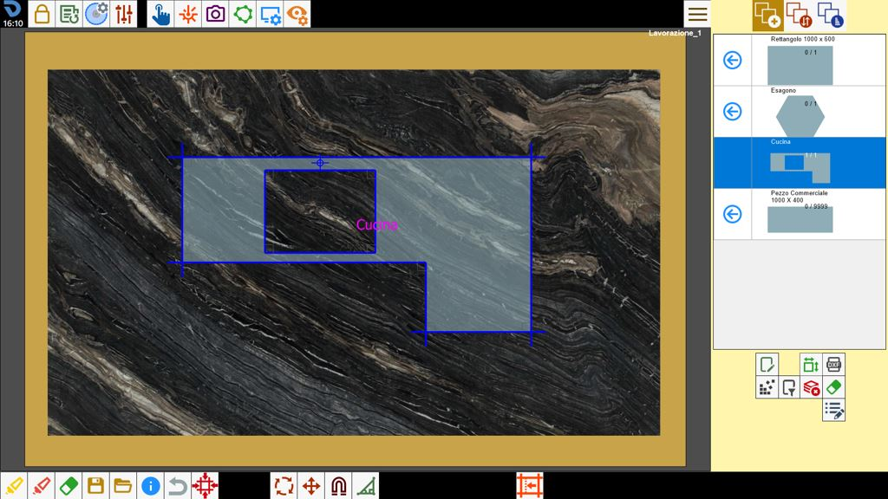
Depois de atingido o número máximo, o botão “Inserir peças“ dessa linha desaparece, pois todas as peças dessa linha foram processadas.
Operações sobre as peças da lista
Os botões abaixo da lista permitem gerir os elementos da lista. Em particular:
 | Limpar lista de peças |
 | Ocultar/Mostrar peças comerciais |
 | Eliminar peça |
 | Filtrar/Ordenar as peças |
 | Propriedades adicionais da peça |
Eliminar peça
Esta função permite eliminar individualmente as peças da lista. Depois de premir o botão, o programa solicitará ao utilizador que selecione a linha a eliminar, substituindo a seta de inserção das peças na área de trabalho por uma borracha.

Ao premir este botão, é eliminada a linha correspondente e, consequentemente, todas as peças que representa.
Esta função permite ao operador aplicar um filtro e/ou ordenar as peças da lista.
Ao premir o botão, será aberta a seguinte janela.
Lista de peças filtrada
Depois de definidos os critérios para filtrar ou ordenar as peças, estes podem ser aplicados utilizando o botão no canto superior direito.
 | Ativar/Desativar |
As peças que não correspondem aos critérios escolhidos para o filtro não serão apresentadas na lista de peças.
As peças presentes na área de trabalho que não satisfaçam os critérios definidos pelo filtro serão removidas.
No exemplo seguinte, pretende-se mostrar apenas as peças com altura superior a 600 mm e dispô-las por ordem alfabética crescente.
Antes de aplicar o filtro e a ordenação | Depois de aplicar o filtro e a ordenação |
 |  |
A função de filtro e ordenação não funciona com peças comerciais.
Os critérios de filtro e ordenação serão respeitados também pela funcionalidade de nesting.
Filtrar as peças
Na secção superior desta janela, o operador pode optar por adicionar um filtro com base em diferentes características das peças.

Como se pode observar, encontram-se os seguintes botões.
  | Modo de aplicação do filtro “Exclusão” |
 | Adicionar filtro |
 | Eliminar filtros |
Como criar um filtro
Para criar um filtro, selecione no primeiro menu pendente à esquerda a propriedade a utilizar entre as disponíveis.
Depois de decidir a característica discriminante, selecione um operador relacional no segundo menu.

Em seguida, introduza um valor adequado à propriedade na caixa adjacente para criar uma condição lógica.

Neste momento, através do botão à direita da caixa de texto, decide-se como o filtro que está a ser criado deve interagir com os outros filtros da lista, se existirem.
No modo “Exclusão“, uma peça deverá satisfazer
simultaneamente
a condição lógica que está prestes a ser criada e o resultado das anteriores.
No modo “Inclusão“, uma peça deverá satisfazer a condição que está prestes a ser criada
ou
o resultado das anteriores.
Para concluir a criação do filtro, utilize o último botão desta linha. O filtro será adicionado à lista abaixo.

Ordenar as peças
Na secção inferior da janela, o operador pode decidir ordenar as peças com base em determinadas propriedades.

Depois de selecionar uma entrada entre as disponíveis no menu pendente, será possível efetuar as seguintes ações:
 | Ordenação Crescente/Decrescente |
 | Eliminar ordenação |
Ordenação múltipla (Opcional)
Esta funcionalidade permite ordenar as peças da lista utilizando mais do que um critério.

Neste modo, é possível adicionar critérios de ordenação utilizando os seguintes botões:
Adicionar critério de ordenação | |
Alterar posição |
Os critérios contidos nesta lista são respeitados de cima para baixo.
Isto significa que as peças são ordenadas segundo o primeiro critério. Se duas ou mais peças tiverem o mesmo valor para a propriedade ligada ao primeiro critério, serão ordenadas segundo o critério seguinte. E assim sucessivamente para cada critério da lista.
Na imagem seguinte é mostrado um exemplo de ordenação múltipla.

Esta função permite modificar as propriedades adicionais da peça. São informações relativas à peça que podem ser visualizadas em diferentes partes do programa e que são também transpostas para o ficheiro ISO gerado para a máquina.
Ao premir o botão e, em seguida, a linha pretendida da lista de peças, abre-se a seguinte janela.

Configuração das propriedades
Na parte central do painel são listadas as propriedades adicionais que podem ser atribuídas a uma peça.
Os campos apresentados nesta janela podem ser personalizados com a ajuda de um técnico Donatoni.
Botões
Na parte inferior da janela estão presentes os dois botões descritos a seguir:
 | Copiar |
 | Colar |
Ao confirmar, estas informações serão associadas a todas as peças associadas à linha da lista que foi selecionada.
Este painel permite ao operador aplicar diferentes tipos de maquinação a uma peça designada.
Ao ser aberto, é apresentado o seguinte ecrã:

Algumas das funções descritas nesta secção estão também presentes na página principal do Parametrix, mas com uma diferença.
Se uma peça ou um corte for modificado através do painel ‘Modificar Peça’, todas as peças da linha selecionada serão modificadas em conformidade com as mesmas maquinações.
Pelo contrário, se a maquinação for definida a partir da área de trabalho, apenas a peça selecionada será modificada.
Tipos de maquinação
Através do painel “Modificar Peça“ é possível aplicar uma ou mais das seguintes maquinações, que serão descritas individualmente a seguir. Em particular, o Parametrix permite:
 | Inclinar |  | Goteira |
 | Adicionar | Eliminar | |
Offset |  | Furo | |
 | Fresagem |  | Rebaixo |
 | Corte Inferior - (Opcional) |  | Espelho |
 | Lancil |  | Superfície - (Opcional) |
| Aplainamento - (Opcional) |  | Canaleta - (Opcional) |
Concordância |  | Dividir | |
 | Rebaixo interno |  | Flutes |
 | Dimensão Máxima - (Opcional) | Espelho |
Lista de cortes
Os cortes da peça serão apresentados na secção inferior esquerda deste painel.
Através de uma divisão específica, é indicado se um corte pertence ao perímetro externo ou a um dos perímetros internos. Graças a esta classificação, é possível mostrar/ocultar a lista dos cortes pertencentes a um polígono premindo o ícone da secção correspondente.

Como se pode observar na imagem, em cada linha são apresentadas algumas informações relativas ao corte que representa. Em particular:
 | Gerir maquinação |
 | Informações do corte
|
 | Informações da maquinação
|
Estas informações variam consoante o tipo de corte que descrevem. Nem sempre são apresentadas todas as informações.
Por exemplo, para os furos é possível visualizar apenas a penetração no material.
Pré-visualização
A parte principal da funcionalidade "Modificar Peça" disponibiliza ao operador uma pré-visualização completa da peça selecionada, mostrando todas as maquinações atualmente aplicadas.

É possível interagir com a peça apresentada simplesmente movendo a pré-visualização ou utilizando os botões para alterar o zoom que se encontram à sua direita.
Além disso, nesta secção estão presentes outras funcionalidades que serão descritas a seguir.
 | Marca |
Número de peças | |
 | Adicionar favorito |
Seleção dos cortes
É possível selecionar um corte diretamente na pré-visualização, observando a mudança da sua cor para amarelo como confirmação da seleção, ou selecionar a linha correspondente na lista de cortes disponível no menu inferior esquerdo.
Ao clicar no indicador verde à esquerda de cada elemento da lista, será possível desativar o respetivo corte.
Neste caso, o indicador ficará vermelho e a pré-visualização da peça será atualizada, com a cor do corte desativado a mudar para cinzento.
No exemplo seguinte foram desativados os dois primeiros cortes do polígono externo da peça:
Barra inferior
Nesta barra são disponibilizadas algumas funcionalidades que simplificam a utilização das maquinações de Modificar Peça:
 | Cortes |
 | Lados |
 | Histórico |
 | Anular |
 | Modificar vista |
Histórico
Permite visualizar todas as alterações aplicadas à peça atual e, se necessário, repor a peça atual num estado anterior.
Se tiverem sido aplicadas alterações à peça atual, estas serão apresentadas na lista à esquerda:

No menu à esquerda são apresentados os estados de maquinação da peça.
 | Estado da maquinação
|
O estado da peça atual sem alterações chama-se "Default".
Ao selecionar uma entrada no menu à esquerda, é apresentada a pré-visualização correspondente ao momento de aplicação da maquinação.

Ao premir o botão de confirmação, a peça será reposta no estado selecionado. Desta forma, as alterações posteriores à selecionada são removidas.
Na parte inferior do painel são apresentados três botões utilitários para visualizar a peça na pré-visualização:
 | Visualizar cortes |
 | Visualizar medidas |
 | Visualizar ângulo |
Modificar Vista
Este modo disponibiliza ao operador alguns botões visíveis apenas quando a “modificação da vista“ está ativada.
Cada um dos seguintes botões ativa ou desativa um dos seguintes elementos da peça:
 | Cortes |
Furos | |
 | Fresagens |
 | Rebaixos |
 | Setas nos cortes |
 | Nome da peça |
 | Dynamic Tags |
 | Destacar Perímetro |
A função ‘Inclinação’ define uma maquinação com o eixo A diferente de 0.
A interface para o tipo de maquinação “Corte Inclinado“ é semelhante à imagem seguinte:

Modo
 | Direção do esquadro _ |
 | Direção do esquadro - |
Parâmetros
Graus | Representa o ângulo formado entre a direção da ferramenta montada e a superfície do material a maquinar. |
Execução da maquinação
É possível aplicar a maquinação premindo o botão à esquerda do corte adequado na lista de polígonos.
Um ícone vermelho com um 'X' indica que a maquinação não pode ser aplicada ao corte pretendido.
Depois de selecionar a direção do esquadro, introduza o valor pretendido ao lado e selecione o corte no qual definir o corte inclinado.
A aplicação da maquinação fará com que o corte inclinado seja apresentado com uma cor diferente.
Consoante a seleção do esquadro, é possível obter dois resultados distintos:
Direção do esquadro: Positiva
Na imagem de exemplo seguinte foi aplicada a maquinação de corte inclinado (45.0_), com direção positiva do esquadro, em todos os lados exceto no arco interno, uma vez que não é possível inclinar a ferramenta para o interior do perímetro.

Direção do esquadro: Negativa
Na imagem de exemplo apresentada, as maquinações de corte inclinado (45.0_) com direção negativa do esquadro foram aplicadas aos cortes da peça de forma inversa à configuração ilustrada no parágrafo anterior.

Esta função permite adicionar um corte com características diferentes das de um corte normal.
A interface que se abre é semelhante à imagem seguinte:

Parâmetros
É possível definir a largura de corte (deve ser igual ou superior à espessura do disco).
Distância da borda | A distância entre o corte selecionado e a maquinação da goteira. |
Espessura de corte | É a medida da largura da maquinação. É possível criar uma goteira com uma largura superior à espessura do disco. |
Profundidade de corte | É a profundidade de penetração no material. |
Distância inicial | A distância para o interior com que a maquinação é criada relativamente ao início do corte. |
Distância final | A distância para o interior com que a maquinação é criada relativamente ao fim do corte. |
A distância inicial e a distância final podem ser ativadas ou desativadas com os botões à direita do valor.
Quando estão desativadas, o Parametrix não as considera; quando estão ativadas, o programa calcula o deslocamento.
Distância Inicial e Distância Final
Estes parâmetros podem ser ativados ou desativados com os botões à direita do valor. Quando estão a cinzento (desativados), o Parametrix não os considera; quando estão a verde (ativados - como na figura), o programa calcula o deslocamento.

Execução da maquinação
É possível aplicar a maquinação premindo o botão à esquerda do corte adequado na lista de polígonos.
Um ícone vermelho com um 'X' indica que a maquinação não pode ser aplicada ao corte pretendido.
Com base nos parâmetros de maquinação definidos, é inserida uma goteira paralelamente ao corte da peça selecionada.

Na imagem seguinte é ilustrada uma maquinação do tipo goteira, realizada com os mesmos parâmetros do exemplo anterior.

Em ambos os exemplos, a maquinação foi aplicada ao corte inferior.
Além disso, foi adicionada à lista de 'Maquinações adicionais', situada na parte inferior esquerda do painel 'Modificar Peça'.
Através desta função é possível adicionar um corte paralelo a um corte já existente à distância pretendida.
É possível aplicar esta maquinação tanto a cortes lineares como a arcos.

Parâmetros
Para adicionar um corte, é necessário definir o seguinte parâmetro:
Distância | Distância do corte selecionado à qual deve ser adicionado o corte paralelo. |
Execução da maquinação
É possível aplicar a maquinação premindo o botão à esquerda do corte adequado na lista de polígonos.
Um ícone vermelho com um 'X' indica que a maquinação não pode ser aplicada ao corte pretendido.
Depois de definir o parâmetro distância, selecione o corte relativamente ao qual deve ser criado o novo corte.
A direção em que o novo corte é adicionado é calculada de forma a não danificar a peça: para o exterior se for selecionado um elemento do polígono exterior, ou para o interior de um polígono interior.
Se o valor da distância for negativo, o corte adicionado é calculado na direção de deslocamento oposta à prevista.
Na imagem seguinte é ilustrado o resultado da adição de dois cortes, efetuada selecionando as duas linhas que definem o recuo da bancada de cozinha.
Como mostrado, o novo corte paralelo é inserido na secção Maquinações Adicionadas e replica as características do corte selecionado, como a direção e o tipo de maquinação.
Botão para adicionar um corte nos cantos côncavos
 | Cortes côncavos |
|---|

A função ‘Eliminar’ permite eliminar um ou mais cortes da figura.
A interface desta função é semelhante à imagem seguinte:

Execução da maquinação
É possível aplicar a maquinação premindo o botão à esquerda do corte adequado na lista de polígonos.
Um ícone vermelho com um 'X' indica que a maquinação não pode ser aplicada ao corte pretendido.
Depois de eliminar um dos cortes, serão visíveis as seguintes alterações:

Quando todos os cortes são removidos da lista de maquinações adicionais, a própria lista é automaticamente eliminada.
Ao eliminar um corte do polígono, o resultado será semelhante ao mostrado na imagem seguinte:
Esta função permite alargar a peça deslocando-a paralelamente ao corte selecionado.
Na imagem seguinte é ilustrada a interface da função, utilizando uma peça de exemplo para fins demonstrativos.

Parâmetros
Offset | Permite alargar a peça deslocando-a paralelamente ao corte selecionado. |
Execução da maquinação
É possível aplicar a maquinação premindo o botão à esquerda do corte adequado na lista de polígonos.
Um ícone vermelho com um 'X' indica que a maquinação não pode ser aplicada ao corte pretendido.
A imagem abaixo mostra a peça depois de adicionar um offset, tomando como referência o corte lateral esquerdo do polígono interior.

Depois de executada, esta maquinação não adiciona nem remove cortes da lista; limita-se a atualizar os parâmetros dos cortes envolvidos com base nas alterações efetuadas.
Nesta página é possível executar um único furo numa posição específica ou uma série de furos a uma distância definida.

Tipos de maquinação
Para utilizar esta maquinação, deve primeiro escolher um dos dois modos disponíveis, selecionando o botão correspondente:
Os modos 'Furo no material' e 'Remoção de resíduo do disco' são mutuamente exclusivos: a ativação de um desativa automaticamente o outro.
 | Furo no material |
 | Remoção de resíduo do disco |
Furo no material
Ao selecionar este modo de maquinação, o vértice atualmente selecionado será realçado a laranja e, a partir dele, será projetada a pré-visualização do furo a adicionar, também apresentada a laranja e gerada com base nos parâmetros definidos.

Parâmetros
Penetração | Indica a profundidade que a maquinação deve atingir. |
Distância do eixo X | Distância no eixo X a partir do ponto inicial do corte selecionado, na qual o furo será criado. |
Distância do eixo Y | Distância no eixo Y a partir do ponto inicial do corte selecionado, na qual o furo será criado. |
Relativamente ao ponto selecionado, considera-se positiva a parte à direita do círculo (para X) e a parte acima do círculo (para Y), conforme mostrado na figura.

Execução de Furo no material
É possível aplicar a maquinação premindo o botão à esquerda do corte adequado na lista de polígonos.
Um ícone vermelho com um 'X' indica que a maquinação não pode ser aplicada ao corte pretendido.
Depois de selecionar um vértice e definir os parâmetros de distância e penetração , é possível confirmar a maquinação premindo o botão verde OK.
A cada furo introduzido com sucesso no material corresponde a atualização da pré-visualização e a inserção automática na secção 'Maquinações adicionais' à esquerda:

Ao contrário da Remoção de resíduo do disco, também é possível selecionar os pontos centrais dos arcos, realçados na pré-visualização juntamente com todos os outros pontos válidos como referência para a inserção dos furos no material.
Remoção de resíduo do disco
Ao ativar este modo, o vértice selecionado torna-se o ponto de origem de uma pré-visualização laranja composta por vários furos, cujo tamanho depende da broca craniana montada e cuja quantidade é determinada pelo parâmetro Distância entre furos.

Parâmetros de Remoção de resíduo do disco
Penetração | Indica a profundidade que a maquinação deve atingir. |
Distância dos furos automáticos | Determina a distância entre os pontos de origem dos furos. |
Execução de Remoção de resíduo do disco
É possível aplicar a maquinação premindo o botão à esquerda do corte adequado na lista de polígonos.
Um ícone vermelho com um 'X' indica que a maquinação não pode ser aplicada ao corte pretendido.
O modo Remoção de resíduo do disco pode ser utilizado entre dois cortes consecutivos, independentemente de ambos serem linhas, ambos serem curvas, ou um de cada tipo.

O furo é adicionado à lista do polígono interior e identifica a maquinação de remoção do resíduo do disco.
Segue-se um exemplo de Remoção de resíduo do disco aplicada a dois lados adjacentes no polígono interior:

Botões disponíveis no modo Remoção de resíduo do disco
 | Furos côncavos |
|---|---|
 | Número de furos |
A função ‘Fresagem’ permite criar uma fresagem na peça, no lado, na borda ou em todo o perímetro.
A interface desta função é semelhante à imagem seguinte:

Parâmetros
Vértice | Remove o material que o disco não consegue eliminar sem danificar a peça. Serve apenas para o acabamento de alguns pontos da peça. |
Lado | A ferramenta de fresagem é utilizada para cortar um lado da peça. Não trabalha em conjunto com o corte por disco, mas substitui-o completamente. |
Perímetro | Prevê a utilização da ferramenta de fresagem em vez da ferramenta de disco para executar o corte em todo um polígono da peça. Substitui o disco como no modo Lado. |
Em qualquer modo, a espessura do corte corresponde ao diâmetro da ferramenta de fresagem montada. A alteração deste elemento modifica automaticamente os cortes, atualizando-os com a nova medida.
No modo Vértice, a alteração da espessura do material ou do diâmetro do disco provoca um alongamento ou encurtamento do corte, de modo a adaptá-lo às novas medidas selecionadas.
Se a fresa for demasiado grande para cortar o lado selecionado, será apresentada uma mensagem de erro no ecrã.
Espessura | É apresentada a espessura da chapa atualmente definida no Parametrix, para ajudar o operador a aplicar a maquinação. |
 | Penetração |
 | Fresagem em cantos internos |
Execução da maquinação
É possível aplicar a maquinação premindo o botão à esquerda do corte adequado na lista de polígonos.
Um ícone vermelho com um 'X' indica que a maquinação não pode ser aplicada ao corte pretendido.
As consequências da aplicação de uma fresagem variam consoante o modo selecionado e apresentam algumas diferenças, descritas nos parágrafos seguintes.
A fresagem começa no ponto de entrada indicado na figura, identificável pelo círculo preenchido colorido posicionado na origem.
Cada fresagem aplicada a uma peça é inserida na lista de cortes associada a um polígono e representada graficamente a azul-claro.
No modo Vértice, a fresagem é alinhada com o vértice selecionado.
Nos modos Lado e Perímetro, são substituídos, respetivamente, um ou todos os cortes do polígono.
Execução num vértice
A fresagem é aplicada ao vértice mais próximo do ponto selecionado de um corte na pré-visualização.
A aplicação ocorrerá entre dois cortes consecutivos.
Na imagem de exemplo seguinte são mostradas duas maquinações de fresagem num vértice: a primeira num vértice superior esquerdo do polígono interior; a segunda num vértice do polígono exterior.

Execução num lado
Ao selecionar qualquer ponto de um corte na pré-visualização, a fresagem será aplicada ao longo de todo o lado correspondente.
Na imagem seguinte são mostradas duas maquinações de fresagem num lado: a primeira no lado esquerdo do polígono interior; a segunda num lado inferior do polígono exterior.

Execução no perímetro
Independentemente do ponto ou do corte selecionado, a fresagem será executada ao longo de todo o perímetro do polígono selecionado.

A função ‘Rebaixo’ permite adicionar um perfil à borda superior da peça ou da bancada de cozinha.
É utilizada principalmente para rebaixar numa determinada quantidade os recortes internos das bancadas de cozinha, de modo a permitir a instalação do lava-loiça.
A ferramenta utilizada para executar esta maquinação é a fresa.
A interface desta função é semelhante à imagem seguinte:

Parâmetros
Penetração | A profundidade com que o corte deve ser executado. |
Distância | Permite especificar a distância pretendida relativamente ao lado da peça. São permitidos valores positivos, negativos e iguais a zero.
|
Execução da maquinação
É possível aplicar a maquinação premindo o botão à esquerda do corte adequado na lista de polígonos.
Um ícone vermelho com um 'X' indica que a maquinação não pode ser aplicada ao corte pretendido.
Será aplicado um rebaixo a todo o polígono de um corte selecionado, independentemente do ponto onde este foi selecionado.
Segue-se um exemplo de rebaixo com valor positivo do parâmetro distância:

Esta funcionalidade permite ao operador adicionar um corte por baixo de um corte selecionado, na peça selecionada.
A interface desta função é semelhante à imagem seguinte:
/2-20250630-123653.png)
Parâmetros
Distância da borda | A distância entre o corte selecionado e a maquinação de corte inferior. |
Profundidade de corte | É a profundidade de penetração no material. |
Distância inicial | A distância para o interior com que a maquinação é criada relativamente ao início do corte. |
Distância final | A distância para o interior com que a maquinação é criada relativamente ao fim do corte. |
A distância inicial e a distância final podem ser ativadas ou desativadas com os botões à direita do valor.
Quando estão desativadas, o Parametrix não as considera; quando estão ativadas, o programa calcula o deslocamento.
Distância Inicial e Distância Final
Estes parâmetros podem ser ativados ou desativados com os botões à direita do valor. Quando estão a cinzento (desativados), o Parametrix não os considera; quando estão a verde (ativados - como na figura), o programa calcula o deslocamento.
/spiegazione_distanze_e_direzione_b-20250623-072340.png)
Execução da maquinação
É possível aplicar a maquinação premindo o botão à esquerda do corte adequado na lista de polígonos.
Um ícone vermelho com um 'X' indica que a maquinação não pode ser aplicada ao corte pretendido.
Com base nos parâmetros de maquinação definidos, é inserido um corte inferior paralelamente ao corte da peça selecionada.
/3-20250630-123927.png)
Na imagem seguinte é ilustrada uma maquinação do tipo goteira, realizada com os mesmos parâmetros do exemplo anterior.
/4-20250630-123848.png)
Em ambos os exemplos, a maquinação foi aplicada ao corte retilíneo inferior.
Além disso, foi adicionada à lista de 'Maquinações adicionais', situada na parte inferior esquerda do painel 'Modificar Peça'.
Esta função permite criar uma peça retangular a partir do lado de um objeto, de modo a obter um alçado.

Tipos de maquinação
Para utilizar esta maquinação, deve primeiro escolher um dos dois modos disponíveis, selecionando o botão correspondente:
 | Modo Revestimento |
Modo Alçado |
Parâmetros
Altura | Altura do alçado que será inserido durante a execução da maquinação. |
Inclinar lados da peça | Se ativado, insere automaticamente cortes inclinados caso existam cortes que colidiriam. |
Parâmetro adicional do modo Alçado
Graus | Este parâmetro só está ativo quando o modo Revestimento está selecionado. |
Execução da maquinação
É possível aplicar a maquinação premindo o botão à esquerda do corte adequado na lista de polígonos.
Um ícone vermelho com um 'X' indica que a maquinação não pode ser aplicada ao corte pretendido.
Ao clicar diretamente no corte na pré-visualização, ou no ícone à esquerda do corte na respetiva lista do lado esquerdo quando possível, será executada a maquinação selecionada.
A cada alçado ou união aplicado com sucesso ao material corresponde a atualização da pré-visualização e da lista de cortes à esquerda.
Cada peça criada com esta funcionalidade será adicionada à lista de peças do Parametrix.
Além disso, as novas peças introduzidas serão adicionadas a uma lista situada imediatamente acima da pré-visualização no painel ‘Modificar Peça’;

A partir desta lista é possível selecionar a peça do bloco pretendido para visualizar a respetiva pré-visualização e os cortes correspondentes na lista de cortes.
Execução de Revestimento
Mostra-se agora a aplicação de dois revestimentos quando o parâmetro “Inclinar lados da peça“ está ativado ou desativado.
Primeiro é aplicado um revestimento com 1000 mm de altura no lado inferior do retângulo e, em seguida, um segundo revestimento no lado direito do mesmo.
Inclinar lados da peça desativado
Não aparecem lados inclinados no resultado obtido e os cortes da peça original não são alterados na lista de cortes:
Inclinar lados da peça ativado
Em caso de alinhamento dos vértices das novas peças, ou seja, Pezzo_1 e Pezzo_2, os lados com o vértice em comum que não sejam adjacentes à peça original serão substituídos por cortes inclinados:

Execução de Alçado
Mostra-se agora a aplicação de dois alçados quando o parâmetro “Inclinar lados da peça“ está ativado ou desativado.
Primeiro é aplicado um alçado com 50 mm de altura no lado inferior do retângulo e, em seguida, um segundo alçado no lado direito do mesmo.
Neste modo, a peça original (Pezzo) e cada eventual peça gerada (Pezzo_1 e Pezzo_2) terão automaticamente cortes inclinados aplicados em todos os lados que sejam adjacentes entre si.
O ângulo de inclinação é determinado pelo parâmetro graus.
Inclinar lados da peça desativado
Neste caso, os lados adjacentes entre a peça original e as novas peças criadas são automaticamente substituídos por cortes inclinados.
A inclinação do corte depende do parâmetro Graus definido.
Inclinar lados da peça ativado
Tal como no caso anterior, são inseridos cortes inclinados nos cortes adjacentes às várias peças e a inclinação depende do valor do parâmetro Graus.
Além disso, ao ativar o parâmetro “Inclinar lados da peça”, tal como no caso dos revestimentos, se as novas peças apresentarem um alinhamento dos vértices, os lados com vértice em comum, não adjacentes à peça original, são automaticamente substituídos por cortes inclinados.

Divisão das peças
Quando uma ou mais peças tiverem sido associadas à peça selecionada através de maquinações de Alçado ou Revestimento, aparece na parte superior do painel “Modificar Peça” um botão específico para gerir as peças associadas.
 | Dividir peças |
|---|
Antes da divisão, as peças associadas são geridas de forma unificada dentro da área de trabalho. Neste estado, é criado um bloco composto por vários elementos que serão sujeitos às mesmas operações, sem ainda estarem separados.
Por exemplo, quando a peça original, um alçado ou um revestimento é adicionado à área de trabalho a partir da lista de peças, todos os outros elementos associados também são automaticamente inseridos.

Ao premir o botão Dividir Peças, cada peça gerada através de alçado ou revestimento será dissociada da peça original e tratada como elemento independente.
Em seguida, tanto a lista de peças associadas, anteriormente visível acima da pré-visualização no painel Modificar Peça, como o botão de divisão das peças desaparecerão da interface.
No momento da divisão, cada peça mantém os cortes inclinados obtidos durante a geração através de alçado ou revestimento, bem como todas as personalizações e alterações efetuadas enquanto ainda estava associada à peça original.
Na imagem seguinte é possível observar a gestão diferenciada das peças individuais que anteriormente pertenciam ao mesmo bloco.
Em particular, apenas duas das três peças foram inseridas na área de trabalho (a peça original e a primeira peça gerada pela aplicação do primeiro alçado), e a segunda peça foi reposicionada e rodada sem provocar qualquer interferência na peça original:

Esta funcionalidade permite adicionar um rebordo do tipo chanfro ou do tipo bico (bico arredondado), ou ambos, aos cortes da peça selecionada.
A interface desta função é semelhante à imagem seguinte:

Parâmetros
Para utilizar esta maquinação, é necessário primeiro escolher um dos três modos disponíveis, selecionando o botão correspondente:
Os modos ‘Chanfro', 'Bico' e 'Chanfro e Bico’ são mutuamente exclusivos: a ativação de um desativa automaticamente os outros.
 | Chanfro |
 | Bico (bico arredondado) |
 | Chanfro e Bico |
Os parâmetros seguintes são comuns a ambos os tipos de maquinação:
Cota X | Distância ao longo do eixo X a partir da borda da peça. |
Cota Y | Distância ao longo do eixo Y a partir da borda da peça. |
Inclinação A | Ângulo de inclinação do corte expresso em graus sexagesimais. |
Inclinação B | Ângulo de inclinação do corte relativamente ao bico, expresso em graus sexagesimais. |
Espessura | É apresentada a espessura da chapa atualmente definida no Parametrix para ajudar o utilizador a aplicar a maquinação. |
Perímetro | Ao ativar este parâmetro, a maquinação será executada em todo o perímetro da peça. |
Junto aos três primeiros parâmetros geométricos existem caixas de seleção quadradas, inicialmente desativadas. É necessário ativar uma para especificar qual o parâmetro a manter constante; deste modo, ao fornecer um segundo valor, o terceiro é calculado automaticamente. As caixas de seleção não podem ser ativadas se o valor do parâmetro correspondente for igual a zero, para evitar configurações geometricamente incoerentes ou inválidas.
Execução da maquinação
É possível aplicar a maquinação premindo o botão à esquerda do corte adequado na lista de polígonos.
Um ícone vermelho com um 'X' indica que a maquinação não pode ser aplicada ao corte pretendido.
A maquinação de rebordo só pode ser executada em cortes do tipo linha.
A cada rebordo inserido com sucesso no material corresponde a atualização da pré-visualização e a inserção automática na secção 'Maquinações adicionadas' à esquerda.
Execução de Chanfro
Lado
Na imagem seguinte é possível ver a maquinação do rebordo aplicada a um lado da peça no canto superior.
Para aplicar a maquinação ao lado pretendido, é necessário clicar sobre o mesmo.

Perímetro
Na imagem seguinte é possível ver a maquinação do rebordo aplicada ao perímetro da peça no canto superior.
Para aplicar a maquinação ao perímetro, é necessário ativar a caixa de seleção à direita do texto e, em seguida, clicar num lado da peça.

Execução de Bico
Lado
Na imagem seguinte é possível ver a maquinação do rebordo aplicada a um lado da peça no canto inferior.
Para aplicar a maquinação ao lado pretendido, é necessário clicar sobre o mesmo.

Perímetro
Na imagem seguinte é possível ver a maquinação do rebordo aplicada ao perímetro da peça no canto inferior.
Para aplicar a maquinação ao perímetro, é necessário ativar a caixa de seleção à direita do texto e, em seguida, clicar num lado da peça.

Execução de Chanfro e Bico
Lado
Na imagem seguinte é possível ver a maquinação do rebordo aplicada a um lado da peça nos cantos superior e inferior.
Para aplicar a maquinação ao lado pretendido, é necessário clicar sobre o mesmo.

Perímetro
Na imagem seguinte é possível ver a maquinação do rebordo aplicada ao perímetro da peça nos cantos superior e inferior.
Para aplicar a maquinação ao perímetro, é necessário ativar a caixa de seleção à direita do texto e, em seguida, clicar num lado da peça.

Esta funcionalidade permite ao operador efetuar maquinações na superfície do material.
/5.00.png)
Tipos de maquinação
Para utilizar esta maquinação, deve primeiro escolher um dos dois modos disponíveis, selecionando o botão correspondente:
Os modos 'Superfície retangular' e 'Superfície zigzag' são mutuamente exclusivos: a ativação de um desativa automaticamente o outro.
Superfície retangular | |
/3.3-20250702-115539.png) | Superfície zigzag |
Parâmetros
Rotação do eixo C | Determina a orientação da maquinação, que pode ser horizontal (0_) ou vertical (90_) relativamente ao plano de trabalho. |
Extensão da passagem | Cada corte gerado por esta maquinação é prolongado, tanto no início como no fim, pelo comprimento indicado por este parâmetro. |
Profundidade de corte | Indica a profundidade da maquinação no material. |
Execução da maquinação
É possível aplicar a maquinação premindo o botão à esquerda do corte adequado na lista de polígonos.
Um ícone vermelho com um 'X' indica que a maquinação não pode ser aplicada ao corte pretendido.
Execução de Superfície Retangular
Depois de definir os parâmetros de maquinação, selecione um lado da peça no qual pretende executar a maquinação.
Os cortes serão efetuados de baixo para cima.
Execução de Superfície ZigZag
Depois de definir os parâmetros de maquinação, selecione um lado da peça no qual pretende executar a maquinação.
Os cortes serão efetuados de baixo para cima.
/5.01.png)
Parâmetros de maquinação da chapa
O operador pode alterar os parâmetros associados às maquinações superficiais no painel dos parâmetros de maquinação da chapa.
/5.02.png)
Superfície retangular
Este ecrã mostra os parâmetros de maquinação para o modo “Superfície retangular“.
Descrição dos parâmetros
/4.1_c-20250703-065057.png) | Distância entre passagens no avanço |
Distância entre passagens no retorno | |
/4.3_c-20250703-065258.png) | Apenas passagens para a frente |
/4.4_c-20250703-065325.png) | Apenas passagens para trás |
/4.5_c-20250703-065355.png) | Levantar disco no fim da passagem |
/4.6_c-20250703-065456.png) | Pressão do pistão |
A ativação dos parâmetros para as passagens num sentido específico é mutuamente exclusiva.
Se um dos dois estiver ativado, o programa também obriga à ativação da elevação do disco no fim da passagem.
Descrição dos parâmetros de velocidade
/5.1_b-20250313-160704.png) | Penetração |
/5.2_b-20250703-061911.png) | Para a frente |
/5.3_b-20250703-061803.png) | Para trás |
Superfície zigzag
Este ecrã mostra os parâmetros de maquinação para o modo “Superfície zigzag“.
/9.3.1-20250703-060757.png)
Descrição dos parâmetros
/6.1_c-20250703-070354.png) | Distância entre passagens no avanço |
/6.2_c-20250703-070442.png) | Distância entre passagens no retorno |
Esta funcionalidade permite ao operador executar um aplainamento na peça.
Parâmetros
Extensão da passagem | Cada corte gerado por esta maquinação é prolongado, tanto no início como no fim, pelo comprimento indicado por este parâmetro. |
Execução da maquinação
Partindo da espessura da chapa definida nos parâmetros do material, para atingir a espessura objetivo definida nos parâmetros de maquinação, a peça é maquinada da seguinte forma:
Primeiro são executados cortes paralelos da esquerda para a direita, à distância definida nos parâmetros e com os parâmetros do corte linear.
Em seguida, são efetuados cortes ao longo do eixo Y para criar uma grelha, sempre com os parâmetros do corte linear.
A espessura inicial da chapa deve ser definida como espessura do material (podendo depois ser adicionada uma medição para maior precisão).
A espessura objetivo é definida nos parâmetros de maquinação (e refere-se à cota da bancada).
Parâmetros de maquinação da chapa
O operador pode alterar os parâmetros associados ao aplainamento no painel dos parâmetros de maquinação da chapa.
/2.01.png)
Parâmetros de aplainamento por cortes
Descrição dos parâmetros
/2.03.png) | Distância entre passagens horizontais |
/2.04.png) | Distância entre passagens verticais |
/2.05.png) | Cota de aplainamento |
/2.06.png) | Rodar ferramenta 90 graus |
Esta funcionalidade permite ao operador adicionar uma canaleta numa zona da peça.
A interface desta função é semelhante à imagem seguinte:
/1.0-20250704-082817.png)
Parâmetros
Distância da borda | O operador deve introduzir a distância em mm pretendida a partir de uma das bordas da peça. |
Espessura de corte | O operador deve introduzir a espessura em mm da maquinação da canaleta. |
Profundidade de corte | O operador deve introduzir a profundidade em mm da maquinação da canaleta. |
Distância Inicial | O operador pode introduzir a distância em mm a partir do corte de referência da canaleta. |
Distância Final | O operador pode introduzir a distância em mm a partir do corte de referência da peça da canaleta. |
Goteiras automáticas | O operador pode decidir se pretende criar automaticamente goteiras na peça depois de criar a canaleta. |
Espessura | Espessura do material. |
A distância inicial, a distância final e as goteiras automáticas podem ser ativadas ou desativadas com os botões à direita do valor.
Quando estão desativadas, o Parametrix não as considera; quando estão ativadas, o programa calcula o deslocamento.
Execução da maquinação
Canaleta com distância inicial e final desativadas
A canaleta é criada a uma distância de 250mm do corte selecionado e estende-se por todo o comprimento da peça, com uma espessura de maquinação de 100mm e uma profundidade de corte de 10mm.
/1.2-20250704-093832.png)
Canaleta com distância inicial ativada e distância final desativada
A canaleta é criada a uma distância de 250mm do corte selecionado, com uma espessura de maquinação de 100mm e uma profundidade de corte de 10mm.
Como se pode ver, tendo sido definida uma distância inicial de 100mm, a canaleta começa a 100m do corte selecionado.
/1.3-20250704-093940.png)
Canaleta com distância inicial desativada e distância final ativada
A canaleta é criada a uma distância de 250mm do corte selecionado, com uma espessura de maquinação de 100mm e uma profundidade de corte de 10mm.
Como se pode ver, tendo sido definida uma distância final de 100mm, a canaleta termina a 100m do corte selecionado.
Canaleta com distância inicial e final ativadas
A canaleta é criada a uma distância de 250mm do corte selecionado, com uma espessura de maquinação de 100mm e uma profundidade de corte de 10mm.
Como se pode ver, tendo sido definida uma distância inicial de 100mm e uma distância final de 100mm, a canaleta começa e termina a 100m do corte selecionado.
/1.5-20250704-094051.png)
Canaleta com goteiras automáticas ativadas
São adicionadas automaticamente goteiras à peça (para as goteiras, consulte o capítulo 3.12.2).
As goteiras são posicionadas a meio caminho entre a canaleta e o corte mais próximo.
Parâmetros de maquinação da chapa
O operador pode alterar os parâmetros associados às canaletas no painel dos parâmetros de maquinação da chapa.
/2.00.png)
Maquinação com passagens individuais
Este ecrã mostra os parâmetros de maquinação com passagens individuais.
/2.01.png)
Descrição dos parâmetros
/2.04.png) | Cota Z de início da maquinação |
/2.05.png) | Sobrematerial |
/2.06.png) | Passo do arco |
/2.07.png) | Medição de controlo |
Maquinação com passagens por step
Este ecrã mostra os parâmetros de maquinação com passagens por step.
/2.02.png)
Descrição dos parâmetros
/2.03.png) | Para a frente |
Esta funcionalidade permite ao operador adicionar um raio de concordância ao vértice ou ao lado da peça.
A interface desta função é semelhante à imagem seguinte:
Parâmetros
Os modos ‘Vértice único', ‘Lado’ e 'Vértices do polígono’ são mutuamente exclusivos: a ativação de um desativa automaticamente os outros.
 | Vértice único |
 | Lado |
 | Vértices do polígono |
Parâmetros para ‘Vértice único’ e ‘Vértices do polígono’
 | Raio R |
Parâmetros ‘Lado’
 | Offset 0 |
Execução da maquinação
É possível aplicar a maquinação premindo o botão à esquerda do corte adequado na lista de polígonos.
Um ícone vermelho com um 'X' indica que a maquinação não pode ser aplicada ao corte pretendido.
Segue-se a aplicação dos raios de concordância nos diferentes modos. Uma pré-visualização da maquinação permite ao operador ver o resultado previsto. A aplicação efetiva da maquinação só ocorrerá depois da confirmação através do botão verde 'OK'.
!
Cada aplicação de um raio de concordância fará perder todas as definições anteriormente aplicadas aos cortes da peça.
Execução de raio de concordância num vértice único
Ao selecionar este modo, a maquinação pode ser executada em vértices individuais da peça.
Para que a maquinação seja aplicada corretamente, não é possível definir um valor negativo para o parâmetro raio .
Na imagem de exemplo seguinte foram aplicados três raios de concordância com raio de 100,0 mm.
Na lista de cortes à esquerda ocorrem algumas alterações para cada aplicação de um raio de concordância num vértice:
Se existirem outras maquinações, estas serão removidas.
É inserida uma curva na lista, correspondente ao novo raio de concordância.
Os comprimentos dos lados adjacentes ao vértice selecionado são reduzidos pelo valor definido no parâmetro Raio.
Execução de raio de concordância num lado
Ao selecionar este modo, a maquinação pode ser executada nos lados da peça. Para os raios de concordância neste modo, existem dois casos principais consoante o valor do parâmetro offset: um valor positivo e um valor negativo.
Na imagem de exemplo seguinte foi aplicado um raio de concordância ao corte inferior da peça selecionada, com o parâmetro offset definido para 100,0 mm.

A imagem seguinte mostra o caso oposto ao anterior: foi aplicado um raio de concordância ao corte inferior da peça selecionada, com o parâmetro offset definido para o valor negativo de -100mm.

Na lista de cortes à esquerda ocorrem algumas alterações para cada aplicação de um raio de concordância num lado:
Se existirem outras maquinações, estas serão removidas.
O corte do tipo linha selecionado é substituído por um corte curvo.
Com um valor positivo do parâmetro offset, o raio de concordância inserido será constituído por uma curva para dentro relativamente ao polígono selecionado, seja ele interior ou exterior.
Pelo contrário, com um valor offset negativo, o raio de concordância aplicado será constituído por uma curva para fora relativamente ao polígono selecionado.
Execução de raio de concordância nos vértices do polígono selecionado
Este modo permite aplicar tantos raios de concordância quantos os vértices do polígono selecionado.
Para que a maquinação seja concluída corretamente, não é possível introduzir um valor de raio negativo.
Na imagem seguinte é apresentada a maquinação em todos os vértices da peça:

Tal como no modo de vértices únicos, ao utilizar este modo ocorrem algumas alterações na lista de cortes à esquerda:
Se existirem outras maquinações, estas serão removidas.
O corte do tipo linha selecionado é substituído por um corte curvo.
Com um valor positivo do parâmetro offset, o raio de concordância inserido será constituído por uma curva para dentro relativamente ao polígono selecionado, seja ele interior ou exterior.
Pelo contrário, com um valor offset negativo, o raio de concordância aplicado será constituído por uma curva para fora relativamente ao polígono selecionado.
A função ‘Dividir’ permite cortar a peça utilizando a referência, o lado, uma linha perpendicular ou uma linha personalizada.
A interface desta função é semelhante à imagem seguinte:

Parâmetros
Para utilizar esta maquinação, é necessário primeiro escolher um dos três modos disponíveis, selecionando o botão correspondente:
 | Corte paralelo |
 | Corte ortogonal |
 | Corte através de dois pontos |
Parâmetros para ‘Corte paralelo’ e ‘Corte ortogonal’
Nos dois botões seguintes é possível ativar ou desativar esta função clicando na caixa de seleção à direita do texto ‘Extensão dos cortes’.
Alongamento dos cortes | Esta função permite ao operador prolongar o corte aplicado ao lado selecionado, estendendo-o até cobrir todo o comprimento da peça na direção do corte. |
Offset | O operador pode definir a distância do corte ao longo do eixo transversal, medida relativamente ao centro do lado de referência. |
Parâmetros para ‘Corte através de dois pontos’
No botão seguinte é possível definir as coordenadas dos dois pontos que constituem a linha de divisão.
Definição dos parâmetros dos pontos da linha de divisão | Ao ativar a função, ficam disponíveis quatro campos de parâmetros nos quais o operador pode especificar as coordenadas (X, Y) dos pontos inicial e final da linha de corte. |
 | Orientação do corte |
 | Ajuste aos vértices |
Execução da maquinação
É possível aplicar a maquinação premindo o botão à esquerda do corte adequado na lista de polígonos.
Um ícone vermelho com um 'X' indica que a maquinação não pode ser aplicada ao corte pretendido.
Corte paralelo
Na imagem seguinte foi executado um corte paralelo na peça já apresentada na capa do capítulo:
Corte ortogonal
Na imagem seguinte foi executado um corte ortogonal na peça já apresentada na capa do capítulo:

Corte através de dois pontos
Na imagem seguinte foi executado um corte através de dois pontos utilizando a função de ajuste aos vértices na peça já apresentada na capa do capítulo:
Na imagem seguinte foi executado um corte através de dois pontos sem utilizar qualquer função especial na peça já apresentada na capa do capítulo:

Divisão das peças
Quando uma ou mais peças tiverem sido associadas à peça selecionada através de maquinações de Divisão, aparece na parte superior do painel “Modificar Peça” um botão específico para gerir as peças associadas.
 | Dividir peças |
|---|
Antes da divisão, as peças associadas são geridas de forma unificada dentro da área de trabalho. Neste estado, é criado um bloco composto por vários elementos que serão sujeitos às mesmas operações, sem ainda estarem separados.
Por exemplo, quando uma das peças geradas através de divisão é adicionada à área de trabalho a partir da lista de peças, todos os outros elementos associados também são automaticamente inseridos.
Ao premir o botão Dividir Peças, cada peça gerada através de divisão será dissociada da peça original e tratada como elemento independente.
Em seguida, tanto a lista de peças associadas, anteriormente visível acima da pré-visualização no painel Modificar Peça, como o botão de divisão das peças desaparecerão da interface.
A função ‘Recorte Interno’ permite adicionar à peça um recorte interno de forma retangular, circular ou elíptica.
A interface desta função é semelhante à imagem seguinte:

Tipos de maquinação
Para utilizar esta maquinação, deve primeiro escolher um dos dois modos disponíveis, selecionando o botão correspondente:
Os modos ‘Retangular’, 'Circular’ e 'Elíptico' são mutuamente exclusivos: a ativação de um desativa automaticamente os outros.
 | Recorte retangular |
 | Recorte circular |
 | Recorte elíptico |
Recorte Retangular
Quando este modo está ativado, a pré-visualização do recorte retangular é apresentada diretamente na pré-visualização da maquinação, realçada a verde-claro. As dimensões e o posicionamento do recorte dependem dos parâmetros predefinidos, que podem ser alterados pelo utilizador.

Parâmetros do recorte retangular
Enquanto estiver neste modo, será apresentado o seguinte painel de parâmetros:

Offset O | Distância entre a borda do recorte e o lado de referência da peça selecionada. |
Offset central D | Distância entre o lado da peça paralelo ao lado selecionado e o centro do recorte. |
Altura H | Altura do recorte. |
Largura W | Largura do recorte. |
Execução de recorte retangular
É possível aplicar a maquinação premindo o botão à esquerda do corte adequado na lista de polígonos.
Um ícone vermelho com um 'X' indica que a maquinação não pode ser aplicada ao corte pretendido.
A confirmação da maquinação adiciona um novo polígono interior à peça, tanto graficamente como na lista de polígonos do lado esquerdo:

Recorte Circular
Quando este modo está ativado, a pré-visualização do recorte circular é apresentada diretamente na pré-visualização da maquinação, realçada a verde-claro. As dimensões e o posicionamento do recorte dependem dos parâmetros predefinidos, que podem ser alterados pelo utilizador.

Parâmetros do recorte circular
Enquanto estiver neste modo, será apresentado o seguinte painel de parâmetros:

Offset O | Distância entre a borda do recorte e o lado de referência da peça selecionada. |
Offset central D | Distância entre o lado da peça paralelo ao lado selecionado e o centro do recorte. |
Raio R | Medida do raio do recorte. |
Execução de recorte circular
É possível aplicar a maquinação premindo o botão à esquerda do corte adequado na lista de polígonos.
Um ícone vermelho com um 'X' indica que a maquinação não pode ser aplicada ao corte pretendido.
A confirmação da maquinação adiciona um novo polígono interior à peça, tanto graficamente como na lista de polígonos do lado esquerdo:

Recorte Elíptico
Quando este modo está ativado, a pré-visualização do recorte elíptico é apresentada diretamente na pré-visualização da maquinação, realçada a verde-claro. As dimensões e o posicionamento do recorte dependem dos parâmetros predefinidos, que podem ser alterados pelo utilizador.
Parâmetros do recorte elíptico
Enquanto estiver neste modo, será apresentado o seguinte painel de parâmetros:

Offset O | Distância entre a borda do recorte e o lado de referência da peça selecionada. |
Offset central D | Distância entre o lado da peça paralelo ao lado selecionado e o centro do recorte. |
A | Valor correspondente ao semieixo maior do recorte elíptico. |
B | Valor correspondente ao semieixo menor do recorte elíptico. |
Execução de recorte elíptico
É possível aplicar a maquinação premindo o botão à esquerda do corte adequado na lista de polígonos.
Um ícone vermelho com um 'X' indica que a maquinação não pode ser aplicada ao corte pretendido.
A confirmação da maquinação adiciona um novo polígono interior à peça, tanto graficamente como na lista de polígonos do lado esquerdo:

Opção de furos para torneiras
Ao premir o botão à esquerda do botão OK, é possível ativar a opção de furos para torneiras; esta opção cria furos adicionais ao furo principal central e faz aparecer alguns parâmetros a configurar.

Se o valor do diâmetro do furo da torneira for igual ou inferior ao valor do raio máximo do furo, os furos das torneiras serão criados como furos; se o valor do diâmetro do furo da torneira for superior ao valor do raio máximo do furo, os furos das torneiras serão criados como recortes internos.
Parâmetros dos furos para torneiras
Enquanto estiver neste modo, será apresentado o seguinte painel de parâmetros:

Número de furos | Indica quantos furos devem ser aplicados à maquinação atual no corte selecionado. |
Diâmetro dos furos | Indica o diâmetro dos furos aplicados à maquinação. |
Distância entre furos | Indica a distância medida entre os centros de dois furos consecutivos. |
Distância do recorte | Indica a distância entre o centro do furo e a borda do recorte. |
Execução de furos para torneiras
NOTA
É possível aplicar a maquinação premindo o botão à esquerda do corte adequado na lista de polígonos.
Um ícone vermelho com um 'X' indica que a maquinação não pode ser aplicada ao corte pretendido.
A confirmação da maquinação adiciona, além de um novo polígono interior à peça, também os furos para torneiras, tanto graficamente como na lista de maquinações adicionadas do lado esquerdo:

Esta funcionalidade permite aplicar maquinações com a ferramenta do tipo fresa atualmente montada na máquina ao corte selecionado, quer seja curva ou linha, a fim de obter flutes.
Parâmetros
O resultado varia consoante o valor dos seguintes parâmetros:
Número de flutes | Indica quantos flutes devem ser aplicados à maquinação atual no corte selecionado. |
 | Recalcular número |
Comprimento | Indica até que distância os flutes entrarão no corte. |
Distância | Este valor representa a distância entre os flutes, tendo em conta o diâmetro da ferramenta montada. |
Distância inicial | Este valor define a distância entre os vértices dos flutes no interior da peça, regulando o espaço vazio que os separa. |
Extensão interna | Indica até que distância os flutes serão prolongados para além do corte de referência. |
Profundidade inicial | Penetração no material no ponto inicial da ranhura de drenagem. |
Profundidade final | Penetração no material no ponto final da ranhura de drenagem. |
Tipo de flutes em arcos | Para os flutes em curvas estão disponíveis três modos, ilustrados a seguir. |
Espessura de corte | Para os flutes inseridos no modo disco está disponível a variável de espessura de corte. |
Sobreposição da goteira | Para os flutes inseridos no modo de preenchimento é possível alterar a percentagem. |
Recalcular número
Ao premir o botão situado à direita do número de flutes, é possível preencher o corte selecionado com o maior número possível de flutes, em função do valor dos outros parâmetros.
Na imagem de exemplo seguinte é possível observar o resultado do preenchimento com flutes, em contraste com a primeira imagem no início do capítulo.

Modo de inserção de flutes
Estas são as opções de inserção dos flutes:
Inserção por número | |
 | Inserção por preenchimento |
Modo disco | |
 | Modo fresa |
Modo de flutes em arcos
Quando é selecionado um corte curvo de um polígono, é apresentado um novo parâmetro que pode assumir um de três valores:
 | Radiais |
 | Alinhamento ao arco |
 | Alinhamento à tangente |
Modo 1: Radiais
Neste modo, os flutes partilham um ponto de origem e são perpendiculares à respetiva tangente no corte curvo selecionado.
Modo 2: Alinhamento ao arco
Neste modo, os flutes são paralelos entre si e alinhados ao arco tanto quanto à distância como à extensão interna.

Modo 3: Alinhamento à tangente
Neste modo, os flutes são paralelos entre si e alinhados ao arco quanto à extensão interna, sendo prolongados até atingirem a tangente que se encontra à distância especificada pelo valor de comprimento.

Execução da maquinação
É possível aplicar a maquinação premindo o botão à esquerda do corte adequado na lista de polígonos.
Um ícone vermelho com um 'X' indica que a maquinação não pode ser aplicada ao corte pretendido.
Depois de obter o resultado pretendido, apresentado e continuamente atualizado na pré-visualização da maquinação, o operador pode confirmar a operação premindo o botão verde “OK”, situado imediatamente abaixo dos parâmetros definidos.
Os flutes apresentados na pré-visualização serão então aplicados ao corte selecionado: a sua cor passará para verde-escuro, tanto na pré-visualização como posteriormente na área de trabalho, indicando que foram aplicados.

A lista de cortes, situada no lado esquerdo, também será atualizada com base na nova maquinação aplicada e nos parâmetros dos flutes.
É possível aplicar várias maquinações deste tipo a um único corte, desde que os respetivos parâmetros não se repitam.
Esta funcionalidade permite converter qualquer peça na sua forma retangular de envolvente máxima, ou seja, no menor retângulo capaz de a conter totalmente.
A interface desta função é semelhante à imagem seguinte:
/2.2-20250630-112112.png)
Parâmetros
É possível ativar o parâmetro seguinte clicando na caixa de seleção à sua direita.
Encontrar mínimo | Esta função permite calcular a envolvente mínima da peça na superfície da chapa, otimizando o seu posicionamento. |
Execução da maquinação
Parâmetro desativado
Ao clicar no botão ‘OK’, a peça será convertida na sua versão retangular.
Parâmetro ativado
Ao clicar na caixa de seleção e depois no botão ‘OK’, será efetuada a maquinação na peça:
/2.1-20250630-112041.png)
Esta funcionalidade permite ao operador inverter horizontalmente e/ou verticalmente a peça selecionada.

Parâmetros
Espelho horizontal | |
Espelho vertical |
Execução da maquinação
É possível aplicar simultaneamente a inversão horizontal e vertical, ou apenas uma delas.
Assim, existem três resultados possíveis:
Apenas espelhamento Horizontal | Apenas espelhamento Vertical | Espelhamento Horizontal e Vertical |
 |  |  |
 |  |  |
A função Nesting serve para dispor automaticamente e de forma otimizada as peças no interior do perímetro da chapa.

Como utilizar a funcionalidade
Para utilizar esta função é necessário criar uma lista de peças e delimitar o perímetro no qual se pretende inseri-las.

Em seguida, prima o botão: o programa disporá automaticamente as peças dentro do perímetro da chapa.
As peças são inseridas na chapa tendo em conta a utilização do sistema de movimentação do material com ventosas para resolver colisões entre as peças e considerando os defeitos assinalados na própria chapa.
Se a solução encontrada não for satisfatória, é possível premir novamente o botão para aplicar novamente o Nesting e encontrar uma configuração diferente.
O programa removerá todas as peças presentes na área de trabalho para poder executar o Nesting.
A função Nesting dispõe as peças segundo diferentes lógicas de inserção; por este motivo, cada vez que o botão é premido o programa altera a disposição das peças, até um máximo de 4 soluções (na quinta tentativa é novamente proposta a primeira solução).
O programa dispõe as peças de 4 formas diferentes para permitir ao utilizador comparar e decidir a melhor disposição.
Alguns exemplos
A seguir são apresentados alguns exemplos de utilização da função Nesting.
Pode ser utilizada para dispor mais rapidamente peças de forma simples.

Esta função encontra a disposição e a combinação de peças para preencher a maior área de chapa possível.

O Nesting não insere nenhuma peça dentro das áreas a evitar da chapa.
É possível trabalhar com perímetros de chapa de qualquer forma.
Se existirem vários perímetros, o Nesting dispõe as peças em cada um deles.

A utilização do Nesting automático é particularmente útil quando há muitas peças a processar e as diferentes combinações deixam de ser facilmente geríveis pelo operador.
Com base nos parâmetros definidos, podem existir diferentes soluções. Estas são apresentadas no monitor e o operador pode escolher a configuração preferida.
/0.00.png)
Botões
/0.04.png) | Adicionar |
Eliminar | |
/0.06.png) | Modificar |
/0.07.png) | Execução |
Modificar configuração
O Nesting automático permite personalizar os parâmetros a utilizar no cálculo do posicionamento das peças dentro da área de trabalho associado a uma configuração.
De facto, consoante o tipo de peças a processar, podem existir estratégias melhores e mais eficientes.
/0.11.png)
Nome | Nome da configuração que aparece na lista. |
Distância da chapa | Distância que as peças devem manter da borda da chapa quando são posicionadas. |
N.º de soluções a pesquisar | Número de soluções calculadas pelo Nesting. Entre todas as soluções calculadas, é escolhida a melhor. |
N.º de tentativas de deslocamento | Número de tentativas efetuadas deslocando a peça caso esta não caiba no perímetro da chapa. |
Valor de deslocamento | Valor pelo qual a peça deve ser deslocada para tentar inseri-la no interior do perímetro da chapa. |
N.º de tentativas na mesma chapa | Número de tentativas para inserir a peça dentro do mesmo perímetro caso esta não caiba. |
Timeout de cálculo das soluções | Tempo máximo permitido para o cálculo de cada solução individualmente. |
Utilizar ordem da lista | Obriga a tentar posicionar as peças no interior do perímetro seguindo a ordem em que aparecem na lista de peças. |
Utilizar ordem personalizada | Permite escolher a ordem pela qual se tenta posicionar as peças no interior do perímetro da chapa, com base em algumas das suas propriedades. |
Forçar peça antes de passar à seguinte | Permite escolher entre tentar posicionar a peça em diferentes locais dentro do perímetro da chapa ou passar ao posicionamento da seguinte sem novas tentativas. |
Ponto de partida fixo | Permite escolher o ponto do perímetro a partir do qual começar a inserir as peças. |
Fixar modo linhas - colunas | Permite escolher se, durante a inserção das peças, deve ser mantida uma lógica para que fiquem dispostas em linhas, em colunas ou aleatoriamente. |
Modo de rotação da peça | Permite escolher a lógica com que as peças podem ser rodadas para as tentativas de inserção no interior do perímetro da chapa. |
Utilizar retângulo interno máximo | Se ativado, as peças serão inseridas no interior do retângulo de maior área contido dentro do perímetro. |
Ativar Deep Nesting | Se desativado, as peças são inseridas na chapa de forma a otimizar a utilização do sistema de movimentação do material com ventosas para a resolução de colisões. |
Execução do Nesting
Ao premir a seta azul ao lado de cada item da lista, o Nesting será calculado utilizando essa configuração.
Uma pré-visualização do resultado será inserida na secção à direita. É apresentada a disposição das peças dentro do perímetro e a percentagem da área da chapa ocupada pelas peças.
/0.08.png)
Se a disposição das peças não for satisfatória, é possível premir novamente a seta azul para recalcular o resultado.
Depois de executar todas as configurações de Nesting, os resultados são ordenados de modo a apresentar primeiro os que permitem ocupar a maior superfície da chapa.
Depois de escolher a configuração preferida, prima o botão de confirmação e as peças serão posicionadas na chapa de acordo com a disposição escolhida. A posição das peças na área de trabalho continua a poder ser alterada pelo operador.
/0.10.png)
O operador pode modificar o posicionamento das peças na bancada através da interação na área de trabalho.

Funções
 | Seleção múltipla |
 | Selecionar tudo |
 | Remover peças |
 | Mover peças |
 | Rodar peças |
 | Anular operação |
 | Magnetizar as peças |
 | Corte inclinado |
 | Modificar offset da peça |
Selecionar as peças
Para selecionar uma peça, prima no seu interior. O fundo das peças será azul-claro quando não estiverem selecionadas e vermelho quando estiverem selecionadas.
Seleção múltipla
Ao premir o botão, é ativado o modo de seleção múltipla. Neste modo, será possível selecionar várias peças em simultâneo. Para desselecionar uma peça, prima dentro de um perímetro já selecionado.

Selecionar todas as peças
Com este botão, é possível selecionar ou desselecionar simultaneamente todas as peças presentes na área de trabalho.

Remover as peças
Ao premir o botão, as peças selecionadas são removidas da área de trabalho e inseridas novamente na lista de peças, para ficarem disponíveis posteriormente.

Mover as peças
Para mover a peça selecionada, mantenha premido no interior do perímetro e arraste-a na área de trabalho.
Em alternativa, é possível utilizar o painel de deslocamento com setas direcionais.

Esta função é aplicada a todas as peças selecionadas. Assim, é possível mover várias peças em simultâneo.
Botões
 | Setas direcionais |
 | Deslocamento ao longo do eixo do lado |
Mover as peças ao longo dos eixos clássicos
Pretende-se aplicar à peça um deslocamento de 1500 mm para a esquerda.

Mover as peças ao longo do eixo do lado
Pretende-se aplicar à peça um deslocamento de 1500 mm para a esquerda relativamente ao eixo do lado da peça.
Para tal, o respetivo botão deve estar ativado.

Rodar as peças
Para rodar as peças selecionadas, mantenha premido no exterior do perímetro e arraste-as na área de trabalho.
Em alternativa, é possível utilizar o painel de rotação com ângulos definidos.
Esta função é aplicada a todas as peças selecionadas. Assim, é possível rodar várias peças em simultâneo.
Botões
 | Rotação no sentido horário |
 | Rotação no sentido anti-horário |
 | Rotação 90_ |
Aplicar rotação
Pretende-se aplicar à peça uma rotação de 45 graus no sentido horário.

Anular operação
Esta função serve para anular a última operação executada.
Por exemplo, se o operador eliminar uma peça por engano, ao premir este botão pode regressar ao estado anterior à eliminação da peça.
Não existe um histórico das alterações efetuadas, mas se o botão for premido várias vezes, são anuladas várias operações.


Com esta função é possível alinhar os lados de peças diferentes.
Arraste as peças na área de trabalho
Ao deslocar uma peça para junto de outra, os lados próximos ficam amarelos, como na imagem abaixo:

Se depois soltar a peça, esta ficará perfeitamente encostada ao lado da outra peça:

Se os cortes não forem paralelos, a peça é rodada para ficar paralela ao corte.
Alinhar dois cortes
É possível utilizar o íman para alinhar dois cortes.
Para isso, selecione primeiro o corte que pretende mover e, em seguida, o corte ao qual pretende magnetizar a peça.
O primeiro corte deslocar-se-á de modo a ficar paralelo ao segundo corte selecionado.
Se os cortes não forem paralelos, a peça é rodada para ficar paralela ao corte.


Alinhamento com cortes de alívio de tensões
Neste modo, é possível alinhar os cortes de uma peça com os cortes de alívio de tensões de uma chapa.
Alinhamento com referências dos lasers
Através do mesmo procedimento é possível magnetizar os cortes às referências do laser, tanto de linha como de cruz.
No caso do laser de linha, o lado selecionado é alinhado com a referência.

No caso do laser de cruz, a peça é deslocada de modo a fazer coincidir a referência do laser com o vértice mais próximo do corte selecionado.


Através desta função, o operador pode aplicar rebordos ou inclinar um lado da peça selecionada.

Botões
 | Direção positiva do esquadro |
 | Direção negativa do esquadro |
 | Ângulo entre a hipotenusa e o lado Y - Lado Y |
 | Hipotenusa - Ângulo entre a hipotenusa e o lado Y |
 | Hipotenusa - Lado Y |
 | Lado X - Ângulo entre a hipotenusa e o lado Y |
 | X e Y são fornecidos pelo utilizador |
 | Lado X - Hipotenusa |
Execução da maquinação
Aplicamos um corte inclinado de _45_ à peça selecionada.
Selecione o botão com _ e introduza o número 45 na caixa abaixo.

Selecione o lado da peça ao qual pretende aplicar este corte inclinado; depois de selecionado, o corte inclinado é criado automaticamente.

Esta alteração não se aplica às peças da lista pertencentes à mesma linha da peça alterada.
Aplicamos um corte com o comprimento dos lados premindo o respetivo botão:

Depois de premir o botão, o resultado é o seguinte:

Para mudar o modo de corte, basta premir o botão selecionado e este passará de um modo para outro.
Comandos rápidos
Ao clicar com o botão direito do rato no corte de uma peça dentro da área de trabalho, aparece uma janela com comandos que permitem alterar a respetiva inclinação.

Abre-se um pequeno painel através do qual é possível alterar as dimensões de uma peça.

Botões
 | Íman de dimensões |
 | Largura |
 | Altura |
 | Quantidade de extensão |
Aplicar alteração | |
 | Step touch |
Execução das maquinações
Alongamento da peça
É possível aplicar a alteração de offset a um lado da peça introduzindo um valor no campo 'Quantidade de extensão’.
Um valor positivo determina um aumento da área, enquanto um valor negativo determina uma redução.
Selecione o lado ao qual aplicar o offset e confirme a operação através do botão à direita do campo de introdução.
Exemplo de peça retangular


Exemplo de peça não retangular


Step touch
É possível alterar o offset de um lado da peça selecionada definindo o valor “Step touch“ e arrastando o lado diretamente no viewer.

Será possível deslocar o lado selecionado em distâncias definidas pelo valor “Step touch“, reconstruindo a peça de cada vez que a alteração do offset seja possível.

Redimensionamento
Redimensionamos uma peça arrastando o respetivo lado em direção ao lado de outra peça.
Clique no lado da peça a redimensionar e arraste-o em direção ao lado da outra peça de referência.
Através desta função é possível guardar o estado da chapa e das peças criadas.

Botões
 | Guardar |
Como guardar um estado
Depois de dispor as peças na área de trabalho, é possível aceder ao painel para guardar o estado.

Escolha o nome com que pretende guardar o ficheiro na caixa de texto situada na parte superior.
Confirme a escolha com o botão guardar.
A partir do terceiro ecrã do Parametrix, também é possível guardar o estado de uma maquinação depois de programar os cortes a executar na chapa.

Guardar como DXF (Opcional)
Esta função permite guardar o estado da chapa e das peças nela contidas num ficheiro DXF.

Esta função permite carregar uma maquinação anteriormente guardada no Parametrix.

Lista das peças
Na secção esquerda encontra-se a lista dos ficheiros de estado que podem ser carregados.

Botões
 | Ordenação por data |
 | Ordenação por nome |
 | Memória USB |
 | Pasta de trabalho |
 | Explorar pastas |
 | Eliminar ficheiro |
 | Pesquisar ficheiro |
Pré-visualização
Nesta secção é apresentada uma pré-visualização do ficheiro selecionado entre os da lista.

Sob a pré-visualização são apresentados os parâmetros da chapa e das ferramentas do ficheiro selecionado e da máquina, respetivamente situados na secção superior e inferior.

Para abrir completamente uma maquinação, os parâmetros do ficheiro devem ser idênticos aos parâmetros da máquina.
Caso contrário, os parâmetros do ficheiro que diferem dos parâmetros da máquina são destacados a vermelho.
Se os parâmetros não forem iguais, a maquinação abre apenas parcialmente, apenas com a disposição das peças. Uma mensagem avisa o utilizador de que as alterações aos cortes não podem ser executadas.
Outros botões
 | Slab Matching |
 | Carregar estado |
Como carregar um estado
Na página principal, aceda ao painel para carregar um estado.
Em seguida, selecione o ficheiro relativo à maquinação que pretende reproduzir.
Após a confirmação, as peças serão criadas e inseridas na área de trabalho com todas as operações que lhes foram aplicadas.

Da mesma forma, é possível carregar uma maquinação anteriormente programada com todas as operações realizadas.

Esta funcionalidade é utilizada para recarregar na máquina uma maquinação anteriormente guardada.

Importar DXF (Opcional)
Esta função permite carregar o estado de uma maquinação guardada num ficheiro DXF.

Importação das preparações a partir do layout DXF
Agora é possível importar para o Parametrix uma chapa com os respetivos cortes de preparação, desenhando-os num layer específico do ficheiro DXF.
O nome do layer dedicado aos cortes de preparação deve ser definido juntamente com um técnico Donatoni. Depois de configurado, não poderá ser alterado.
Dentro deste layer, cada corte de preparação deve ser representado por uma linha.
Durante a criação do ficheiro DXF, é necessário respeitar as seguintes regras:
deve estar presente o perímetro da chapa;
o perímetro da chapa deve ser retangular;
os lados do perímetro devem ser horizontais ou verticais e não devem estar rodados;
cada linha de preparação deve ser paralela a um dos lados do retângulo;
para cada lado deve existir no máximo uma linha de preparação;
se forem desenhadas várias linhas para o mesmo lado, o Parametrix utilizará apenas a que estiver mais próxima da borda.

Para importar o ficheiro, abra no Parametrix a página Importação de layout a partir de DXF e selecione o ficheiro pretendido.

Definições disponíveis
No ecrã de seleção do ficheiro, é possível modificar algumas definições utilizando os botões situados sob a pré-visualização, no lado direito do ecrã.
 | Modo automático |
Modo magnetização | |
 | Distância de magnetização |
Exemplos
As imagens mostram um ficheiro DXF que contém o perímetro da chapa, as peças e os cortes de preparação, bem como o resultado obtido após a importação para o Parametrix.

Esta funcionalidade permite ao operador carregar um projeto de corte preparado no escritório e adaptá-lo à posição e às dimensões reais da chapa presente na máquina.

Botões
 | Offset do eixo X |
 | Offset do eixo Y |
 | Rotação |
 | Setas de deslocamento direcional |
 | Rotação no sentido horário/anti-horário |
 | Repor posicionamento |
 | SlabMatching automático |
 | Mostrar/Ocultar peças |
Como utilizar o SlabMatching
O operador pode planear no escritório o projeto de corte de uma chapa utilizando como referência uma fotografia tirada no cavalete e guardá-lo.

Depois de tirar uma fotografia da chapa na bancada, o operador na máquina pode carregar o ficheiro do projeto guardado no escritório utilizando a funcionalidade SlabMatching.

Na janela que se abre é apresentada a fotografia tirada da bancada e a pré-visualização do perímetro da chapa programada no escritório.
Os elementos visíveis no ecrã representam:
Azul | Perímetro da chapa programada no escritório. |
Fúcsia | Perímetro das peças dentro da chapa programada no escritório. |
Vermelho | Posição original da chapa programada no escritório. |
Verde | Posição da chapa presente na bancada. |
O operador pode deslocar e/ou rodar o perímetro dentro da área de trabalho para a posição correta, arrastando-o, utilizando as setas ou através do botão de alinhamento automático.
Depois de posicionar corretamente o perímetro, prima Confirmar e as peças serão apresentadas posicionadas, tal como no ficheiro, sobre a chapa real.

Este painel permite visualizar algumas informações relativas à maquinação e às ferramentas montadas na máquina.
Além disso, é possível aceder rapidamente ao ecrã das estatísticas.

Informações
 | Informações da chapa |
 | Informações do disco |
 | Informações da segunda ferramenta |
 | Nome da maquinação |
Botões
 | Estatísticas |
Permite verificar a posição da peça na área de trabalho relativamente à posição na máquina. Quando se ativa “Máquina no corte”, seleciona-se um corte no ecrã e a máquina desloca-se para a posição correspondente.
Esta operação é útil quando se pretende verificar se um corte se encontra dentro do material.
Execução
Ao premir o botão, a máquina é apresentada na área de trabalho.
Ao premir um dos cortes, a máquina deslocar-se-á de modo a posicionar o centro do disco na extremidade do corte mais próxima do ponto selecionado.
Modo avançado (Opcional)
O modo avançado permite colocar diferentes elementos da máquina no ponto selecionado.
Ao ativar a funcionalidade, será apresentado o seguinte painel:

 | Alinhamento do centro do disco |
Alinhamento do laser em cruz | |
Alinhamento da segunda ferramenta | |
 | Alinhamento tool plus |
O quarto e último botão do pequeno painel só estará visível se a máquina dispuser de “tool plus”.
Alinhamento centro do disco
Equivale ao modo standard. A máquina desloca-se de modo a posicionar o centro do disco na extremidade do corte mais próxima do ponto selecionado.

Alinhamento do laser em cruz
A máquina desloca-se de modo a posicionar o apontador do laser em cruz na extremidade do corte mais próxima do ponto selecionado.

Alinhamento da fresa ou broca craniana
A máquina desloca-se de modo a posicionar o centro da segunda ferramenta montada na máquina, seja fresa ou broca craniana, na extremidade do corte mais próxima do ponto selecionado.

Alinhamento tool plus
A máquina desloca-se de modo a posicionar o centro da ferramenta montada no tool plus na extremidade do corte mais próxima do ponto selecionado.

Depois de posicionadas as peças na área de trabalho, é possível aceder ao ecrã dedicado à gestão da ordem de corte das peças.

Botões
A disposição das peças na lista à direita indica a ordem pela qual serão cortadas.
Com os botões abaixo, é possível alterar esta ordem ou inserir uma pausa na execução das operações entre uma peça e outra.
 | Deslocamento com setas |
  | Deslocamento para a posição pretendida |
 | Seleção da ordem a partir da área de trabalho |
 | Pausa |
Deslocamento com setas
Com estes botões, é possível deslocar a peça selecionada para a posição superior ou inferior.
No exemplo seguinte, pretende-se deslocar a peça que se encontra na segunda posição para o topo da lista.
Antes do deslocamento | Depois do deslocamento |
 |
Deslocamento para a posição pretendida
Esta função permite deslocar o elemento selecionado para a posição da lista indicada na caixa de texto adjacente.
Neste exemplo, pretende-se colocar a última peça da lista na primeira posição. Será necessário introduzir o valor “1“ na caixa e, em seguida, premir o botão.
Antes do deslocamento | Depois do deslocamento |
 |  |
Seleção da ordem a partir da área de trabalho
Através desta função, é possível escolher a ordem de corte das peças diretamente a partir da área de trabalho.
Ao premir o botão, o programa escreve em cada peça um número que indica a posição que ocupa na lista.

Para alterar a ordem, clique sequencialmente dentro da peça que pretende como primeira, depois na segunda e assim por diante.
Depois de terminar, prima novamente o botão para validar a escolha efetuada.
Pausa
Durante a definição da ordem de corte das peças, é possível definir uma pausa entre a execução das operações de uma peça e a seguinte.
O programa efetuará todos os cortes das peças anteriores à pausa e, em seguida, parará a máquina e aguardará o comando Start do operador.

A pausa é inserida após a execução da peça selecionada, que neste caso é a primeira da lista.
Através do terceiro botão no canto superior direito, acede-se ao ecrã de otimização e gestão dos cortes.
Barra inferior
Na secção inferior são apresentados alguns botões que permitem efetuar operações nos cortes.
Botões
 | Medição da chapa |
 | Criação do programa ISO |
 | Move manual |
 | Move automático |
 | Seleção múltipla |
 | Corte único |
 | Lavagem da bancada |
 | Operações nos cortes |
Simulação do corte |
Os cortes que a máquina deve executar são apresentados nesta lista.
Utilizando a lista de cortes, o operador pode:
Alterar a ordem de execução dos cortes.
Modificar as características de um corte.
Inserir pausas entre um corte e outro.

Elementos da lista
 | Ativar/Desativar corte |
 | Tipo de corte |
 | Tipo de maquinação |
Funções
A disposição dos cortes na lista à direita indica a ordem pela qual serão executados.
Com os botões abaixo, é possível alterar esta ordem ou inserir uma pausa na execução das operações entre um corte e outro.
 | Deslocamento com setas |
 | Deslocamento para a posição pretendida |
Seleção da ordem a partir da área de trabalho | |
 | Pausa |
 | Eliminar corte |
 | Modificar corte |
 | Propriedades adicionais da peça |
No fim da lista também é apresentado:
 | Estimativa do tempo de corte |
Deslocamento com setas
Com estes botões é possível mover o corte selecionado para a posição superior ou inferior.
No exemplo seguinte pretende-se mover o corte que está na quinta posição uma posição para cima.
Antes do deslocamento | Depois do deslocamento |
 |  |
Deslocamento para a posição pretendida
Esta função permite deslocar o elemento selecionado para a posição da lista indicada na caixa de texto adjacente.
Neste exemplo pretende-se colocar o quinto corte da lista na segunda posição. É necessário introduzir o valor “2“ na caixa e depois premir o botão.
Antes do deslocamento | Depois do deslocamento |
|  |
Seleção da ordem a partir da área de trabalho
Através desta função é possível escolher a ordem dos cortes diretamente na área de trabalho.
Ao premir o botão, o programa escreve em cada corte um número que indica a posição que ocupa na lista.

Para alterar a ordem, clique sequencialmente no corte que pretende em primeiro lugar, depois no segundo e assim sucessivamente.
Depois de terminar, prima novamente o botão para validar a escolha efetuada.
Pausa
É possível inserir uma pausa entre a execução de um corte e o seguinte.
O programa efetuará todos os cortes anteriores à pausa e, em seguida, parará a máquina e aguardará o comando Start do operador.

A pausa é sempre inserida depois da execução do corte selecionado.
Pode ser utilizada, por exemplo, para trocar a ferramenta.
Eliminar corte
Depois de premir o botão, aparece um ícone de borracha junto a cada item da lista.
Em seguida, prima um corte para o eliminar definitivamente.

Este painel permite ao operador alterar algumas características de um corte.

Botões
No canto superior esquerdo, é possível alterar o estado de ativação do corte.
 | Ativar/Desativar corte |
Consoante o tipo de corte selecionado, serão apresentadas versões diferentes deste painel.
Cortes com disco
Ao selecionar um corte executado com disco, linear ou em arco, é apresentado o painel seguinte:

Os cortes executados com disco são caracterizados por um ponto inicial e um ponto final. As setas definem o sentido de percurso, do início para o fim.

Na tabela abaixo são apresentados os botões com os quais o operador pode alterar as características do corte:
 | Inverter sentido do corte |
 | Quantidade de extensão |
 | Calcular resíduo do disco |
 | Prolongar corte |
 | Encurtar corte |
 | Prolongar extremidade inicial até à borda da chapa |
 | Prolongar extremidade final até à borda da chapa |
 | Prolongar cortes curtos |
São também apresentados alguns dados relativos à execução do corte.
Penetração | |
Percentagem de velocidade | |
 | Inclinação |
Modificar o corte a partir da área de trabalho
Ao selecionar um corte na área de trabalho e premir o botão direito do rato, aparece uma janela para modificar rapidamente o corte.
Os botões correspondem às funções já indicadas. É prolongada a extremidade do corte mais próxima do ponto onde o botão foi premido.
Cortes em arcos internos
Para cortes em arcos com curvatura voltada para o interior da peça, é necessário ter em conta que o resíduo do disco durante a maquinação pode danificar o lado.
Por este motivo, estes cortes devem ser executados de forma diferente dos cortes exteriores.

O Parametrix disponibiliza dois modos para cortar arcos internos, selecionáveis através do botão situado no canto superior direito.
 | Arco inclinado |
 | Arco deslocado |
Por predefinição, o Parametrix recomenda definir a maquinação destes cortes no modo “arco inclinado“.
Se este modo não for pretendido, é necessário alterar o modo de execução de cada corte individualmente.
Cada modo de maquinação apresenta vantagens e desvantagens:
Os arcos inclinados permitem um melhor acabamento do resultado final, que necessitará de menos trabalho manual para ser concluído.
No entanto, exigem um esforço maior por parte da máquina e, por isso, a maquinação deve ser executada a velocidades reduzidas e com mais passagens.Os arcos deslocados exigem menos esforço da máquina durante a maquinação e, por isso, podem ser executados a velocidades mais elevadas.
Em contrapartida, o resíduo deixado pelo disco provoca maiores danos no material e, além disso, é maior a quantidade de material que deve ser removida durante o acabamento manual.
Furos e Fresagens
Maquinações como furos e fresagens permitem um número menor de alterações por parte do operador.

Estão disponíveis informações relativas a:
 | Penetração |
Diâmetro da ferramenta |
Rebaixos e Furos em vértices
Os furos em cantos e os rebaixos são maquinações compostas, respetivamente, por vários furos e fresagens. Se for selecionado um destes itens, é apresentada uma lista de todos os cortes que os compõem.

O operador pode decidir ativar ou desativar cada corte individualmente utilizando o botão em cada item da lista, ou atuar simultaneamente em todos os cortes da maquinação através do botão superior.
Os botões que aparecem por baixo da lista permitem alterar a ordem em que os cortes individuais são executados.
 | Deslocamento com setas |
 | Deslocamento para a posição pretendida |
Além disso, o operador pode alterar a penetração da maquinação através do campo abaixo:
| Penetração |
Esta função permite adicionar um ciclo de medição da chapa no início do programa de corte.
O ciclo permite medir a espessura real da chapa.

Execução da funcionalidade
Depois de premir o botão, o programa pedirá ao utilizador que selecione, na área de trabalho, o ponto da chapa onde deve ser efetuada a medição.

A posição da medição é indicada no ecrã por um símbolo fúcsia.
Este procedimento é então inserido no início da lista de cortes.

Esta função permite a seleção múltipla de cortes na área de trabalho.
Botões
 | Selecionar/desselecionar cortes com disco |
 | Selecionar/desselecionar furos |
 | Selecionar/desselecionar fresagens |
 | Selecionar/desselecionar rebaixos |
Seleção a partir da área de trabalho
Ao premir o botão, é ativado o modo de seleção múltipla. Neste modo podem ser selecionados vários cortes em simultâneo. Para desselecionar um corte, clique sobre ele na área de trabalho ou prima o item correspondente na lista de cortes.

Selecionar os cortes com disco
Este botão permite selecionar simultaneamente todos os cortes na área de trabalho executados com o disco.
Por exemplo, cortes lineares, cortes em arcos e cortes inclinados.

Selecionar os furos
Este botão permite selecionar simultaneamente todos os furos na área de trabalho, incluindo os furos nos cantos.

Selecionar as fresagens
Este botão permite selecionar simultaneamente todas as fresagens na área de trabalho.
Incluem fresagens e flutes, mas não rebaixos.

Selecionar os rebaixos
Este botão permite selecionar simultaneamente todos os rebaixos na área de trabalho.

Esta funcionalidade permite dividir a chapa e deslocar o material com as ventosas.

Botões
 | Movimentação manual |
 | Movimentação automática |
Movimentação manual
Através desta função, o operador pode dividir a chapa utilizando cortes e deslocar o material para a posição pretendida através das ventosas.
Consoante o número de cortes selecionados, esta função apresenta dois modos.
Modo de seleção única
Para executar um deslocamento através das ventosas, é necessário selecionar um corte com disco, linear ou em arco, e premir o botão.
O corte é prolongado até atingir a borda da chapa, quando possível.
Se o corte selecionado for inclinado, será automaticamente adicionado um corte linear específico para permitir dividir a chapa.
Neste ponto abre-se o painel seguinte, onde é possível especificar a direção, o sentido e a distância do deslocamento pretendido.

Na secção à direita encontram-se estes botões:
 | Deslocamento direcional |
Selecione uma seta na área de trabalho ou prima um dos botões à direita para decidir a direção e o sentido do deslocamento.
A chapa é dividida e deslocada de acordo com o tipo de corte selecionado.
A distância de deslocamento da chapa em ambos os casos pode ser alterada na caixa de texto situada por baixo dos quatro botões direcionais.
O corte selecionado é colocado o mais acima possível na lista de cortes a executar. Imediatamente depois, é executado o deslocamento através das ventosas.
Modo de seleção múltipla
O modo de seleção múltipla permite elevar peças de forma genérica. Para tal, é necessário selecionar os cortes pretendidos para dividir a chapa utilizando o modo de seleção múltipla.

Depois de efetuar a seleção, prima o botão para iniciar o procedimento.
Os cortes selecionados são prolongados, se possível, de modo a formar um percurso contínuo que permita dividir a chapa. Se um ou mais dos cortes selecionados forem inclinados, são automaticamente substituídos por cortes não inclinados.
Neste ponto abre-se o painel seguinte.

Depois de escolher a chapa a deslocar, é possível decidir o deslocamento arrastando-a na área de trabalho ou utilizando um dos seguintes botões:
 | Step |
 | Deslocamento ao longo dos eixos |
 | Verificação de colisão dos cortes |
 | Repor posição original |
Após a confirmação, os cortes selecionados são colocados no topo da lista de cortes a executar. Imediatamente depois, é executado o deslocamento através das ventosas.

O modo de seleção múltipla permite elevar peças de forma genérica e, portanto, também peças em balanço.
A verificação da viabilidade do deslocamento é da responsabilidade do operador.
Regras para uma seleção válida dos cortes
Para dividir corretamente a chapa, é necessário respeitar algumas indicações para a seleção dos cortes.
Os cortes selecionados podem ser cortes com disco, tanto linhas como arcos, fresagens e furos múltiplos em cantos.
Os cortes selecionados devem poder formar um percurso que separe a chapa em duas partes. Não é permitida a seleção de cortes que formem um percurso fechado.
O programa prolonga automaticamente os cortes lineares com disco até encontrar uma solução que permita dividir a chapa. Os cortes em arco, as fresagens e os furos não são alterados automaticamente.
Tendo isto em conta, recomenda-se que o primeiro e o último corte do percurso sejam cortes lineares com disco.Na presença de cantos internos, em que o resíduo deixado pelo disco não permite separar completamente o material, é necessário inserir fresagens em vértices ou furos múltiplos.
A penetração dos cortes selecionados deve ser suficiente para permitir separar a chapa.
O primeiro e o último corte devem necessariamente poder sair da chapa.
Mensagem de operação não possível
Se a operação de movimentação não for considerada possível pelo programa, as causas podem ser as seguintes:
Os cortes escolhidos não são suficientes para criar um percurso que divida a chapa em duas partes;
Os cortes escolhidos formam um percurso fechado;
Os cortes escolhidos não conseguem separar a peça devido ao resíduo deixado pelo disco;
A extensão dos cortes escolhidos danifica outras peças;
A penetração de pelo menos um dos cortes selecionados não é suficiente para separar a chapa;
Movimentação automática
Através desta função, o programa tentará resolver automaticamente situações em que uma ou mais peças na área de trabalho sejam danificadas por outros cortes.

O algoritmo analisa a disposição dos cortes e determina autonomamente como e onde efetuar os deslocamentos, otimizando a sequência das operações.

No entanto, é importante notar que o cálculo automático nem sempre consegue gerir todos os casos. Em situações particularmente complexas, pode ser necessário intervir manualmente para concluir ou corrigir as operações de deslocamento.
Modificar a posição das ventosas
Durante esta fase, o operador pode alterar tanto a posição de preensão das ventosas como a ativação das respetivas áreas de vácuo, para garantir uma preensão ideal e segura do material.
Para isso, selecione o item “Mover“ na lista e prima o botão para modificar os cortes.

Os botões presentes neste painel permitem ao operador interagir com as ventosas.
| Deslocamento direcional |
 | Rotação das ventosas |
 | Esquema do grupo de ventosas |
Esta funcionalidade permite inserir manualmente cortes lineares com disco na bancada.

Botões

 | Deslocamento direcional |
 | Eliminar |
 | Corte horizontal |
 | Corte vertical |
Execução da funcionalidade
Depois de premir o botão, o programa pedirá ao utilizador que selecione, na área de trabalho, os pontos inicial e final do corte que pretende adicionar.
É possível alterar a posição das extremidades do corte selecionando-as e arrastando-as na área de trabalho, ou utilizando as setas de deslocamento direcional.

O operador pode impor que o corte resultante seja disposto horizontal ou verticalmente.


Após a confirmação, o novo corte é adicionado ao fim da lista.
É possível iniciar manualmente um ciclo de lavagem da área, ativar a adição automática de toda a bancada e selecionar uma zona onde executar a limpeza.

Parâmetros

 | Largura |
Altura | |
 | Criar área |
 | Mover |
 | Lavagem da peça |
Limpar bancada | |
 | Ciclo de lavagem automático |
Modo de inserção de um ciclo de lavagem
A adição de um ciclo de lavagem implica a inserção, na área de trabalho, de um retângulo que indica a zona da bancada sujeita à lavagem.
É possível inserir vários ciclos de lavagem; as respetivas áreas também podem sobrepor-se parcial ou totalmente.
Cada novo ciclo de lavagem será inserido no fim da lista de cortes do lado direito.
Seleção manual da área
Ao premir o botão, é ativada a possibilidade de adicionar áreas de lavagem personalizáveis.
Em seguida, é possível mover e redimensionar a área.

Depois de alterar a área do ciclo de lavagem conforme pretendido, é possível adicionar outra área a lavar premindo novamente o botão.
Lavagem da peça
Ao ativar este modo, o operador pode selecionar uma peça. Após a seleção, o sistema gera automaticamente uma área retangular que envolve completamente a peça selecionada, conforme ilustrado no exemplo seguinte:

Lavagem completa da bancada
Ao utilizar este modo, o sistema insere automaticamente um corte denominado “Lavagem da Bancada” na lista de cortes e apresenta a representação correspondente na área de trabalho.

Esta função permite aplicar ordenações e operações personalizadas aos cortes.

Operações disponíveis
 | Ordenação por maquinação |
 | Macro |
Operações individuais | |
 | Ordenação de maquinações no início |
 | Ordenação de maquinações no fim |
 | Ordenação com base nos cortes |
Ordenação da execução das maquinações
Permite ao operador escolher a ordem de execução dos cortes com base no tipo de maquinação utilizado.
A lista é composta pelas maquinações necessárias para executar os cortes.
Alterar a ordem das maquinações também altera a ordem dos cortes na lista.

Os tipos de maquinação apresentados nesta lista referem-se aos associados aos cortes presentes na área de trabalho.
Com base nisso, podem ser apresentados itens diferentes.
Barra inferior
É possível ordenar os elementos da lista através de alguns botões de deslocamento.
Mover | |
Ir para o topo/fundo |
Macro
É possível definir e aplicar macros. Cada uma permite ao operador aplicar opções avançadas de ordenação aos cortes.
A seleção de uma macro na parte superior do painel permite ao operador visualizar todas as operações contidas na própria macro.
As macros disponíveis para o operador podem ser geridas nos parâmetros do utilizador.
Com base nisso, podem ser apresentados itens diferentes.
Botões
 | Aplicar operação |
Operações individuais
É possível aplicar algumas operações premindo a seta verde visível à direita de cada item da lista.

Operações individuais disponíveis
Movimentação automática | |
 | Todos os cortes fora da chapa |
 | Ordenar por ferramenta |
 | Ordenar por tipo de maquinação |
 | Encurtar cortes com interseção |
Todos os cortes fora da chapa
Segue-se um exemplo desta maquinação, antes da respetiva aplicação:

E o resultado obtido após a aplicação:

Encurtar cortes com interseção
Esta operação permite ao operador encurtar os cortes que se intersectam para evitar danificar o interior de uma peça.
Na imagem de exemplo seguinte existem 6 interseções entre os cortes das peças, indicadas na área de trabalho por pequenos círculos azul-claros:

A aplicação desta operação implica o encurtamento dos cortes de forma a evitar eventuais interseções.

Operações individuais disponíveis (Opcional)
É possível definir a disponibilidade de algumas operações individuais consoante a configuração dos seguintes opcionais.
Descarregar peça
Com a funcionalidade Descarregar Peça ativada, ficam disponíveis algumas operações individuais específicas:
 | Descarregar Peças |
| Descarregar todas as peças com repetição |
| Descarregar filigrana com repetição |
Disco duplo
Com a funcionalidade Disco duplo ativada, ficam disponíveis algumas operações individuais específicas:
 | Prolongar para disco duplo |
| Verificar para disco duplo |
Ordenação de maquinações no início
O operador pode alterar a ordem de execução das maquinações e colocar em primeiro lugar uma das maquinações visíveis nesta janela.

Os tipos de maquinação apresentados nesta lista referem-se aos associados aos cortes presentes na área de trabalho.
Com base nisso, podem ser apresentados itens diferentes.
Ordenação de maquinações no fim
O operador pode alterar a ordem de execução das maquinações e colocar no fim uma das maquinações visíveis nesta janela.

Os tipos de maquinação apresentados nesta lista referem-se aos associados aos cortes presentes na área de trabalho.
Com base nisso, podem ser apresentados itens diferentes.
Ordenação com base nos cortes
Estas operações permitem alterar a ordem dos cortes na lista com base em alguns critérios que dependem da sua disposição na área de trabalho.
Operações de ordenação com base nos cortes
 | Primeiro os cortes inferiores |
 | Primeiro os cortes superiores |
 | Primeiro os cortes à direita |
 | Primeiro os cortes à esquerda |
 | Primeiro os cortes horizontais 0_ |
Primeiro os cortes verticais 90_ | |
 | Primeiro os cortes com direção |
 | Exterior interior |
 | Interior exterior |
No painel de parâmetros do utilizador, na primeira janela de valores do utilizador, encontra-se o item “operação ativa”, junto ao qual é apresentada a operação ativada pelo operador. Para adicionar, modificar ou eliminar, prima o lápis ao lado e abre-se esta janela:

Botões da barra inferior
Botões para a gestão geral das macros
 | Ativar/desativar operações automaticamente |
Gerir operações |
Botões para gerir a lista de macros:
 | Adicionar |
 | Eliminar |
 | Modificar nome |
 | Copiar |
Botão para gerir o conteúdo de uma macro individual:
| Modificar operação |
Gerir operações
Abre-se a janela seguinte, onde é possível escolher se deve ou não ser ativada uma operação para cada um dos quatro tipos de operações ilustrados a seguir (Padrão, Ordenação de maquinações no início, Ordenação de maquinações no fim e Ordenação com base nos cortes):

Adicionar operação
Abre-se a janela seguinte, que permite definir o nome da nova maquinação:

Depois de confirmar o nome da nova macro, esta será adicionada ao painel à esquerda e estará inicialmente vazia:

Modificar operação
Segue-se a janela de modificação relativa à operação selecionada:

Botões das operações selecionadas
 | Ordenação por maquinação |
Operações padrão | |
 | Ordenação de maquinações no início |
 | Ordenação de maquinações no fim |
 | Ordenação com base nos cortes |
Botões de gestão das operações
 | Adicionar/remover operação |
Mover ordenação |
Inverter ordem das operações (Opcional)
É possível ativar este opcional, que permite inverter a ordem das operações.
Por exemplo, se forem premidas as seguintes operações:
Primeiro os cortes inferiores
Exterior interior
Primeiro os cortes à esquerda
A ordem real das operações é:
Primeiro os cortes à esquerda
Exterior interior
Primeiro os cortes inferiores
Isto acontece porque as posições são sobrescritas; para que a ordem das operações corresponda à ordem cronológica, existe este opcional.
Com este opcional, neste caso, a ordem das operações é a seguinte:
Primeiro os cortes inferiores
Exterior interior
Primeiro os cortes à esquerda
Ativação de uma macro
Depois de a macro ser criada e modificada conforme pretendido, é possível selecioná-la e ativá-la.
 | Ativar macro desativado |
 | Ativar macro ativado |
 | Macro ativada |
Procedimento de criação e carregamento de uma macro
O primeiro passo consiste em garantir que o botão de ativação está definido como ON, para poder utilizar posteriormente a macro pretendida.
Prossiga com a criação de uma nova operação, definindo um nome; em seguida, clique na nova operação, agora visível na lista, e imediatamente depois no botão de modificação no lado direito do painel para aceder ao painel que permite modificar a macro.
Para cada tipo de operação, selecione as operações pretendidas na lista à esquerda (Disponíveis) e adicione-as à lista de operações selecionadas. Em seguida, confirme a configuração para a visualizar e gerir no painel de operações.
É possível carregar a macro clicando no botão situado imediatamente à direita do nome da macro.
Segue-se um exemplo da macro denominada “operazione_1“, que contém 3 operações visíveis à direita e está realçada a verde com o símbolo correspondente por estar no estado “carregada“.
O primeiro passo consiste em garantir que o botão de ativação está definido como ON, condição necessária para utilizar a macro pretendida. Depois de ativado, prossiga com a criação de uma nova operação, atribuindo-lhe um nome identificativo. Após a criação, a operação aparecerá na lista: é então necessário selecioná-la e clicar no botão de modificação situado no lado direito do painel, para aceder à interface de configuração da macro.
Nesta interface, para cada tipo de operação, é possível selecionar os elementos pretendidos na lista da esquerda (identificada como "Disponíveis") e adicioná-los à lista da direita, que representa as operações selecionadas. Concluída a seleção, basta confirmar a configuração para a tornar visível e gerível no painel de operações.
O carregamento da macro pode ser efetuado clicando no botão específico, situado imediatamente à direita do nome atribuído à macro. A título de exemplo, considere a macro denominada “operazione_1”: esta inclui três operações, apresentadas no painel à direita, e está realçada a verde com o símbolo específico que indica o estado “carregada”.
Este ecrã permite monitorizar em tempo real a execução do programa ISO que a máquina está a executar.

Pré-visualização
Na secção central do ecrã é apresentado em tempo real o movimento da máquina na área de trabalho.
Os cortes da peça que já foram executados são apresentados a verde, enquanto os que ainda faltam executar mantêm a sua cor original.
 | Nome da maquinação e tempo decorrido |
Motor
Nesta secção é possível visualizar algumas informações relativas aos motores da máquina.

Motor | Motor do spindle principal. |
Motor externo | Motor do Tool Plus, se presente. |
É possível mudar de separador de informação com os botões abaixo.
 | Painel de informação anterior/seguinte |
Para cada motor, é apresentado:
Consumo | Indica a corrente absorvida pelo motor. |
Limiar de alarme | Indica o limiar de Ampere acima do qual o alarme é ativado e a rotação do motor é bloqueada. |
RPM | Indica o número de rotações do motor por minuto. |
Eixos
Nesta secção são apresentadas informações sobre os eixos da máquina.

Real | São apresentadas as coordenadas instantâneas relativas à posição e à orientação dos eixos da máquina. |
Distância a percorrer | São apresentadas as distâncias de cada eixo às coordenadas onde termina o corte. |
Consumo | É apresentado o consumo de corrente elétrica do motor de cada eixo. |
Ferramenta
Nesta secção são apresentados dados relativos à ferramenta utilizada no corte atualmente em execução.

Nome | São apresentados o tipo e o nome da ferramenta utilizada durante a maquinação. |
Feed | Velocidade de movimento da máquina ao longo da direção de deslocamento. |
Espessura | Penetração do corte que está a ser executado na chapa. |
Comandos manuais
Em caso de problemas durante a execução da maquinação, é possível controlar algumas funções da máquina utilizando comandos manuais.
 | Comandos manuais |

Água
 | Ligar / Desligar água interna |
 | Ligar / Desligar água |
Ventosas
 | Ativação / desativação das ventosas |
 | VENTOSAS: SUBIR - Estacionamento das ventosas |
 | VENTOSAS: DESCER - Preparar ventosas |
 | ELEVAR PEÇA: LIBERTAR - Descarga da peça |
 | ELEVAR PEÇA: INICIAR - Elevação da peça |
  | SOPRO - Comando de sopro |
  | VÁCUO - Comando da bomba de vácuo |
Esta funcionalidade permite obter um rendering do projeto e ver em tempo real o fundo que as peças assumirão, de modo a poder posicioná-las nas chapas para fazer coincidir os desenhos criados pela pedra.
/2.0.png)
Botões
Na barra inferior do ecrã principal do Parametrix encontra-se o botão para aceder à funcionalidade Book Match.
/1.1.png) | Book Match |
Modo de projeto
Existem dois modos através dos quais é possível programar desenhos em Book Match.
Easy Match | Concebido para uma maquinação sequencial. |
Project Match | Concebido para o projeto de grandes maquinações. |
Através da funcionalidade Easy Match é possível ver, em tempo real, o fundo que as peças terão na posição original em que foram projetadas, deslocando-as sobre a bancada por cima de uma chapa.
/0.00.png)
Botões
Depois de premir o botão, abre-se o painel seguinte:
/image-20250623-092224.png)
/1.2-20250623-092621.png) | Vista lado a lado |
/1.3-20250623-092752.png) | Vista de pré-visualização |
/1.4-20250623-092845.png) | Vista da bancada |
/1.5-20250623-092940.png) | Guardar pré-visualização |
/1.6-20250623-093138.png) | Modificar pré-visualização |
Vista de pré-visualização
Permite deslocar as peças clicando dentro do perímetro da própria peça; deste modo, é possível posicionar a peça na posição pretendida com maior precisão.
/0.01.png)
Na pré-visualização são apresentadas todas as peças provenientes do ficheiro importado exatamente na posição em que foram projetadas.
A dimensão da pré-visualização corresponde, à escala 1:1, à dimensão das peças projetadas.
As peças adicionadas à bancada assumem a cor da chapa, enquanto as que ainda não foram adicionadas têm um fundo uniforme.
A partir da pré-visualização é possível:
Adicionar uma peça à área de trabalho clicando dentro da área que se pretende maquinar.
Mover uma peça que se encontra na bancada.
Selecionar uma peça na bancada clicando dentro da peça.
Eliminar uma peça da pré-visualização selecionando a borracha situada por baixo da lista de peças e, em seguida, selecionando na pré-visualização a peça que se pretende eliminar. Neste caso, a peça também será eliminada da bancada e da lista de peças.
Vista da bancada
Vista clássica da bancada do Parametrix. Permite mover as peças na bancada utilizando todo o ecrã.
/0.02.png)
Vista lado a lado
Permite visualizar no mesmo ecrã tanto a pré-visualização do projeto como a bancada.
/0.03.png)
Guardar pré-visualização
Permite guardar a pré-visualização da maquinação em curso.
Abre-se o seguinte ecrã:
/image-20250623-094436.png)
É solicitado que escolha o nome da pré-visualização, se pretende guardá-la como imagem ou PDF, onde pretende guardá-la e a respetiva resolução.
Para a resolução, é possível escolher entre auto (resolução automática), low, medium, high, ultra e custom (o operador escolhe a resolução exata).
Depois da confirmação, a fotografia ou o PDF da pré-visualização será aberto automaticamente.
/image-20250623-094751.png)
/image-20250623-094847.png)
Modificar pré-visualização
Neste ecrã é possível dispor livremente as peças que compõem a pré-visualização.
Todas as alterações efetuadas são depois também apresentadas nas outras vistas.
/image-20250623-095011.png)
Na barra superior encontram-se os seguintes botões.
/2.02.png) | Mover peças |
/2.03.png) | Mover vista |
Personalização da pré-visualização
No painel de parâmetros do programa, no separador dos valores do utilizador, é possível alterar as cores de alguns elementos da pré-visualização do projeto.
/4.00-20251008-084143.png)
Perímetro | Permite mostrar/ocultar o perímetro das peças dentro da pré-visualização. |
Nome | Permite mostrar/ocultar o nome das peças dentro da pré-visualização. |
Fundo | Permite definir a cor de fundo da pré-visualização. |
/4.01-20251008-084153.png) | Remover fundo |
Fluxo de trabalho
Para trabalhar utilizando o Easy Match, é necessário importar o projeto para o Parametrix a partir de um ficheiro DXF.
O programa apresentará uma pré-visualização do Book Match relativa às peças presentes no ficheiro.
/3.00.png)
Depois de tirar uma fotografia da bancada, pode proceder-se à inserção das peças a cortar na chapa.
Para isso, é possível utilizar o procedimento clássico a partir da lista de peças ou premir dentro do perímetro de uma das peças apresentadas na pré-visualização.
Ao arrastar a peça a partir da pré-visualização, esta também se deslocará na chapa, o que é útil para fazer coincidir os veios entre as várias peças.
Também é possível fazer o contrário, ou seja, arrastar a peça a partir da chapa e verificar na pré-visualização se os veios coincidem ou não, consoante a posição para onde é deslocada.
/3.01.png)
Neste ponto, prossiga com o procedimento padrão de maquinação: criar o programa ISO e cortar a chapa.
Depois de concluído, prima o botão para passar à maquinação seguinte.
Na pré-visualização permanecerá guardado o progresso do estado de avanço do projeto.
Prossiga com a aquisição da fotografia de uma nova chapa e a inserção das peças dentro do perímetro.
Continue desta forma até à conclusão do projeto.
O Project Match foi concebido para o planeamento de projetos de grande escala.
Permite gerir várias chapas em simultâneo, de modo a programar todas as maquinações necessárias para o projeto com uma visão geral.
/0.12.png)
Painel de controlo
Ao premir o botão na barra inferior, abre-se um painel através do qual é possível navegar na funcionalidade.
Para aceder ao Project Match, serão apresentados estes botões.
/image-20250623-112213.png)
/2.1-20250623-112413.png) | Novo projeto |
/2.2-20250623-112446.png) | Carregar projeto |
/2.3-20250623-112528.png) | Mostrar pré-visualização |
Dentro de um projeto, o painel dispõe de botões diferentes.
/2.6-20250623-113918.png) | Guardar área de trabalho |
/2.7-20250623-114009.png) | Guardar todas as áreas de trabalho |
/2.8-20250623-114101.png) | Guardar e fechar projeto |
Novo projeto
Ao premir o botão, abre-se uma janela que permite criar um projeto Book Match multichapa.
/2.4.png)
Nome | Nome com que o projeto será guardado. |
Linhas | Permite definir o número de linhas do projeto. |
Colunas | Permite definir o número de colunas do projeto. |
Chapas | Número total de chapas que o projeto pode conter. |
/0.04.png) | Dimensões da área de trabalho |
Carregar um projeto
Neste ecrã são apresentados os projetos guardados que podem ser abertos.
/0.05.png)
Fechar um projeto
Abre-se uma janela que permite fechar o projeto.
/0.06.png)
/0.07.png)
Para alterar o modo de fecho, utilize o botão:
/0.10.png) | Modo de fecho |
Projeto
Um projeto está estruturado em linhas e colunas, onde podem estar contidas as chapas.
Neste ecrã é possível inserir chapas no projeto, definir os respetivos perímetros e posicionar as peças.
O operador pode mover livremente as peças de uma chapa para outra.
Zonas de trabalho
As zonas de trabalho são representadas pelas células do projeto.
Cada zona permite gerir a maquinação de uma chapa, definindo um perímetro e inserindo peças no seu interior.
/0.11.png)
No canto superior esquerdo de cada zona de trabalho são apresentadas algumas informações.
Chapa | Dimensões da chapa (largura x altura x espessura). |
Peças | Número de peças posicionadas dentro do perímetro. |
Área das chapas | Área do perímetro da chapa. |
Área das peças | Área das peças posicionadas dentro do perímetro. |
Percentagem | Percentagem da área do perímetro ocupada pelas peças. |
Cortes | Comprimento total dos cortes a executar na chapa. |
Minutos | Estimativa do tempo, em minutos, necessário para executar o programa de corte na chapa. |
Parâmetros do projeto
No painel de parâmetros do utilizador é apresentada a secção “Chapas“, através da qual é possível alterar algumas propriedades do projeto atualmente aberto.
/0.00.png)
Linhas | O operador pode alterar o número de linhas do projeto atual. |
Colunas | O operador pode alterar o número de colunas do projeto atual. |
Total | Número total de zonas que compõem o projeto atual. |
Chapas | Número de chapas inseridas no projeto atual. |
Peças | Número de peças inseridas no projeto atual. |
/0.01.png) | Teclas de atalho |
Atalhos de teclado
Para o Project Match estão disponíveis comandos de teclado que permitem executar facilmente ações de rotina, úteis para simplificar o trabalho no escritório.
/0.02.png)
Zoom no projeto | Amplia a vista para todo o projeto. |
Zoom na zona | Restringe a vista à zona de trabalho selecionada. |
Modo pan | Permite mover a vista através da interação com o ecrã. |
Navegar entre as zonas | Permite alterar a zona selecionada utilizando as teclas. |
Mover peça | Move a peça selecionada nas quatro direções. |
Rodar peça | Roda a peça selecionada, respetivamente, no sentido anti-horário e horário. |
Rodar peça _90 | Roda a peça 90 graus no sentido horário. |
Selecionar tudo | Se estiver selecionada uma zona de trabalho, este comando seleciona todas as peças no seu interior. |
Ativar seleção múltipla | Ativa a seleção múltipla de peças/zonas de trabalho. |
Anular | Anula a última operação executada. |
Copiar chapa | Copia a chapa dentro da zona de trabalho selecionada. |
Cortar chapa | Corta a chapa dentro da zona de trabalho selecionada. |
Colar chapa | Cola a chapa dentro da zona de trabalho selecionada. |
Desselecionar | Permite desselecionar todas as peças/zonas de trabalho. |
Confirmar perímetro ou fotografia | Utilizar para confirmar o perímetro/fotografia. |
Seleção seguinte | Seleciona a peça seguinte dentro da zona de trabalho selecionada. |
Íman on/off | Ativa/desativa o íman das peças. |
Comandos rápidos
Com o botão direito do rato é possível aceder à janela de comandos rápidos.
As funcionalidades disponíveis mudam consoante se clique dentro de uma zona de trabalho ou fora de todas elas.
Comandos do projeto
/0.22.png)
/0.31.png) | Guardar maquinações |
/0.23.png) | Relatório |
/0.29.png) | Nesting |
Comandos da zona de trabalho
/0.21.png)
/0.26.png) | Bloquear/Desbloquear |
/0.27.png) | Cortar |
/0.28.png) | Guardar |
| Relatório |
/0.30.png) | Importar ficheiro |
| Nesting |
Nesting
Ao ativar a função de Nesting em todo o projeto, ficam disponíveis dois modos.
/0.33.png)
Inserir as peças nas chapas atuais | Insere as peças nas chapas já presentes no projeto, de modo a otimizar o espaço disponível. |
Inserir chapas e peças até esgotar | São criadas chapas às quais é aplicado o Nesting até que todas as peças da lista se esgotem. |
Para utilizar o Nesting até esgotar as peças, é necessário criar um perímetro para indicar ao programa as dimensões das chapas que serão utilizadas.
Serão criadas chapas da mesma dimensão até que todas as peças da lista tenham sido inseridas com o Nesting.
/0.32.png)
/0.34.png)
Relatório
Guarda um relatório em formato PDF na pasta dedicada ao projeto/zona de trabalho atual.
Pré-visualização
Nesta janela é possível ver uma representação global do projeto em tempo real.
É possível inserir as peças dentro da zona de trabalho selecionada premindo sobre elas na pré-visualização.
Além disso, ao arrastar o fundo de uma peça, o operador pode alterar a posição da peça na bancada.
Botões
À esquerda encontram-se estes botões.
/2.02.png) | Mover peças |
/2.03.png) | Mover vista |
À direita encontram-se estes botões.
/0.17.png) | Abrir render |
Personalizar pré-visualização | |
/0.18.png) | Repor posição das peças |
Repor configuração do projeto | |
/0.20.png) | Guardar render |
Planeamento de um projeto
Criar um novo projeto
O operador cria um novo projeto indicando o nome, o número de linhas e colunas que o compõem, lembrando que cada célula corresponde a uma chapa, e as dimensões das células. Depois de confirmar, este será o ecrã:
/0.35.png)
Adicionar as chapas
Em seguida, insira as chapas nas zonas de trabalho. Para isso, selecione uma zona, carregue uma fotografia a partir de um ficheiro e escolha o perímetro.
/0.36.png)
Importar as peças
Neste ponto, importe as peças que pretende cortar. É possível carregar ficheiros DXF e peças padrão. Não existe limite para o número de ficheiros que podem ser carregados.
Abrir pré-visualização
Quando existirem peças na lista, é possível abrir a janela com a pré-visualização do projeto.
Esta apresentará todas as peças que foram importadas.
Inserir as peças nas chapas
Para inserir as peças dentro das chapas, utilize o método clássico através da lista de peças ou selecione dentro das áreas das peças visíveis na pré-visualização.
As peças serão então inseridas na chapa da zona de trabalho selecionada.
Ao arrastar uma das peças a partir da pré-visualização, a peça também se deslocará na chapa, permitindo escolher a melhor zona da chapa para fazer coincidir os veios entre as várias peças. Também é possível fazer o contrário, ou seja, arrastar a peça a partir da chapa e verificar na pré-visualização se os veios coincidem ou não consoante a posição para onde é deslocada.
Através desta funcionalidade, é possível programar o deslocamento de uma peça para uma posição predefinida da máquina.
O programa calcula o deslocamento do centro da peça até uma coordenada da máquina X, Y e Z definida nos parâmetros.
/0-20250627-124954.png)
Modo de adição da descarga da peça
/1_OnOff-20250627-122410.png) | Individual |
/2_b-20250627-122320.png) | Todas as peças |
Individual
Depois de ativar o modo individual, será possível clicar na peça que se pretende descarregar.
Na seguinte imagem de exemplo, é possível observar a aplicação da funcionalidade à peça colocada ao centro, com a respetiva adição de um corte à lista de cortes no lado direito:
/post_1-20250627-124401.png)
Todas as peças
Este modo permite descarregar automaticamente todas as peças presentes na área de trabalho. Consequentemente, os respetivos cortes são adicionados à lista apresentada no painel lateral direito.
A seguir é apresentado um exemplo após a execução do modo:
/post_2-20250627-124349.png)
Precauções necessárias
O programa não efetua controlos para impedir o deslocamento do material em algumas situações específicas que podem ocorrer.
Esses controlos são da responsabilidade do operador da máquina.
As situações às quais deve ser prestada especial atenção são as seguintes:
Cortes inclinados: se a peça tiver cortes inclinados, é possível que fique presa à chapa.
/Accorgimento_1-20250627-130227.png)
Peça com cortes ao fio do disco: é possível que a peça não seja completamente cortada; neste caso, quando a função tentar elevar a peça, esta continuará presa à chapa.
/Accorgimento_2_c-20250627-133224.png)
Cortes internos ao perímetro: se existirem cortes internos ao perímetro da peça, é necessário verificar e, se necessário, deslocar a posição das ventosas para permitir o vácuo.
/Accorgimento_3_b-20250627-133959.png)
Ao iniciar o ciclo de afiação da ferramenta, procede-se à sua afiação.
Botão
/16-20250319-103436.png) | Ciclo de afiação da ferramenta |
|---|
Afiar ferramenta a partir da página de parâmetros
Acedendo à secção dos parâmetros do Parametrix, será apresentada a seguinte janela:
/1.4-20250630-064220.png)
Ao clicar no ícone destacado a vermelho na imagem anterior, será aberta uma janela semelhante à mostrada a seguir:
Nesta janela podem ser definidos os seguintes parâmetros para a afiação da ferramenta.
Parâmetros
Incremento de Penetração | |
/1.7-20250630-091128.png) | Passagens por step |
/1.8-20250630-091254.png) | Velocidade de Penetração |
/1.9-20250630-091404.png) | Velocidade para a Frente |
/1.0_b-20250630-083211.png) | Reiniciar ciclo |
/1.2-20250630-090234.png) | Largura |
/1.3-20250630-090126.png) | Altura |
Espessura |
Afiar ferramenta a partir do painel de comandos manuais
Acedendo ao painel dos comandos manuais, é possível efetuar a afiação da ferramenta.
Ao clicar no ícone destacado a vermelho na figura abaixo, será apresentada uma caixa de diálogo que permite iniciar ou cancelar o procedimento.
/1.1-20250630-072235.png)
Afiar ferramenta na janela de Gestão dos cortes
Ao aceder a esta janela, será apresentado um ecrã semelhante ao mostrado a seguir:
/1.0-20250630-072455.png)
Para adicionar uma afiação da ferramenta antes de um corte, selecione o corte pretendido na lista e clique no botão destacado a vermelho na imagem anterior.
Como ilustrado na imagem seguinte, foi configurada uma afiação da ferramenta a executar antes do primeiro corte.
/Screenshot_2025-06-27_154927-20250627-135019.png)
Esta funcionalidade permite ao operador gerar etiquetas na peça antes de premir o botão PGM.
/6.4_b-20250827-084629.png)
Botões
Na barra inferior do ecrã principal do Parametrix encontra-se o botão para aceder à funcionalidade de etiquetagem.
/StampaOffOn-20250827-072235.png) | Etiquetagem |
|---|
Existem dois modos distintos de etiquetagem, descritos a seguir.
Modo de Etiquetagem Base
O modo base disponibiliza ao operador três modos possíveis de etiquetagem no respetivo painel.
/2.0-20250826-150126.webp)
/2.1_OffOn-20250827-072957.png) | Etiquetagem na área de trabalho |
Etiquetagem a partir da lista de peças | |
/2.3_Off-20250827-073207.png) | Etiquetagem com introdução manual das informações |
Etiquetagem na área de trabalho
A seleção de pelo menos uma peça na pré-visualização visível no ecrã e a posterior pressão deste botão desencadeiam o seguinte aviso:
Etiquetagem a partir da lista de peças
Este modo permite selecionar as peças para as quais se pretende aplicar a impressão das etiquetas.
Será aberto um pequeno painel semelhante ao representado a seguir:
/4.2-20250827-080840.png)
/StampaOff-20250826-150011.webp) | Imprimir etiquetas |
Etiquetagem com introdução manual das informações
Este modo permite gerir as informações das etiquetas e as respetivas propriedades adicionais.
Será aberto um pequeno painel semelhante ao representado a seguir:
/5.2-20250827-080950.png)
/z9-20250827-115244.png) | Propriedades adicionais |
|---|
Propriedades adicionais de impressão de etiquetas
Com base nas propriedades adicionais devidamente configuradas, é possível gerir as propriedades adicionais no painel seguinte.
/5.4-20250827-081121.png)
Os seguintes botões permitem ao operador gerir rapidamente as propriedades adicionais:
/5.4.1_b-20250827-082447.png) | Copiar propriedades adicionais |
/5.4.2_b-20250827-082505.png) | Colar propriedades adicionais |
Modo de Etiquetagem Avançada
Este modo, tal como o anterior, disponibiliza botões para executar a Etiquetagem na área de trabalho e a Etiquetagem a partir da lista de peças.
/3.0-20250826-150132.webp)
Na lista de peças visível à esquerda é apresentada apenas uma ocorrência por cada peça.
Na restante parte da janela é visível uma pré-visualização da etiqueta atualmente selecionada.
Na parte inferior deste painel são disponibilizados ao operador os seguintes botões:
/checkboxMulti_On_-_Copia-20250827-095341.png) | Ativar/Desativar seleção múltipla |
/SelezionaTutto_OffOn-20250827-095515.png) | Selecionar todos os elementos da lista |
Imprimir etiquetas em Abrir estado
Depois de gerado o PGM, é possível proceder à impressão das etiquetas correspondentes acedendo à secção "Abrir Estado", situada na parte inferior direita da janela. Nesta fase, as cotas são adicionadas automaticamente ao desenho.
/6.4_d-20250827-085035.png)
Ao premir o botão ‘Imprimir Etiquetas’, será apresentado o seguinte painel, que permite selecionar as etiquetas que se pretende imprimir.
No lado esquerdo do painel são apresentadas todas as peças presentes no estado selecionado, mesmo que repetidas.
Na restante parte da janela é apresentada uma pré-visualização da etiqueta atualmente selecionada.
Recomenda-se utilizar um formato de etiqueta com dimensões adequadas (por ex. 20 cm x 10 cm) para garantir uma legibilidade correta do desenho cotado.
/6.5_b-20250827-094743.png)
Através desta função, é possível observar uma simulação das operações efetuadas na peça.

Botões
Na barra inferior do ecrã de modificação dos cortes do Parametrix encontra-se o botão para aceder à funcionalidade de simulação de corte.
 | Simulação do corte |
Gestão da simulação de corte
A simulação é gerida por estes botões:
 | Início |
 | Pausa |
Restart | |
 | Velocidade da simulação |
Simulação do corte
A simulação começa com a máquina posicionada na posição de estacionamento. Em seguida, a fresa ou o disco executa os cortes de acordo com a sequência definida na fila apresentada na coluna da direita. No final de cada passo, o elemento concluído é destacado a verde.
Na fila de simulação é possível adicionar diferentes ações ou eventos a reproduzir e alterar a respetiva ordem, de modo a adaptar a sequência às necessidades específicas da maquinação e tornar a simulação mais eficaz relativamente ao objetivo previsto.

O Parametrix dispõe de uma versão concebida especificamente para facilitar o fluxo de trabalho em máquinas da categoria SX.
Em particular, permite ao operador gerir eficientemente as combinações de cortes, de modo a otimizar o respetivo processo produtivo.
Neste capítulo são descritas funcionalidades que diferem da versão base do Parametrix.

Secção lateral
Os botões situados no canto superior direito permitem ao operador mudar o ecrã do Parametrix.

Cada ecrã é responsável por um aspeto específico da maquinação de uma chapa.
 | Posicionamento das peças
|
 | Otimização e gestão dos cortes
|
 | Combinação dos cortes
|
Ao iniciar a aplicação, se a referenciação dos eixos já tiver sido efetuada, será apresentado o seguinte ecrã inicial:

Durante o arranque da máquina, é indispensável prestar a máxima atenção ao efetuar movimentos com os eixos sem ter iniciado a fase de referenciação; podem ocorrer colisões com os fins de curso mecânicos da máquina, comprometendo o seu correto funcionamento.
Barra superior

 | Parâmetros |
 | Parâmetros da ferramenta |
 | Rotação automática 0/ 90 graus |
 | Estacionamento automático  |
 | Zero
|
 | Ligar / Desligar água interna |
 | Ligar / Desligar água |
 | Troca Manual de Ferramenta |
Manutenções | |
 | Ajuda |
Barra lateral direita
Ao iniciar a aplicação, a funcionalidade pré-selecionada é MANUAL.
Esta barra lateral contém os seguintes comandos e programas/funções disponíveis:

Área central
A área central é constituída pelos seguintes elementos, descritos em detalhe a seguir:
Eixos
Controlos
Gestão dos discos
Feed
Ventosas
Eixos
Nesta interface são apresentados os valores dos eixos da máquina.
Exemplo do elemento da interface “Eixos“ com origem 0 e referenciação dos eixos já efetuada:

Exemplo do elemento da interface “Eixos“ com origem 0 e referenciação dos eixos ainda por efetuar:

Segue-se a explicação dos elementos que compõem esta secção da interface comum, tomando como referência os elementos no caso de eixos já referenciados.
 | Posição real: indica a posição do eixo relativamente à origem ativa. |
 | Reset do Eixo |
 | Rotação automática _90 graus Rotação automática -90 graus |
Controlos
Neste painel são apresentados alguns botões cujo comportamento é explicado a seguir:

 | MAN (Ativa movimento manual) |
 | Eixo das ventosas |
 | Limiar de alarme |
 | Origem selecionada |
 | MDI |
Gestão dos discos
A seguir é apresentada apenas uma das janelas disponíveis para o operador na gestão dos discos instalados, uma vez que as restantes apresentam funcionalidades semelhantes.
 | Primeiro eixo de referência |
 | Segundo eixo de referência |
 | Iniciar/Parar rotação do mandril |
 | Ativar/Desativar água externa do mandril |
 | Consumo |
Feed
O valor Feed representa o deslocamento interpolado da máquina.

Ventosas
É possível utilizar as ventosas em modo manual para deslocar peças de uma área de trabalho para outra.

Botões das ventosas
Ativação / desativação das ventosas | |
 | VENTOSAS: SUBIR - Estacionamento das ventosas |
 | VENTOSAS: DESCER - Preparar ventosas |
 | ELEVAR PEÇA: LIBERTAR - Descarga da peça |
 | ELEVAR PEÇA: INICIAR - Elevação da peça |
  | VÁCUO - Comando da bomba de vácuo |
  | SOPRO - Comando de sopro |
Condições de segurança
Preste especial atenção às ventosas ativas durante a elevação, certificando-se de que as áreas utilizadas são suficientes para elevar a peça que está a ser movimentada. Procure utilizar sempre a maior área de vácuo disponível para agarrar a peça e verifique se não existem defeitos ou ruturas no material que possam criar perigos ou problemas de funcionamento da máquina.
Depois de ligada a bomba de vácuo, só é permitido desligá-la através das funções automáticas previstas para esse fim. Premir o botão de reset ou o botão cogumelo de emergência não tem qualquer efeito sobre a bomba de vácuo, que continuará a funcionar. A bomba pode ser desligada à força através do botão específico na página “Comandos Adicionais”.
Nos procedimentos automáticos, antes de elevar a peça, o estado do vácuo é verificado através de um sensor específico: se não for detetado um valor de vácuo suficiente, é apresentado o alarme “falta de vácuo”. A bomba continuará ativa até o vacuóstato detetar um valor correto ou até ser desativada na página “Comandos Adicionais”.
A falta de alimentação da bomba de vácuo provoca uma rápida perda de vácuo e a consequente queda do material elevado pelas ventosas.
Barra inferior
A barra inferior apresenta mensagens informativas e de erro e alguns botões para determinadas funcionalidades.
Seguem-se três exemplos de barra inferior:
Sem alarmes ativos.

Com uma emergência geral ativada, indicada por um ícone, um código de erro (neste caso PE0000), a respetiva descrição e o botão dos alarmes à direita a piscar.
Com uma mensagem apresentada, no exemplo JOG direto ativo.

 | Alarmes |
 | Minimização do software |
 | Desligar a máquina |
Alarmes
A página de alarmes indica os Alarmes/Mensagens ativos do sistema.
Se a máquina não tiver alarmes ativos, a página fica vazia; caso contrário, será apresentada uma linha por cada erro existente.
Na seguinte página de exemplo relativa à gestão e visualização dos alarmes, é apresentado um alarme ativo no sistema:
Botões de alarmes
 | Atualizar |
 | Histórico de alarmes |
 | Mensagens / Alarmes |
 | Grupos de alarmes |
Visualização dos alarmes - Standard
A visualização standard de um dos alarmes apresentados é composta por:

 | Ligação online |
 | Código do alarme |
 | Descrição |
Visualização dos alarmes - Histórico
O histórico diário dos alarmes inclui, além dos elementos já descritos, também os seguintes dados:

 | Momento da mudança de estado |
Estado do alarme |
Visualização dos alarmes - Grupos
O sistema de agrupamento apresenta uma única entrada para cada alarme, evitando duplicações.

Número de ocorrências | |
 | Momento da primeira ativação |
 | Momento da última ativação |
A página Lista de programação de ficheiros ISO permite executar vários programas consecutivamente, previamente criados por programas CAD-CAM, para máquinas com duas áreas de trabalho, máquinas Twin ou programas com várias maquinações criadas quando a máquina já está em funcionamento.

Barra superior
Na barra superior são apresentadas informações de monitorização do estado de avanço da lista.

  | Estado de execução da lista |
  | Barra de progresso da lista |
Barra de progresso da lista
Esta barra de progresso fornece informações sobre o estado de execução do programa ISO em curso, oferecendo simultaneamente uma visão geral do programa seguinte na lista e daquele que já concluiu a fase de maquinação e passou para a descarga.

Na imagem anterior ainda não é visível nenhum programa em fase de descarga, pois a execução da lista não foi iniciada e nenhuma peça foi ainda processada. Por outro lado, se existir apenas um ficheiro ISO na lista ou se a maquinação tiver sido iniciada e todos os outros ficheiros já tiverem sido executados, a secção ‘Seguinte’ ficará vazia.
Durante a execução, será apresentado em tempo real o estado de avanço do programa, conforme ilustrado a seguir.

Menu lateral
No lado direito do painel das ventosas estão presentes alguns botões relativos à gestão dos ficheiros individuais na lista de programas.
 | Executar programa seguinte |
 | Mover elemento selecionado para cima |
 | Mover elemento selecionado para baixo |
 | Eliminar elemento selecionado |
 | Painel de ventosas |
 | Painel da correia |
Painel de Ventosas
É possível utilizar as ventosas em modo manual para deslocar peças de uma área de trabalho para outra.

Botões das ventosas
 | Ativação / desativação das ventosas |
 | VENTOSAS: SUBIR - Estacionamento das ventosas |
 | VENTOSAS: DESCER - Preparar ventosas |
 | ELEVAR PEÇA: LIBERTAR - Descarga da peça |
 | ELEVAR PEÇA: INICIAR - Elevação da peça |
  | SOPRO - Comando de sopro |
  | VÁCUO - Comando da bomba de vácuo |
Condições de segurança
Preste especial atenção às ventosas ativas durante a elevação, certificando-se de que as áreas utilizadas são suficientes para elevar a peça que está a ser movimentada. Procure utilizar sempre a maior área de vácuo disponível para agarrar a peça e verifique se não existem defeitos ou ruturas no material que possam criar perigos ou problemas de funcionamento da máquina.
Depois de ligada a bomba de vácuo, só é permitido desligá-la através das funções automáticas previstas para esse fim. Premir o botão de reset ou o botão cogumelo de emergência não tem qualquer efeito sobre a bomba de vácuo, que continuará a funcionar. A bomba pode ser desligada à força através do botão específico na página “Comandos Adicionais”.
Nos procedimentos automáticos, antes de elevar a peça, o estado do vácuo é verificado através de um sensor específico: se não for detetado um valor de vácuo suficiente, é apresentado o alarme “falta de vácuo”. A bomba continuará ativa até o vacuóstato detetar um valor correto ou até ser desativada na página “Comandos Adicionais”.
A falta de alimentação da bomba de vácuo provoca uma rápida perda de vácuo e a consequente queda do material elevado pelas ventosas.
Painel da Correia
A página permite gerir a carga e a descarga das chapas através da correia transportadora situada sob a máquina.
Antes de atuar nos comandos da correia, verifique a área de trabalho, tanto na entrada como na saída da linha, para controlar a presença de pessoas e evitar riscos desnecessários.
Botões da barra superior
 | Carga automática da chapa
|
 | Descarga das peças |
Parâmetros da correia
Na página existem opções que permitem selecionar características específicas da máquina.
Mover correia no fim do programa | Ativa o deslocamento automático das peças maquinadas para a zona de descarga no fim do programa executado. |
Permitir robot | Ativa o robot. |
Espera de foto | Interrompe a execução da lista de programas em cada execução |
Lavagem interna | Ativa a lavagem interna. |
Lavagem inferior | Ativa a lavagem superior da chapa. |
Lavagem superior | Ativa a lavagem da chapa. |
Botões da barra inferior
Ao premir os botões adequados, é possível mover a correia tanto para a direita como para a esquerda.
 | Movimentação manual da correia para a esquerda |
 | Movimentação manual da correia para a direita |
Barra inferior
Na parte inferior da barra são apresentadas algumas funcionalidades relativas à execução da lista de programas ISO, além da monitorização tanto da ferramenta como da chapa.

Gestão da execução da lista
Na parte inferior encontram-se ainda os dois botões relativos aos modos de execução dos programas:
  | Manual / automático |
  | Único / próximo automático |
Monitorização da chapa e ciclos de medição
Ao centro e à direita da barra inferior, o operador pode configurar monitorizações periódicas do diâmetro da ferramenta, definindo verificações em intervalos determinados com base no número de ciclos efetuados.

 | Número de Ciclos entre Medições do Disco |
|---|---|
 | Número de Ciclos até à Próxima Medição |
 | Espessura da chapa |
Execução da Lista de Programas ISO
A lista de programas ISO é automaticamente ampliada à medida que são gerados ficheiros ISO no Parametrix; de qualquer forma, o operador pode reposicionar elementos dentro da lista ou removê-los consoante as suas necessidades.
Antes de prosseguir com a execução da lista, o operador pode definir o número de ciclos que serão executados entre as operações de medição da ferramenta.
Será então atualizado e apresentado o número de ciclos restantes até à medição seguinte.
O operador inicia a execução da lista de programas premindo o botão “Iniciar ciclo“. Desta forma, os programas são executados em sequência, com a apresentação simultânea do programa em curso, do programa que será executado a seguir e do programa já concluído.
Se o modo de execução dos programas estiver definido como Manual e Único, a execução da lista será interrompida no fim do programa em execução, imediatamente após preparar o programa seguinte a executar.
Nessa situação, o operador pode premir o botão Seguinte quando considerar adequado e prosseguir com a execução premindo novamente o botão 'Iniciar Ciclo'.
Este painel permite ao operador gerir os discos da máquina.
Parâmetros
Os parâmetros do conjunto de discos selecionado são apresentados nesta secção.
À esquerda encontram-se os parâmetros gerais do conjunto de discos, enquanto à direita estão os parâmetros específicos do disco associado a cada suporte.
Para máquinas SX5 ou SX6, serão apresentados respetivamente 5 e 6 discos na secção da direita.

Parâmetros gerais do conjunto de discos
São listados os parâmetros da secção da esquerda, relativos ao conjunto de discos selecionado.
 | Nome |
 | Raio |
 | Espessura do disco |
 | RPM |
 | Cota de libertação |
Estão também presentes os seguintes botões:
 | Recalcular espessura |
 | Informações RPM |
Parâmetros de cada disco
Cada um destes elementos mostra os parâmetros do disco montado no suporte a que se refere.

Para cada disco, é possível definir o raio e a espessura. O operador pode decidir se ativa ou não o disco através do botão adjacente.
 | Ativar/Desativar disco |
Botões
 | Medir disco |
Compensação | |
Dados completos |
Dados completos
Nesta janela, o operador pode modificar todos os dados relativos ao conjunto de discos montados na máquina.
Em particular, é possível definir o raio, a espessura dos dentes e da alma de cada disco.

Em particular:
 | Espessura do disco |
 | Espessura da alma |
Esta função permite efetuar compensações manuais da distância entre os suportes da máquina.
Deve ser utilizada caso seja detetada uma discrepância entre as dimensões das peças programadas e as medidas observadas nas peças obtidas.

Valores necessários
Durante o procedimento de compensação, é solicitado ao operador que introduza estes valores.
Dimensões da peça pretendida | Medida programada do lado das peças que se pretende verificar. |
Peça | Medida observada do lado da peça cujas extremidades foram cortadas utilizando o disco indicado e o seguinte. |
Espessura | Espessura do disco montado no suporte indicado. |
Por fim, prima o botão.
 | Compensação |
Procedimento a seguir
Em primeiro lugar, importe para o Parametrix duas peças retangulares com as mesmas dimensões.
Disponha-as obrigatoriamente lado a lado sobre uma chapa, conforme mostrado na figura, e prossiga com a execução da maquinação.

Aceda à janela de compensação manual dos suportes e preencha os campos necessários.
Deve ser introduzida a medida original do lado dos retângulos programados.
Em seguida, as medidas observadas do mesmo lado de cada retângulo cortado, tendo o cuidado de indicar quais os discos utilizados.
Por fim, a espessura de cada disco montado na máquina.

No final, prima o botão abaixo para que o Parametrix calcule a compensação a aplicar a cada suporte.
Através do segundo botão no canto superior direito, acede-se ao ecrã de otimização e gestão dos cortes.

Lista de cortes
Os cortes que a máquina deve executar são apresentados nesta lista.
Utilizando a lista de cortes, o operador pode:
Alterar a ordem de execução dos cortes.
Modificar as características de um corte.
Inserir pausas entre um corte e outro.
Elementos da lista

 | Ativar/Desativar corte |
 | Tipo de corte |
Funções
A disposição dos cortes na lista à direita indica a ordem pela qual serão executados.
Com os botões abaixo, é possível alterar esta ordem ou inserir uma pausa na execução das operações entre um corte e outro.
 | Modificar corte |
 | Inserir pausa |
 | Eliminar corte |
 | Otimização dos cortes |
 | Propriedades adicionais da peça |
Na página de gestão dos cortes, é possível aplicar otimizações para a máquina SX para melhorar a combinação dos mandris durante o corte.

Modo 1
Este modo permite unir dois cortes diferentes que se encontram na mesma linha reta, transformando-os num único corte.
Modo 2
Tenta executar todos os cortes com o mesmo comprimento (máximo).


Modo 3
Normalmente, depois de utilizar o sistema de movimentação, é impossível deslocar manualmente a execução de um corte para antes do deslocamento.
Com este modo de otimização, o software coloca antes do movimento os cortes que a máquina pode executar.


Modo 4
Cortes de comprimento semelhante passam a ter o mesmo comprimento.

Modo 5
Alonga todos os cortes para além do bordo da chapa e torna-os de comprimento semelhante, tal como no modo 2.


Neste ecrã são apresentadas as combinações de mandris utilizadas pela máquina para executar os cortes.

Lista de cortes combinados
Cada elemento da lista situada na secção direita mostra a combinação de mandris utilizada para executar simultaneamente um conjunto de cortes.

Se um mandril for desativado manualmente através do comando específico situado no painel da ferramenta, não será considerado nas combinações de cortes.
Tal como nos cortes clássicos, é possível alterar a respetiva ordem na lista ou desativá-los.
 | Ativar/Desativar corte |
 | Deslocamento com setas |
 | Deslocamento para a posição pretendida |
 | Pausa |
Botões
Na barra inferior encontra-se o seguinte botão:
 | Visualizar descarga |
O sistema de descarga de tiras é gerido pelo software através da criação de um programa de descarga para posicionar as filas de peças nas correias adequadas e verificar as posições de preensão e as zonas utilizadas.
Execução da maquinação
O software verifica se a chapa está dividida em filas horizontais (com tolerância de alguns graus na direção dos cortes), se as dimensões das peças estão dentro dos limites e define a ordem dos movimentos e a fila de ventosas a utilizar.
Movimentos com as ventosas para a direita ou para a esquerda, peças que se intersectam e outras condições semelhantes anulam a criação do programa, que não será descarregado automaticamente.
As zonas de preensão são apresentadas a verde, enquanto as zonas sem preensão são apresentadas a vermelho.
Os parâmetros são definidos pelo técnico durante o arranque da máquina e permanecem fixos.